第9章 基因表达的转录调控
译自 Molecular Cell Biology, 第8版 · Lodish et al. · Transcriptional Control of Gene Expression · 保留全部图表（点击图片可放大）
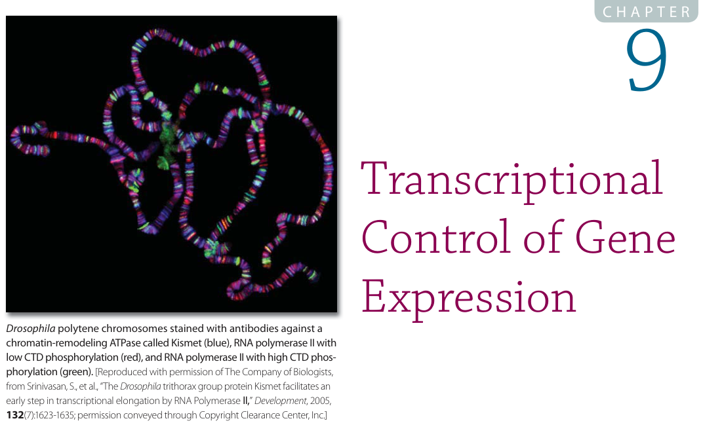
在前几章中我们已经看到，每种细胞类型的性质与功能都由它所含的蛋白质决定。本章和下一章，我们考察多细胞生物中某一特定细胞类型所产生的各种蛋白质，其种类与数量是如何受到调控的。这种基因表达调控是控制多细胞生物（例如我们自己）从单个受精卵发育成构成我们身体的数千种细胞类型的基本过程。当基因表达出现异常时，细胞的性质就会改变，这一过程常常导致癌症的发生。正如第24章将进一步讨论的，在癌细胞中，编码抑制细胞生长的蛋白质的基因被异常阻遏，而编码促进细胞生长与复制的蛋白质的基因则被不适当地激活。基因表达异常还会导致发育缺陷，如腭裂、法洛四联症（一种严重的心脏发育缺陷，可通过手术治疗），以及许多其他缺陷。基因表达调控在细菌和其他单细胞微生物中也起着至关重要的作用，它使细胞能够调整自身的酶系与结构组分，以应对不断变化的营养与物理环境。因此，要理解微生物如何对其环境作出反应、多细胞生物如何正常发育，以及基因表达的病理异常如何发生，就必须理解控制蛋白质生产的分子相互作用。
基因表达的基本步骤——即把某一特定基因所编码的信息解码成特定蛋白质的整个过程——在第5章中已有回顾。合成mRNA需要RNA聚合酶起始转录（起始）、聚合与DNA编码链互补的核糖核苷三磷酸（延伸），然后终止转录（终止）（见图5-11）。在细菌中，核糖体和翻译起始因子可以立即接触新形成的RNA转录本，这些转录本无需进一步修饰即可作为mRNA发挥功能。
然而在真核生物中，最初的RNA转录本要经过加工才能生成功能性mRNA（见图5-15）。随后mRNA从其在细胞核中的合成部位被运送到细胞质，在那里借助核糖体、tRNA和翻译因子被翻译成蛋白质（见图5-23、5-24和5-26）。
调控可以发生在上述基因表达多个步骤中的若干步：转录起始、延伸、RNA加工以及mRNA从细胞核的输出，此外还可以通过控制mRNA降解、mRNA翻译成蛋白质以及蛋白质降解来实现。这种调控导致不同细胞类型或不同发育阶段、或响应外部条件时出现差异性的蛋白质表达。尽管在基因表达的每一步都已发现调控的实例，但对转录起始和延伸——即最初两个步骤——的控制，是决定大多数基因是否表达以及所编码的mRNA（并因此决定蛋白质）产生多少的最重要机制（图9-1）。调控转录起始与延伸的分子机制对众多生物学现象至关重要，包括上文提到的多细胞生物的发育、保护我们免受病原微生物侵害的免疫应答，以及学习和记忆等神经过程。当这些控制转录的调控机制功能失常时，就可能发生病理过程。例如，HOXD13基因的显性突变会导致多指（趾）畸形，即胚胎发育中出现额外的足趾、手指或两者兼有（图9-2a）。HOXD13编码一种转录因子，该因子通常调控多个参与四肢发育的基因的转录。其他影响转录因子功能或表达的突变会使果蝇长出一对额外的翅膀（图9-2b），并改变植物花的结构（图9-2c），还造成许多其他发育异常。
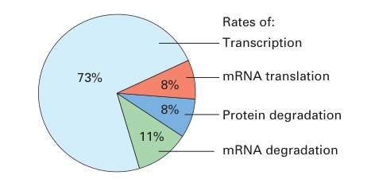
| Transcription | 转录 |
| mRNA translation | mRNA翻译 |
| Protein degradation | 蛋白质降解 |
| mRNA degradation | mRNA降解 |
转录是一个复杂的过程，涉及多层调控。本章我们聚焦于决定一个基因何时被转录的分子事件。首先，我们考察细菌中的基因表达机制——在细菌中，DNA不与组蛋白结合、也不包装成核小体。阻遏蛋白和激活蛋白识别并结合特定的DNA序列，从而控制邻近基因的转录；在许多情况下，新生mRNA中称为核糖开关的特定三级结构会结合代谢物，从而调控转录延伸。本章其余部分则聚焦真核生物的转录调控，以及细菌调控的基本原则如何在高等生物中以更复杂的方式得到应用。此外，真核生物的调控机制还利用DNA与组蛋白八聚体的结合，形成凝聚程度不同的染色质结构，并利用组蛋白尾部的翻译后修饰，如乙酰化和甲基化（见图8-26）。图9-3概述了后生动物（多细胞动物）中的转录调控以及本章所讨论的各个过程。我们讨论负责转录不同类别真核基因的RNA聚合酶如何结合启动子序列，以起始RNA分子的合成；以及特定的DNA序列如何通过充当转录因子的结合位点而作为转录控制区发挥功能。接着我们考察真核激活蛋白和阻遏蛋白如何通过与大型多蛋白复合物的相互作用来影响转录。其中一些多蛋白复合物修饰染色质的凝聚状态，从而改变染色体DNA对转录因子和RNA聚合酶的可及性；另一些复合物则直接影响RNA聚合酶结合启动子并起始转录的频率。非常新的研究表明，在多细胞动物的许多基因中，RNA聚合酶在转录出一小段RNA后即暂停，而一种转录调控机制就是使暂停的聚合酶释放，让它转录基因的其余部分。我们讨论特定基因的转录如何能由人类基因组所编码的约1400种转录因子的特定组合来决定，从而产生细胞类型特异的基因表达。我们还考察转录因子自身的活性受到调控的多种方式，以确保基因只在正确的细胞类型中、在其分化过程中的适当时刻表达。
我们还讨论了最近的研究，它们揭示细胞核中的RNA-蛋白质复合物可以调控转录。新的DNA测序方法结合体外将RNA逆转录为DNA的技术，已揭示真核生物基因组的大部分被转录成不编码蛋白质的低丰度RNA。最近发现若干核内长非编码RNA（lncRNA）能调控其他蛋白编码基因的转录。这一发现提示，由这类非编码RNA介导的转录控制可能比目前所理解的普遍得多。在多种细胞类型中绘制转录因子与染色质特定区域在全基因组范围内的结合图谱所取得的最新进展，首次让我们得以一窥转录因子如何调控胚胎发育——从早期胚胎的多能干细胞一直到构成我们大部分组织的完全分化细胞。调控真核基因表达的RNA加工以及各种转录后机制将在第10章讨论。后续各章，特别是第15、16和21章，将举例说明转录如何受细胞间相互作用的调控，以及由此产生的基因控制如何促进多细胞生物中特定类型细胞的发育与功能。
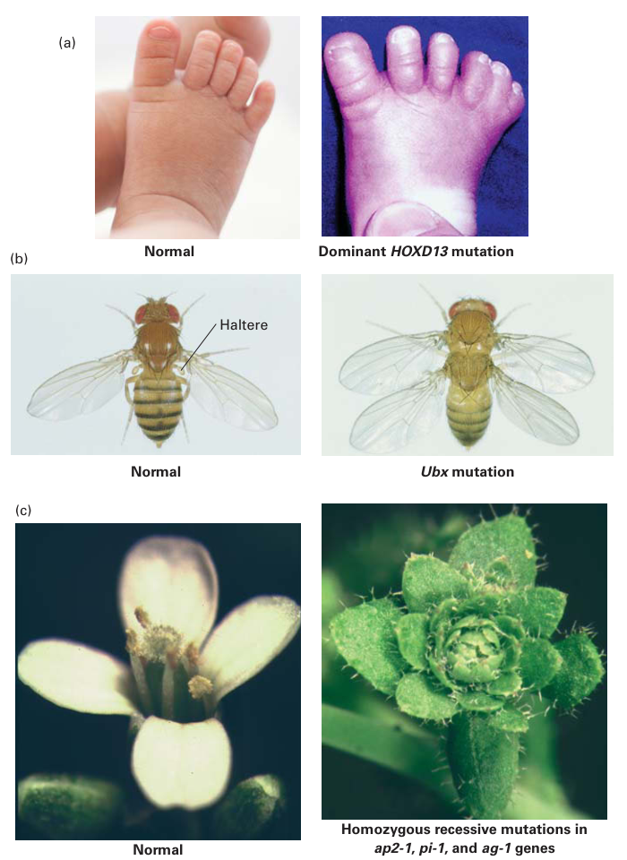
| Haltere | 平衡棒 |
| Normal | 正常 |
| mutation | 突变 |
| Dominant | 显性 |
| homeotic gene | 同源异形基因 |
9.1 细菌中的基因表达调控
由于细胞的结构与功能由其所含的蛋白质决定，基因表达调控是分子细胞生物学的一个基本方面。最常见的情形是，是否转录编码某一特定蛋白质的基因这一「决定」，是控制该蛋白质在细胞中产量的主要机制。通过控制转录，细胞可以调节它产生哪些蛋白质以及这些蛋白质合成的快慢。当一个基因的转录被阻遏时，相应的mRNA和所编码的蛋白质以低速率合成。反之，当一个基因的转录被激活时，mRNA和所编码的蛋白质都以高得多的速率产生。
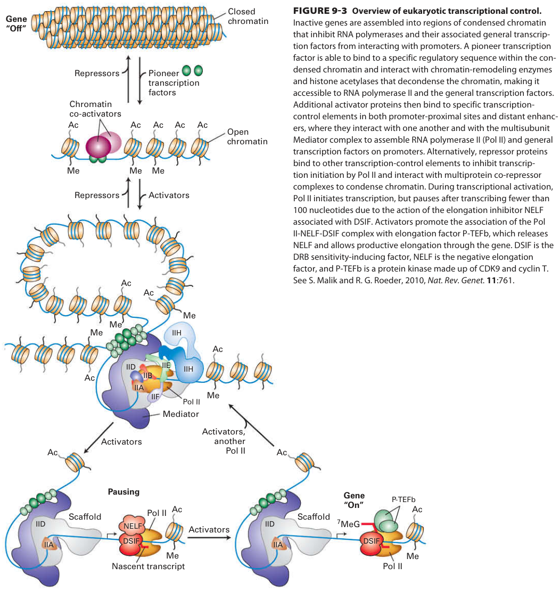
| Ac | Ac（乙酰基） |
| Me | Me（甲基） |
| 7MeG | 7-甲基鸟苷（7MeG） |
| Pioneer transcription factor | 先锋转录因子 |
| Activators | 激活蛋白 |
| Repressors | 阻遏蛋白 |
| co-activators | 辅激活因子 |
| Pol II | RNA聚合酶II（Pol II） |
| Pausing | 暂停 |
| Chromatin | 染色质 |
| Gene “Off” | 基因“关闭” |
| Gene “On” | 基因“开启” |
| Closed chromatin | 闭合染色质 |
| Open chromatin | 开放染色质 |
| Scaffold | 支架 |
| Mediator | 中介体（Mediator） |
| Nascent transcript | 新生转录本 |
在大多数细菌和其他单细胞生物中，基因表达受到高度调控，以便使细胞的酶系与结构组分适应营养与物理环境的变化。因此，在任一时刻，细菌细胞通常只合成其在该条件下生存所需的那些蛋白质。下面我们以大肠杆菌（E. coli）的lac操纵子和谷氨酰胺合成酶基因，以及枯草芽孢杆菌（Bacillus subtilis）的xpt-pbuX操纵子为主要例子，描述细菌转录控制的基本特征。真核生物的转录控制也涉及许多相同的特征，这将是本章其余部分的主题。
细菌RNA聚合酶起始转录需要与σ因子结合
在大肠杆菌中，约一半的基因聚集成操纵子，每个操纵子编码参与某一特定代谢途径的酶，或编码相互作用形成一个多亚基蛋白质复合物的蛋白质。例如，第5章讨论的trp操纵子编码色氨酸生物合成所需的五种多肽（见图5-13）。类似地，lac操纵子编码乳糖（牛奶中的一种糖）代谢所需的三种蛋白质。由于细菌操纵子从单一启动位点转录成单个mRNA，操纵子内的所有基因都受到协同调控，即它们同时以相同的程度被激活或被阻遏。
操纵子以及孤立基因的转录，都由RNA聚合酶与特定阻遏蛋白和激活蛋白之间的相互作用所控制。为了起始转录，大肠杆菌RNA聚合酶必须与少数几种σ（sigma）因子之一结合。真细菌细胞中最常见的是σ70。这种σ因子既结合RNA聚合酶，也结合启动子DNA序列，从而把RNA聚合酶带到启动子上。它识别并结合两个序列：一个是以转录起始位点+1上游约10 bp为中心、长6个碱基对的序列，另一个是以约35 bp为中心、长7个碱基对的序列。因此，−10序列和−35序列共同构成与σ70结合的大肠杆菌RNA聚合酶的启动子（见图5-10b）。尽管σ70接触的启动子序列位于−35和−10处，但大肠杆菌RNA聚合酶通过与序列无关的DNA相互作用，结合从大约−50到+20的启动子区DNA。σ因子还协助RNA聚合酶在转录起始位点解开DNA双链，并把编码链插入聚合酶的活性位点，使转录从+1处开始（见图5-11，步骤2）。σ70-RNA聚合酶的最佳启动子序列——根据多个强启动子确定的「共有序列」——是这一共有序列显示−35区和−10区各位置上最常出现的碱基。字体大小表示该位置碱基的重要程度，其依据是这些碱基发生突变对转录起始频率（即RNA聚合酶每分钟起始转录的次数）的影响。该序列显示的是与被转录RNA具有相同5′→3′取向的DNA链（即非模板链）。不过，σ70-RNA聚合酶最初结合的是双链DNA。在聚合酶转录出几十个碱基对之后，σ70即被释放。因此，σ70是一种起始因子，为转录起始所必需，但一旦起始发生，它就不再为RNA链的延伸所需。
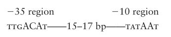
lac操纵子转录的起始可被阻遏或激活
当大肠杆菌处于缺乏乳糖的环境中时，lac mRNA的合成受到阻遏，这样细胞就不会浪费能量去合成它所不需要的酶。在同时含有乳糖和葡萄糖的环境中，大肠杆菌细胞优先代谢葡萄糖这一糖类代谢的核心分子。只有当乳糖存在、且培养基中的葡萄糖大部分被耗尽时，细胞才以高速率代谢乳糖。它们通过以下方式实现这种代谢调节：在乳糖出现之前阻遏lac操纵子的转录，并且只允许合成低水平的lac mRNA，直到胞质溶胶中葡萄糖的浓度降至低水平。lac操纵子在不同条件下的转录由lac阻遏蛋白和降解物激活蛋白（CAP，也称CRP，即cAMP受体蛋白）控制，二者各自结合lac转录控制区中的特定DNA序列；这两个序列分别称为操纵基因和CAP位点（图9-4，上）。
要使lac操纵子开始转录，RNA聚合酶的σ70亚基必须结合到lac启动子的−35和−10启动子序列上。当没有乳糖存在时，lac阻遏蛋白结合到与转录起始位点重叠的lac操纵基因上。因此，结合在操纵基因位点上的lac阻遏蛋白会阻断σ70的结合，从而阻断RNA聚合酶起始转录（图9-4a）。当乳糖存在时，它结合到四聚体lac阻遏蛋白每个亚基上的特定结合位点，引起该蛋白构象改变，使其从lac操纵基因上解离。结果，聚合酶得以结合启动子并起始lac操纵子的转录。然而，当葡萄糖也存在时，转录起始的频率非常低，结果只合成低水平的lac mRNA，因而也只产生lac操纵子所编码的蛋白质（图9-4b）。转录起始频率低，是因为lac启动子中的−35和−10序列与前面所示理想的σ70结合序列不同。
一旦培养基中的葡萄糖被耗尽、细胞内葡萄糖浓度下降，大肠杆菌细胞便通过合成环腺苷酸（cAMP）来作出反应。随着cAMP浓度升高，它结合到二聚体CAP蛋白每个亚基上的一个位点，引起构象改变，使该蛋白得以结合lac转录控制区中的CAP位点。结合后的CAP-cAMP复合物与结合在启动子上的聚合酶相互作用，大大增加转录起始的频率。这种激活导致lac mRNA大量合成，随后lac操纵子所编码的酶也大量合成（图9-4c）。
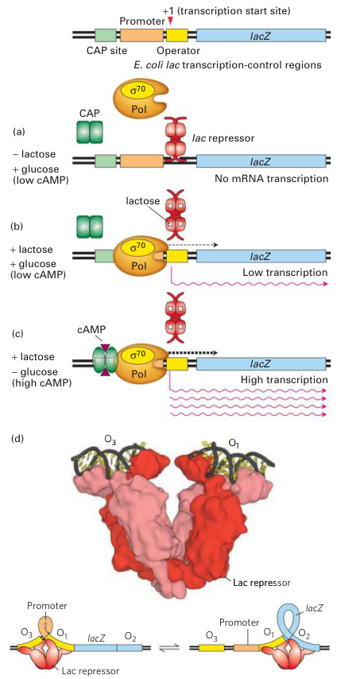
| Promoter | 启动子 |
| lac operon | lac操纵子 |
| Lac repressor | lac阻遏蛋白 |
| repressor | 阻遏蛋白 |
| E. coli | 大肠杆菌 |
| transcription-control region | 转录控制区 |
| CAP site | CAP位点 |
| Operator | 操纵基因 |
| +1 (transcription start site) | +1（转录起始位点） |
| lactose | 乳糖 |
| glucose | 葡萄糖 |
| (low cAMP) | （低cAMP） |
| (high cAMP) | （高cAMP） |
| No mRNA transcription | 无mRNA转录 |
| Low transcription | 低转录 |
| High transcription | 高转录 |
事实上，lac操纵子比图9-4a–c的简化模型所描绘的更为复杂。四聚体lac阻遏蛋白实际上同时结合两个DNA序列：一个在主要操纵基因（lacO1）处，与RNA聚合酶在启动子上结合的DNA区域重叠；另一个在两个次级操纵基因之一处，分别以+412（lacO2，位于lacZ蛋白编码区内）和−82（lacO3）为中心（图9-4d）。lac阻遏蛋白四聚体是二聚体的二聚体，每个二聚体结合一个操纵基因（图9-4d）。四聚体lac阻遏蛋白之所以能同时结合主要lac操纵基因和两个次级操纵基因之一，是因为DNA相当柔韧——正如我们在真核生物核小体中DNA缠绕在组蛋白八聚体表面时所看到的（见图8-24）。次级操纵基因的作用是提高主要操纵基因微环境中的lac阻遏蛋白局部浓度，而阻遏蛋白在该处结合会阻断RNA聚合酶的结合。由于结合反应的平衡取决于结合伙伴的浓度，由此在O1附近产生的lac阻遏蛋白局部浓度升高，会增加阻遏蛋白与O1的结合。每个大肠杆菌细胞中大约有10个lac阻遏蛋白四聚体。由于能与O2和O3结合，几乎总有一个lac阻遏蛋白四聚体比这10个四聚体在细胞中随机扩散时更靠近O1。如果O2和O3都发生突变，使lac阻遏蛋白不再以高亲和力与它们结合，lac启动子处的阻遏就会降低70倍。仅O2或仅O3突变会使阻遏降低两倍，这表明这两个次级操纵基因中任意一个都能提供阻遏增强的大部分。
尽管不同大肠杆菌基因的启动子表现出相当大的同源性，它们的确切序列仍有差别。启动子序列决定了在无阻遏蛋白或激活蛋白时，RNA聚合酶–σ复合物起始某个基因转录的内在频率。能够支持高转录起始频率的启动子，其−10和−35序列与前面所示理想启动子相似，称为强启动子。支持低转录起始频率的启动子则与该理想序列不同，称为弱启动子。例如，lac操纵子有一个弱启动子，其序列在若干位置上与共有强启动子不同。它较低的内在起始频率进一步被lac阻遏蛋白降低，并被cAMP-CAP复合物大幅提高。
小分子通过DNA结合阻遏蛋白和激活蛋白调控许多细菌基因的表达
大多数大肠杆菌基因的转录都由与lac操纵子类似的机制调控，尽管各启动子处的具体相互作用有所不同。一般机制涉及一种特定的阻遏蛋白，它结合基因或操纵子的操纵基因区，从而阻断转录起始。一种小分子配体结合到该阻遏蛋白上，控制其DNA结合活性，并因此控制转录起始的频率，从而按细胞需要调节mRNA及所编码蛋白质的合成速率。与lac操纵子一样，许多真细菌的转录控制区含有一个或多个次级操纵基因，它们对阻遏水平有所贡献。
特定的激活蛋白（如lac操纵子中的CAP）也控制着一部分带有该激活蛋白结合位点的细菌基因的转录。与CAP一样，其他激活蛋白与RNA聚合酶一起结合DNA，刺激从特定启动子开始的转录。激活蛋白的DNA结合活性可以受到调节以响应细胞需要，方式是特定小分子配体（如cAMP）的结合，或改变激活蛋白构象的翻译后修饰（如磷酸化）。
某些启动子的转录起始需要替代σ因子
大多数大肠杆菌启动子与σ70-RNA聚合酶（细菌酶的主要起始形式）相互作用。然而，某些类群基因的转录由含若干替代σ因子之一的大肠杆菌RNA聚合酶起始，这些σ因子识别与σ70不同的共有启动子序列（表9-1）。
| σ因子 | 识别的启动子 | 启动子共有序列 | |
|---|---|---|---|
| −35区 | −10区 | ||
| （） | 管家基因，即指数生长细胞中的大多数基因 | TTGACA | TATAAT |
| （） | 稳定期基因和一般应激应答 | TTGACA | TATAAT |
| （） | 由细胞质中的未折叠蛋白诱导；包括编码使未折叠蛋白重新折叠的分子伴侣的基因，以及导致细胞质中未折叠蛋白降解的蛋白酶系统的基因 | TCTCNCCCTTGAA | CCCCATNTA |
| （） | 由周质空间和细胞膜中的未折叠蛋白激活；包括编码恢复细胞被膜完整性的蛋白质的基因 | GAACTT | TCTGA |
| （） | 参与鞭毛组装的基因 | CTAAA | CCGATAT |
| FecI（） | 铁摄取所需的基因 | TTGGAAA | GTAATG |
| −24区 | −12区 | ||
| （） | 氮代谢及其他功能的基因 | CTGGNA | TTGCA |
数据来源：T. M. Gruber 与 C. A. Gross，2003，Annu. Rev. Microbiol. 57:441；以及 B. K. Cho 等，2014，BMC Biol. 12:4。
这些替代σ因子是将功能相关的一组组基因转录所必需的，例如参与热激或营养缺乏应答、运动性，或在革兰氏阳性真细菌中参与芽孢形成的基因。在大肠杆菌中，除主要的「持家」σ因子σ70外，还有6种替代σ因子。根据对数百个真细菌基因组的序列分析，革兰氏阳性、可形成芽孢的细菌天蓝色链霉菌（Streptomyces coelicolor）基因组编码63种σ因子，是目前已知最多的。其中大多数在结构和功能上与σ70相关。由含σ70样因子的RNA聚合酶进行的转录起始，受结合在聚合酶结合区域附近DNA上的阻遏蛋白和激活蛋白调控。但有一类因子与σ70无关、作用方式也不同，在大肠杆菌中以σ54为代表。
σ54-RNA聚合酶的转录由结合在远离启动子处的激活蛋白控制
σ54的序列与所有σ70样因子都明显不同。由含σ54的RNA聚合酶进行的基因转录，仅由激活蛋白调控，这些激活蛋白在DNA中的结合位点称为增强子，一般位于转录起始位点上游80–160 bp处。
即使把增强子移到距起始位点超过1千碱基之外，σ54激活蛋白仍能激活转录。
特征描述得最清楚的σ54激活蛋白是NtrC蛋白（氮调控蛋白C），它刺激glnA基因的转录。glnA基因编码谷氨酰胺合成酶，该酶由谷氨酸和氨合成氨基酸谷氨酰胺——氮代谢的核心分子。σ54-RNA聚合酶结合glnA启动子，但在被二聚体蛋白NtrC激活之前，它并不解开DNA双链、也不起始转录。NtrC本身则受一种称为NtrB的蛋白激酶调控。响应低水平的谷氨酰胺，NtrB使二聚体NtrC磷酸化，后者随即结合glnA启动子上游的增强子。结合在增强子上的磷酸化NtrC随后刺激结合在启动子上的σ54聚合酶解开DNA双链并起始转录。
电子显微镜研究表明，结合在增强子上的磷酸化NtrC与结合在启动子上的σ54聚合酶直接相互作用，在两个结合位点之间的DNA上形成一个环（图9-5）。正如本章后面所讨论的，这种激活机制类似于真核生物中转录激活的主要机制。
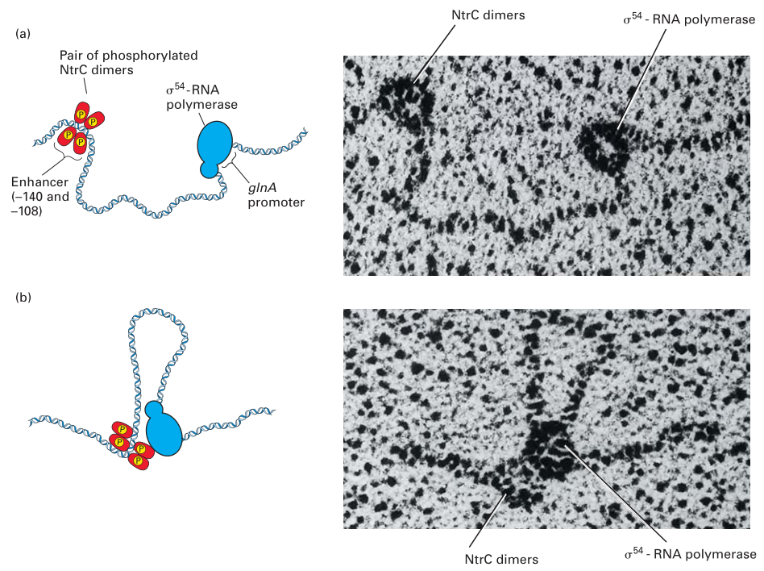
| promoter | 启动子 |
| Enhancer | 增强子 |
| Pair of phosphorylated NtrC dimers | 一对磷酸化的NtrC二聚体 |
| σ54-RNA polymerase | σ54-RNA聚合酶 |
NtrC具有ATP酶活性，而由磷酸化NtrC激活已结合的σ54-RNA聚合酶需要ATP水解。ATP水解有缺陷的NtrC突变体，无一例外都无法刺激σ54-RNA聚合酶在转录起始位点解开DNA双链。据推测，ATP水解提供了解开DNA双链所需的能量。相比之下，σ70聚合酶在起始位点解开双链并不需要ATP水解。
许多细菌应答受双组分调控系统控制
正如我们刚刚看到的，大肠杆菌glnA基因的控制取决于NtrC和NtrB两种蛋白质。这类双组分调控系统控制着细菌对许多环境变化的应答。在谷氨酰胺浓度高时，谷氨酰胺结合NtrB的传感器结构域，引起该蛋白构象改变，从而抑制其组氨酸激酶活性（图9-6a）。同时，NtrC的调控结构域阻断其DNA结合结构域与glnA增强子的结合。在谷氨酰胺浓度低时，谷氨酰胺从NtrB蛋白的传感器结构域上解离，导致NtrB中组氨酸激酶传递结构域被激活，该结构域把ATP的γ-磷酸基转移给传递结构域中的一个组氨酸残基（H）。这个磷酸组氨酸随后把磷酸基转移给NtrC蛋白中的一个天冬氨酸残基（D）。这引起NtrC构象改变，使NtrC的DNA结合结构域暴露出来，从而能够结合glnA增强子。
许多其他细菌应答由与NtrB和NtrC同源的两种蛋白质调控（图9-6b）。
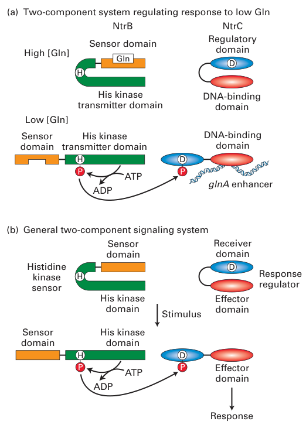
| General two-component signaling system | 通用双组分信号系统 |
| Two-component system regulating response to low Gln | 调控低谷氨酰胺应答的双组分系统 |
| Sensor domain | 感受器结构域 |
| His kinase transmitter domain | 组氨酸激酶传递域 |
| Histidine kinase | 组氨酸激酶 |
| Regulatory domain | 调节结构域 |
| DNA-binding domain | DNA结合结构域 |
| Response regulator | 应答调节蛋白 |
| Receiver domain | 接受器结构域 |
| Effector | 效应物 |
| Stimulus | 刺激 |
| Gln | 谷氨酰胺（Gln） |
| enhancer | 增强子 |
| High [Gln] | 高[Gln] |
| Low [Gln] | 低[Gln] |
在每一个这样的调控系统中，一种称为组氨酸激酶传感器的蛋白质含有一个潜在的组氨酸激酶传递结构域，该结构域响应由传感器结构域检测到的环境变化而受到调控。被激活时，传递结构域把ATP的γ-磷酸基转移给传递结构域中的一个组氨酸残基。第二种蛋白质称为应答调节蛋白，含有一个接收结构域，它与NtrC中被激活的NtrB所磷酸化的天冬氨酸残基所在区域同源。应答调节蛋白还含有第二个功能结构域，该结构域受接收结构域磷酸化的调控。在许多情况下，应答调节蛋白的这一结构域是一个序列特异性的DNA结合结构域，它结合相关的DNA序列，并作为阻遏蛋白（像lac阻遏蛋白那样）或激活蛋白（像CAP或NtrC那样）发挥功能，调控特定基因的转录。不过，这个效应结构域也可以具有其他功能，例如控制细菌响应营养物浓度梯度而游动的方向。尽管所有传递结构域都同源（接收结构域也是如此），但某一特定传感器蛋白的传递结构域只磷酸化特定应答调节蛋白的接收结构域，从而使得不同的环境变化能引发特定的应答。植物中也存在类似的双组分组氨酸-天冬氨酸磷酸中继调控系统。
许多细菌操纵子的表达受转录延伸调控的控制
除了激活蛋白和阻遏蛋白对转录起始的调控外，许多细菌操纵子的表达还通过在启动子近端区域对转录延伸的调控来控制。这种控制机制最早是在研究大肠杆菌trp操纵子转录时发现的（见图5-13）。当胞质中色氨酸浓度高时，trp操纵子的转录被trp阻遏蛋白阻遏。但当带电tRNATrp的浓度足以支持高速率蛋白质合成时，仍然发生的那一低水平转录起始会进一步受到一种称为衰减作用的过程的控制。trp操纵子的前140 nt并不编码色氨酸生物合成所需的蛋白质，而是构成一段短肽「前导序列」，如图9-7a所示。该前导序列的第1区含有两个连续的Trp密码子。第3区既能与第2区碱基配对，也能与第4区碱基配对。核糖体紧随RNA聚合酶之后，在trp前导序列的5′端刚从RNA聚合酶中露出后不久就起始前导肽的翻译。当tRNATrp的浓度足以支持高速率蛋白质合成时，核糖体迅速翻译通过第1区进入第2区，从而在第2区刚从正在转录的RNA聚合酶表面露出时，阻断其与第3区碱基配对的能力（图9-7b，左）。于是，第3区在刚从聚合酶表面露出时便与第4区碱基配对，形成一个茎环（见图5-9a）后接若干尿嘧啶，这是使细菌RNA聚合酶暂停转录并终止转录的信号。结果，长的trp操纵子的其余部分不被转录，当色氨酸浓度高时，细胞不会浪费色氨酸合成或所编码蛋白质翻译所需的能量。
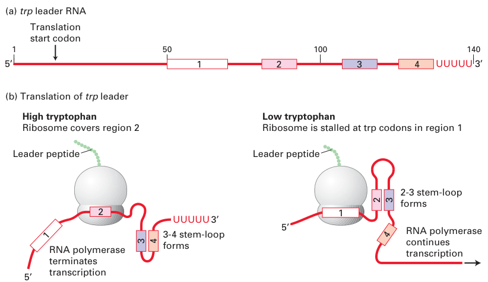
| Translation start codon | 翻译起始密码子 |
| 3–4 stem-loop | 3–4茎环 |
| 2–3 stem-loop | 2–3茎环 |
| Leader peptide | 前导肽 |
| trp | 色氨酸 |
| trp leader RNA | trp前导RNA |
| trp operon | trp操纵子 |
| Polycistronic | 多顺反子 |
| High tryptophan | 高色氨酸 |
| Low tryptophan | 低色氨酸 |
| Charged tRNATrp | 带电荷的tRNATrp |
| Ribosome covers region 2 | 核糖体覆盖区域2 |
| Ribosome is stalled at trp codons in region 1 | 核糖体停滞在区域1的trp密码子处 |
| RNA polymerase | RNA聚合酶 |
| RNA polymerase terminates transcription | RNA聚合酶终止转录 |
| Transcription continues | 转录继续 |
| Attenuation | 衰减作用 |
然而，当tRNATrp的浓度不足以支持高速率蛋白质合成时，核糖体会停滞在第1区的两个连续Trp密码子处（图9-7b，右）。结果，第2区在刚从正在转录的RNA聚合酶露出时便与第3区碱基配对。这阻止了第3区与第4区碱基配对，因此3–4发夹不能形成，也就不会引起RNA聚合酶暂停或转录终止。于是，色氨酸合成所需的蛋白质便由在长的多顺反子trp mRNA中各蛋白质起始密码子处起始翻译的核糖体翻译出来。
转录延伸的衰减作用也发生在某些操纵子和单个基因中，这些基因编码参与其他氨基酸和代谢物生物合成的酶，其衰减通过核糖开关的功能实现。核糖开关是RNA序列，最常见于细菌mRNA的5′非翻译区。它们折叠成称为适配体的复杂三级结构，当小分子代谢物浓度足够高时与之结合。在某些情况下，这种结合导致形成茎环结构，从而引起转录提前终止，如枯草芽孢杆菌的xpt-pbuX操纵子——它编码参与嘌呤合成的酶（图9-8）。当小分子代谢物浓度较低时，代谢物不被适配体结合，于是形成不引起转录终止的替代RNA结构，从而允许编码参与代谢物合成的酶的基因转录。正如我们将在下文看到的，尽管真核生物中的机制不同，最近也发现启动子近端转录暂停与终止的调控在多细胞生物的基因表达调控中频繁发生。
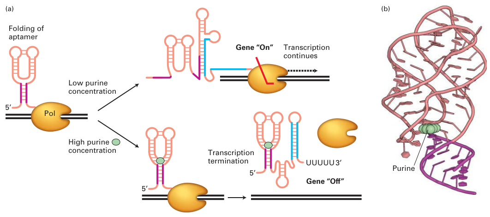
| Gene “On” | 基因“开启” |
| Gene “Off” | 基因“关闭” |
| Riboswitch | 核糖开关 |
| Purine | 嘌呤 |
| High purine concentration | 高嘌呤浓度 |
| Low purine concentration | 低嘌呤浓度 |
| Aptamer | 适配体 |
| Folding of aptamer | 适配体的折叠 |
| Stem-loop | 茎环 |
| Run of uridines | 尿苷串 |
| Transcription continues | 转录继续 |
| Transcription termination | 转录终止 |
- 原核生物和真核生物中的基因表达，主要由控制基因转录的机制来调控。
- 在大肠杆菌中，转录起始的第一步是与RNA聚合酶结合的σ因子结合到启动子上。
- 启动子的核苷酸序列决定其强度，即不同的RNA聚合酶分子每分钟能结合并起始转录的频率。
- 阻遏蛋白是结合到与启动子重叠或紧邻启动子的操纵基因序列上的蛋白质。阻遏蛋白与操纵基因的结合会抑制转录起始或延伸。
- 大多数细菌阻遏蛋白的DNA结合活性受小分子配体调节。这使细菌细胞能够响应环境中各种营养物质以及胞质中各种代谢物浓度的变化，调控特定基因的转录。
- lac操纵子和某些其他细菌基因还受激活蛋白调控，这些激活蛋白结合在启动子旁，通过与结合在该启动子上的RNA聚合酶直接相互作用来提高转录起始的频率。
- 大肠杆菌中主要的σ因子是σ70，但也存在若干其他丰度较低的σ因子，它们各自识别不同的共有启动子序列，或与不同的激活蛋白相互作用。
- 除含σ54的RNA聚合酶外，所有大肠杆菌RNA聚合酶进行的转录起始，都可以由结合在转录起始位点附近的阻遏蛋白和激活蛋白调控（见图9-4）。
- 由σ54-RNA聚合酶转录的基因，由结合在起始位点上游约100个碱基对处增强子上的激活蛋白调控。当激活蛋白与σ54-RNA聚合酶相互作用时，它们结合位点之间的DNA形成一个环（见图9-5）。
- 在双组分调控系统中，一种蛋白质充当传感器，监测环境中营养物质或其他组分的水平。在适当条件下，ATP的γ-磷酸基先被转移给传感器蛋白中的一个组氨酸，再被转移给第二种蛋白质——应答调节蛋白——中的一个天冬氨酸。随后，被磷酸化的应答调节蛋白针对刺激执行特定功能，例如结合DNA调控序列，从而刺激或阻遏特定基因的转录（见图9-6）。
- 细菌中的转录还可以通过在启动子近端区域控制转录延伸来调控。这种控制可以由核糖体结合新生mRNA来实现，如大肠杆菌trp操纵子的情形（见图9-7），也可以通过核糖开关——结合小分子的RNA序列——来实现，如枯草芽孢杆菌xpt-pbuX操纵子的情形（见图9-8），以决定是否形成后接一串尿嘧啶的茎环，从而使细菌RNA聚合酶暂停并终止转录。
9.2 真核基因调控概览
在细菌中，基因调控的主要作用是使单个细胞能够适应环境的变化，从而使其生长和分裂达到最优。在多细胞生物中，环境变化同样会诱导基因表达的改变。一个例子是对低氧浓度（缺氧，hypoxia）的应答：此时一组特定的基因被迅速诱导，帮助细胞在缺氧条件下存活。这些基因中包括编码分泌型血管生成蛋白的基因，后者可刺激新毛细血管向周围组织内生长并长入其中。然而，多细胞生物中基因调控最具特征、生物学意义最深远的目的，是执行作为胚胎发育基础的遗传程序。共同构成一个多细胞生物的众多不同细胞类型，其产生依赖于在发育期的恰当时间、于恰当的细胞中激活恰当的基因。
在多数情况下，细胞一旦完成某一步发育决定，就不会再逆转。因此这类决定与细菌基因响应环境条件而发生的可逆性激活和阻遏有着根本区别。在执行遗传程序的过程中，许多已分化的细胞（例如皮肤细胞、红细胞和产生抗体的细胞）沿着一条通路走向最终的细胞死亡，不留下任何后代。导致分化的这种固定不变的基因调控模式，服务于整个生物体的需要，而非单个细胞的存活。
尽管细菌与真核生物基因调控的目的不同，但最初在细菌中发现、并在上一节中描述过的转录调控的两个关键特征，同样适用于真核细胞。第一，与基因相关联的是一段段能与蛋白质结合的调控DNA序列，即转录控制区。第二，与基因转录控制区结合的特定蛋白质决定转录从何处起始，并激活或阻遏转录。细菌与真核生物转录控制的一个根本差别，源于真核染色体DNA与组蛋白八聚体结合，形成核小体；核小体进一步缔合成染色质纤维，后者又缔合成压缩程度各异的染色质（见图8-24、8-25、8-27和8-28）。真核细胞利用染色质结构来调控转录，这是细菌所不具备的一种转录调控机制。在多细胞真核生物中，许多失活基因被组装进压缩的染色质，从而抑制RNA聚合酶和转录起始所需的通用转录因子与之结合（见图9-3）。激活蛋白可与基因转录起始位点附近以及数千碱基之外的转录控制区结合，促进染色质解压缩、RNA聚合酶与启动子的结合以及转录延伸。阻遏蛋白则与另外一些控制元件结合，引起染色质压缩，并抑制聚合酶的结合或延伸。本节我们讨论真核基因调控的一般原理，并指出细菌与真核系统之间的一些异同。本章后续各节将更详细地论述真核转录的具体方面。
真核DNA中的调控元件既位于转录起始位点附近，也位于其数千碱基之外
对不同细胞类型中多个基因转录速率的直接测定表明，与细菌一样，在真核生物中，无论发生在起始步骤还是启动子近端区域的延伸过程中，转录调控都是最普遍的基因调控形式。在真核生物中，正如在细菌中一样，规定RNA聚合酶在何处结合并起始基因转录的DNA序列称为启动子。特定启动子的转录由DNA结合蛋白控制，这些蛋白在功能上等同于细菌的阻遏蛋白和激活蛋白。不过，真核转录调控蛋白通常既能激活、也能阻遏转录，这取决于它们与其他蛋白的结合情况。因此，它们被更笼统地称为转录因子。
与细菌基因组相比，真核基因组中转录因子所结合的DNA控制元件往往距离它们所调控的启动子远得多。在某些情况下，转录因子结合在距启动子上游（与转录方向相反）或下游（与转录方向相同）数万碱基处的调控位点。由于这种排布方式，单个基因的转录可以由多种不同的转录因子结合到不同的控制元件上来调控，从而指导同一基因在不同类型细胞中、在发育的不同时期表达。
例如，多个彼此独立的转录控制区共同调控编码转录因子Pax6的哺乳动物基因的表达。如第1章所述，Pax6蛋白是眼发育所必需的。Pax6还是脑和脊髓某些区域、以及胰腺中分泌胰岛素等激素的细胞的发育所必需的。同样如第1章所述，只有一个功能性Pax6基因的杂合子人出生时即患无虹膜症，即眼中缺少虹膜（见图1-30d）。在哺乳动物中，Pax6基因至少由三个不同的启动子表达，这些启动子在不同细胞类型中、在胚胎发生的不同时期发挥作用（图9-9a）。
研究者常通过制备重组DNA分子来分析转录控制区，这些分子把待测DNA片段与一种表达易于检测的报告基因的编码区组合在一起。典型的报告基因包括编码荧光素酶的基因，该酶能产生光，可用光度计以极高的灵敏度和跨越许多个数量级的强度范围进行检测。其他常用的报告基因编码绿色荧光蛋白（GFP），可通过荧光显微镜观察（见图4-9d和4-16）；还有大肠杆菌β-半乳糖苷酶，它与无色可溶的乳糖类似物X-gal一起孵育时会产生强烈的蓝色不溶沉淀。当把β-半乳糖苷酶报告基因与Pax6外显子0上游8 kb的DNA融合的转基因小鼠（见图6-40）制备出来后，在妊娠中期的胚胎发育中的晶状体、角膜和胰腺中观察到了β-半乳糖苷酶（图9-9b）。对带有该区域较小DNA片段的转基因小鼠的分析，使得人们能够定位分别调控胰腺以及晶状体和角膜中转录的各个独立转录控制区。带有其他报告基因构建体的转基因小鼠又揭示出更多的转录控制区（见图9-9a）。这些区域控制发育中的视网膜和发育中脑（encephalon）不同区域的转录。其中一些转录控制区位于外显子4与5之间以及外显子7与8之间的内含子中。例如，图9-9a中位于外显子4和5之间、标记为Retina的区域所控制的报告基因，其表达特异性地出现在视网膜中（图9-9c）。
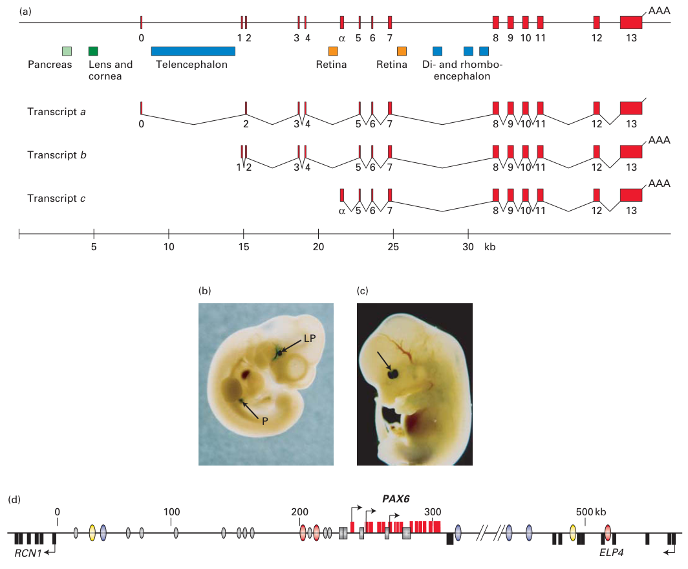
| Pancreas | 胰腺 |
| Lens and cornea | 晶状体与角膜 |
| Telencephalon | 端脑 |
| Retina | 视网膜 |
| Diencephalon and rhombencephalon | 间脑与菱脑 |
| Transcript | 转录本 |
| promoters | 启动子 |
| PAX6 | Pax6基因 |
| Conserved sequence | 保守序列 |
| Transgene | 转基因 |
| Reporter gene | 报告基因 |
| Zebrafish | 斑马鱼 |
| Topological domain | 拓扑结构域 |
许多基因的控制区位于该基因编码外显子数百千碱基之外。鉴定这类远距离控制区的一种方法是比较亲缘关系很远的生物之间的序列。一个保守基因的转录控制区往往也是保守的，因此可以在进化过程中发生分化的非功能序列背景中被识别出来。
例如，在SALL1基因下游约500 kb处有一段在人类、小鼠、鸡、蛙和鱼之间高度保守的人类DNA序列（图9-10a）。SALL1编码一种为四肢正常发育所必需的转录因子。当把这段保守DNA序列与β-半乳糖苷酶报告基因相连并制备转基因小鼠时（图9-10b），转基因胚胎在发育中的肢芽中表达了很高水平的β-半乳糖苷酶（图9-10c）。基因组中这一区域发生缺失的人类患者会出现肢体畸形。这些结果表明，该保守区域指导发育中肢体里SALL1基因的转录。据推测，还有其他转录控制区控制该基因在其他类型细胞中的表达，它在那里参与耳、下段小肠和肾的正常发育。
由于转录控制区的序列和功能在进化中往往保守，那么与这些转录控制区结合、在特定细胞类型中调控基因表达的转录因子，想必在进化中也同样保守。这使得人们能够通过在转基因斑马鱼中检测报告基因的表达来检验人类DNA中的控制区，这一流程远比制备转基因小鼠简便、快速和廉价（图9-9d）。在讨论了真核细胞中与RNA聚合酶共同执行转录的蛋白质以及真核启动子之后，我们将回过头来讨论像增强子这类远距离转录控制区被认为是如何发挥作用的。
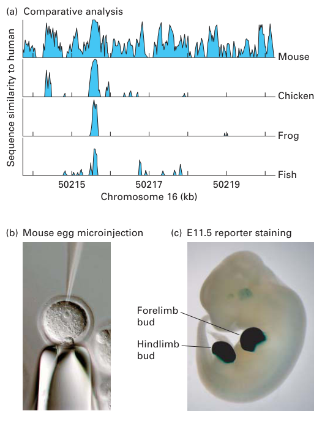
| (a) Comparative analysis | （a）比较分析 |
| (b) Mouse egg microinjection | （b）小鼠卵微注射 |
| (c) E11.5 reporter staining | （c）E11.5报告基因染色 |
| Hindlimb bud | 后肢芽 |
| Forelimb bud | 前肢芽 |
| Mouse | 小鼠 |
| Chicken | 鸡 |
| Frog | 蛙 |
| Fish | 鱼 |
| Sequence similarity to human | 与人类的序列相似性 |
| Conserved sequence | 保守序列 |
| Chromosome 16 (kb) | 16号染色体（kb） |
三种真核RNA聚合酶催化不同RNA的生成
迄今研究过的所有真核细胞（例如脊椎动物、果蝇、酵母和植物细胞）的细胞核中，都含有三种不同的RNA聚合酶，分别命名为I、II和III。在离子交换层析中，这些酶在不同盐浓度下被洗脱下来，反映出它们净电荷的差异。三种核RNA聚合酶对α-鹅膏蕈碱的敏感性也不同，后者是某些蘑菇产生的一种有毒的环状八肽（图9-11）。RNA聚合酶I对α-鹅膏蕈碱不敏感，而RNA聚合酶II则非常敏感——该药物结合在酶活性位点附近，抑制酶沿DNA模板的移动。RNA聚合酶III的敏感性居中。
每种真核RNA聚合酶催化转录编码不同类别RNA的基因（表9-2）。位于核仁中的RNA聚合酶I（Pol I）转录编码前体rRNA（pre-rRNA）的基因，后者被加工成28S、5.8S和18S rRNA。RNA聚合酶III（Pol III）转录编码tRNA、5S rRNA以及一系列小的稳定RNA的基因，其中包括一种参与RNA剪接的RNA（U6）和参与将新生蛋白质导向内质网的信号识别颗粒（SRP）的RNA组分（见第13章）。RNA聚合酶II（Pol II）转录所有蛋白质编码基因：也就是说，它参与mRNA的生成。RNA聚合酶II还生成参与RNA剪接的五种小核RNA（snRNA）中的四种，以及参与翻译调控的微RNA（miRNA）和与之密切相关的内源小干扰RNA（siRNA）（见第10章）。
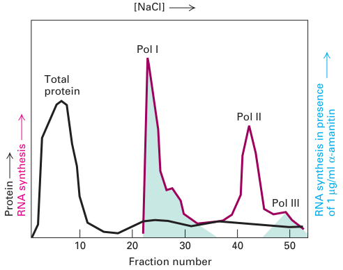
| Protein | 蛋白质 |
| RNA synthesis | RNA合成 |
| Total | 总计 |
| Fraction number | 组分编号 |
| Pol I | RNA聚合酶I（Pol I） |
| Pol II | RNA聚合酶II（Pol II） |
| Pol III | RNA聚合酶III（Pol III） |
| α-amanitin | α-鹅膏蕈碱 |
| RNA synthesis in presence of 1 μg/ml α-amanitin | 在1 μg/ml α-鹅膏蕈碱存在下的RNA合成 |
| 聚合酶 | 所转录的RNA | RNA功能 |
|---|---|---|
| RNA聚合酶I | 前体rRNA（pre-rRNA）：28S、18S、5.8S rRNA | 核糖体组分，蛋白质合成 |
| RNA聚合酶II | 信使RNA（mRNA） | 编码蛋白质 |
| 小核RNA（snRNA） | RNA剪接 | |
| 小干扰RNA（siRNA） | 染色质介导的阻遏，翻译控制 | |
| 微RNA（miRNA） | 翻译控制 | |
| RNA聚合酶III | 转运RNA（tRNA） | 蛋白质合成 |
| 5S rRNA | 核糖体组分，蛋白质合成 | |
| 小核RNA U6（snRNA U6） | RNA剪接 | |
| 7S RNA | 用于将多肽插入内质网的信号识别颗粒 | |
| 其他小的稳定RNA | 功能多样，其中许多尚不清楚 |
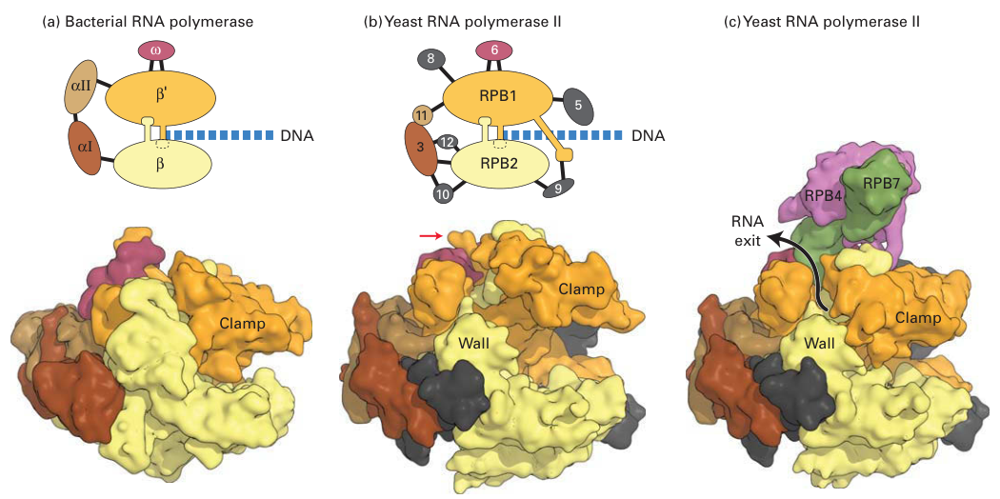
| RNA exit | RNA出口 |
| (a) Bacterial RNA polymerase | （a）细菌RNA聚合酶 |
| (b) Yeast RNA polymerase II | （b）酵母RNA聚合酶II |
| (c) Space-filling model of yeast RNA polymerase II | （c）酵母RNA聚合酶II的空间填充模型 |
| Clamp | 夹钳（Clamp） |
| Wall | 壁（Wall） |
| RPB (RNA polymerase B) | RPB（RNA聚合酶B） |
三种真核RNA聚合酶中的每一种都比大肠杆菌RNA聚合酶更复杂，但这四种多亚基RNA聚合酶具有相似的总体设计（图9-12a、b）。三种真核RNA聚合酶都含有两个大亚基和10–14个较小的亚基，其中一些亚基为两种或三种聚合酶所共有。研究得最清楚的真核RNA聚合酶来自酿酒酵母（Saccharomyces cerevisiae）。编码酵母聚合酶各亚基的每个基因都经过了基因敲除突变，并对所产生的表型进行了鉴定。此外，酵母RNA聚合酶II的三维结构也已测定（图9-12b、c）。迄今研究过的所有真核生物的三种核RNA聚合酶都与酵母的非常相似。植物含有另外两种核RNA聚合酶（RNA聚合酶IV和V），它们与自身的RNA聚合酶II密切相关，但具有一个独特的大亚基和若干额外特有的亚基。这两种聚合酶在植物中参与由核内siRNA指导的转录阻遏。
三种真核RNA聚合酶（以及植物的RNA聚合酶IV和V）的两个大亚基彼此相关，并分别与大肠杆菌的β′和β亚基相似（见图9-12a、b）。每种真核RNA聚合酶还含有一个类似ω的亚基和两个不相同的类似α的亚基（图9-13）。来自不同来源的RNA聚合酶在这些核心亚基结构上的高度相似性表明，RNA聚合酶在进化上出现得很早，并且在很大程度上被保守下来。对于一种催化从DNA拷贝RNA这样基础性过程的酶来说，这似乎是合乎逻辑的。除了与大肠杆菌RNA聚合酶亚基相关的核心亚基之外，三种酵母RNA聚合酶都还含有四个额外的小亚基，它们为三者所共有，而细菌RNA聚合酶没有。最后，每种真核核RNA聚合酶都有若干个该酶特有的亚基，不存在于另外两种聚合酶中（见图9-13）。Pol I和Pol III的这些额外亚基中有三个与Pol II特有的三个额外亚基同源。Pol I特有的另外两个亚基与后文将讨论的Pol II通用转录因子TFIIF同源，而Pol III的四个额外亚基与Pol II通用转录因子TFIIF和TFIIE同源。这些亚基很可能在细胞中稳定地与Pol III结合，在纯化过程中不会从其上解离。
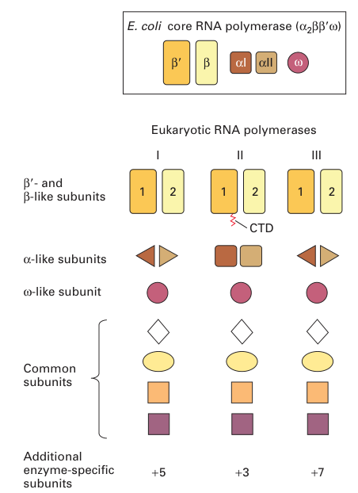
| E. coli | 大肠杆菌 |
| E. coli core RNA polymerase | 大肠杆菌核心RNA聚合酶 |
| Eukaryotic RNA polymerases | 真核RNA聚合酶 |
| Common subunits | 共有亚基 |
| Enzyme-specific subunits | 酶特异性亚基 |
| α-like subunits | α样亚基 |
| CTD | 羧基端结构域（CTD） |
RPB1亚基的夹钳（clamp）结构域之所以这样命名，是因为在游离Pol II的晶体中（图9-14a）以及在一个模拟该酶延伸构象的复合物中（图9-14b），都观察到它处于两个不同的位置。该结构域绕一个铰链旋转：当下游DNA插入聚合酶的这一区域时，铰链大概处于开放状态；而当酶进入延伸模式时，铰链便闭合。据推测，当活性位点附近8–9 bp的RNA-DNA杂交区（其中RNA与模板链碱基配对；见图9-14b）结合在RPB1与RPB2之间时，夹钳被锁定在闭合位置，把聚合酶锚定在下游双链DNA上。此外，后文将讨论的一种称为DSIF的转录延伸因子与延伸中的聚合酶结合，使夹钳保持闭合构象。因此，该聚合酶具有极强的持续合成能力，也就是说，它会持续聚合核糖核苷酸，直到转录终止。转录终止、RNA从出口通道释放之后，夹钳便可摆开，使酶从模板DNA上脱落。这一机制可以解释人类RNA聚合酶II如何能够转录人类最长的基因——编码肌营养不良蛋白（dystrophin）的基因（DMD；见图1-31），该基因长约200万个碱基对——而不发生解离和转录终止。由于转录延伸的速度为每分钟1–2 kb，转录DMD基因大约需要一天时间！
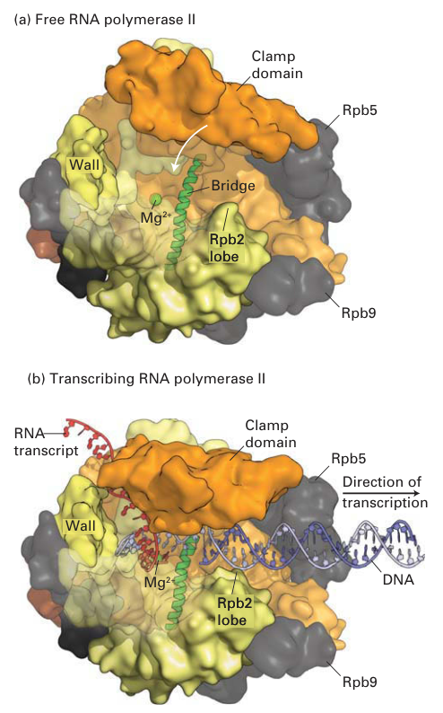
| Bridge | 桥（Bridge） |
| Clamp domain | 夹钳结构域 |
| Rpb2 lobe | Rpb2叶 |
| Wall | 壁（Wall） |
| RNA transcript | RNA转录本 |
| Direction of transcription | 转录方向 |
| (a) Free RNA polymerase II | （a）游离的RNA聚合酶II |
| (b) Transcribing RNA polymerase II | （b）正在进行转录的RNA聚合酶II |
酵母中的基因敲除实验表明，三种核RNA聚合酶的大多数亚基都是细胞存活所必需的。破坏那些对存活并非必需的少数聚合酶亚基（例如RNA聚合酶II的亚基4和7）的基因，仍会导致细胞生长极差。因此，所有亚基都是真核RNA聚合酶正常发挥功能所必需的。古菌与真细菌一样，只有一种类型的RNA聚合酶参与基因转录，但古菌的RNA聚合酶与真核核RNA聚合酶一样，拥有十几个亚基。古菌还含有后文将讨论的通用转录因子，它们与真核生物的通用转录因子相关，这与古菌和真核生物之间的进化关系比真细菌与真核生物之间更近相一致（见图1-1）。
RNA聚合酶II的最大亚基含有一个必需的羧基端重复序列
RNA聚合酶II最大亚基RPB1的羧基端含有一段由7个氨基酸组成的序列，它几乎精确地重复多次。RNA聚合酶I和III都不含这些重复单元。这种七肽重复序列的共有序列为Tyr-Ser-Pro-Thr-Ser-Pro-Ser，称为羧基端结构域（CTD）（见图9-12b，红色箭头）。酵母RNA聚合酶II含有26个或更多重复，脊椎动物的酶含有52个重复，几乎所有其他真核生物的RNA聚合酶II所含重复数目居中。CTD对存活至关重要，酵母至少需要存在10个重复拷贝才能生存。用模型启动子进行的体外实验首次表明，起始转录的RNA聚合酶II分子其CTD未被磷酸化。一旦聚合酶起始转录并开始离开启动子，CTD中许多丝氨酸残基和一些酪氨酸残基就被磷酸化。对果蝇唾液腺在幼虫蜕皮前（转录活跃时期）制备的多线染色体的分析表明，CTD在体内转录过程中同样被磷酸化。在这一发育时期诱导产生的巨大染色体「膨突」是基因组被非常活跃转录的区域。用特异识别磷酸化或非磷酸化CTD的抗体进行染色证明，与高度转录的膨突区域结合的RNA聚合酶II含有磷酸化的CTD（图9-15）。
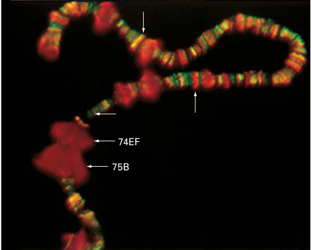
- 在多细胞生物中，基因调控的首要目的是执行精确的发育程序，使恰当的基因在胚胎发育和细胞分化过程中于恰当的细胞、恰当的时间表达。
- 与细菌一样，转录调控是真核生物调节基因表达的主要方式。
- 在真核基因组中，DNA转录控制元件可能位于其所调控的启动子数千碱基之外。不同的控制元件可以控制同一基因在不同细胞类型中的转录。
- 真核生物含有三种核RNA聚合酶。三者都含有两个大亚基和三个较小的核心亚基，它们与大肠杆菌RNA聚合酶的β′、β、α和ω亚基同源，此外还含有若干额外的小亚基（见图9-13）。
- RNA聚合酶I只合成前体rRNA。RNA聚合酶II合成mRNA、参与mRNA剪接的某些小核RNA，以及调控mRNA翻译和稳定性的微RNA与小干扰RNA（miRNA和siRNA）。RNA聚合酶III合成tRNA、5S rRNA以及其他几种小的稳定RNA（见表9-2）。
- RNA聚合酶II最大亚基中的羧基端结构域（CTD）在转录起始过程中被磷酸化，并在酶转录DNA模板的过程中保持磷酸化状态。
9.3 RNA聚合酶II启动子与通用转录因子
调控RNA聚合酶II转录起始和延伸的机制已被广泛研究，因为正是这种聚合酶转录mRNA。RNA聚合酶II的转录起始和延伸是蛋白质编码基因表达所需的初始生化过程，也是基因表达中最常受到调控、以决定特定蛋白质何时合成、在哪些细胞中合成的步骤。如上一节所述，真核蛋白质编码基因的表达由多种能与蛋白质结合的DNA序列调控，这些序列统称为转录控制区。这些序列包括决定DNA模板转录在何处开始的启动子、位于转录起始位点附近的其他类型控制元件，以及位于其所调控基因很远处、称为增强子的序列——后者控制基因在哪种细胞中转录以及转录的频率。本节我们将更仔细地考察真核蛋白质编码基因中各种转录控制元件的特性，以及用于鉴定它们的一些技术。
RNA聚合酶II在与mRNA的5′帽相对应的DNA序列处起始转录
使用纯化的RNA聚合酶II、由培养细胞核制备的蛋白提取物，以及含有若干高丰度表达基因mRNA 5′端编码序列的DNA模板进行的体外转录实验显示，所产生的转录本始终在其5′端含有一个帽结构，该结构与基因在体内正常表达时经剪接的mRNA 5′端的帽结构相同（见图5-14）。在这些实验中，5′帽是由核提取物中的酶加到新生RNA的5′端的；这些酶只能给带有5′三磷酸或二磷酸的RNA加帽。由于由较长RNA切割产生的5′端带的是5′单磷酸，因而不会被加帽。因此研究者得出结论：体外转录反应中生成的带帽核苷酸，必定就是转录起始时所用的核苷酸。序列分析显示，对于任一给定基因，体外产生的RNA转录本5′端序列与从细胞中分离的mRNA 5′端序列相同，从而证实真核mRNA的带帽核苷酸与转录起始位点一致。如今，对于新鉴定的mRNA，其转录起始位点通常只需鉴定编码该mRNA 5′带帽核苷酸的DNA序列即可确定。
TATA框、起始子和CpG岛在真核DNA中发挥启动子的功能
有几种不同类型的DNA序列可以作为RNA聚合酶II的启动子，告诉聚合酶在何处起始转录与双链DNA分子模板链互补的RNA。这些序列包括TATA框、起始子和CpG岛。
TATA框 最早被测序并通过体外转录系统研究的基因，是那些在细胞周期的特定时期或在特定分化细胞类型中非常活跃转录的病毒基因和细胞蛋白质编码基因。在所有这类高转录基因中，都在转录起始位点上游约26–31 bp处发现了一段保守序列，称为TATA框（图9-16）。诱变研究表明，该核苷酸序列中的单碱基改变就会急剧降低其相邻基因的体外转录。如果删除TATA框与正常转录起始位点之间的碱基对，那么改变后的缩短模板会从TATA框下游约25 bp处的新位点起始转录。因此，TATA框的作用与大肠杆菌启动子相似，即为RNA聚合酶II定位以便起始转录（见图5-12）。
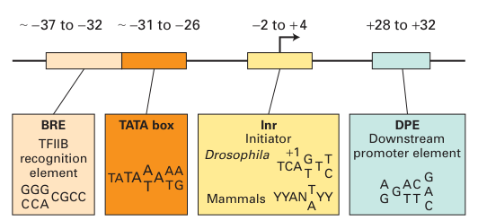
| TATA box | TATA框 |
| TFIIB recognition element (BRE) | TFIIB识别元件（BRE） |
| Inr (Initiator) | 起始子（Inr） |
| Downstream promoter element (DPE) | 下游启动子元件（DPE） |
| Transcription start site (TSS) | 转录起始位点（TSS） |
| Drosophila | 果蝇 |
| Mammals | 哺乳动物 |
起始子序列 有些真核基因不含TATA框，而是含有另一种称为起始子的启动子元件。大多数天然存在的起始子元件在−1位有一个胞嘧啶（C），在转录起始位点（+1）有一个腺嘌呤（A）残基。对含起始子启动子的哺乳动物基因进行定向诱变显示，起始位点紧邻的核苷酸序列决定这类启动子的强度。然而，与保守的TATA框序列不同，人们只定义出一个极为简并的起始子共有序列：其中A+1是转录起始处的碱基，Y是嘧啶（C或T），N是四种碱基中的任意一种，T/A表示第+3位为T或A。我们将会看到，其他启动子元件——称为BRE和DPE（见图9-16）——可以被通用转录因子结合，并影响启动子的强度。
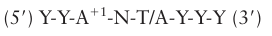
CpG岛 含TATA框或起始子元件启动子的基因，其转录从明确界定的起始位点开始。然而，哺乳动物中大多数蛋白质编码基因（约70%）的转录速率低于含TATA框和含起始子的启动子，它们起始于一段约100–1000 bp区域内若干个可替代的起始位点中的任意一个，这些区域中CG序列的出现频率异常之高。许多这类基因编码的蛋白质不需要大量存在（例如编码所有细胞都需要的基础代谢过程所用酶的基因，常称为「管家基因」）。这些启动子区域称为CpG岛（其中「p」代表C与G核苷酸之间的磷酸），因为它们在哺乳动物基因组序列中相对少见。
在哺乳动物中，大多数与非CpG岛启动子无关的、C后接G的序列，其C在嘧啶环第5位被甲基化（5-甲基C，记作CMe；见图2-17）。人们认为哺乳动物基因组中CG序列偏少，是因为5-甲基C的自发脱氨会生成胸苷。在哺乳动物进化的时间尺度上，这被认为通过DNA修复机制把大多数CG转变成了TG。因此，人类基因组中CG的频率仅为「C后随机接任意碱基」时所预期频率的21%。然而，活跃CpG岛启动子中的C未被甲基化。因此，当它们自发脱氨时会被转变为U，而DNA修复酶能识别U并将其恢复为C。结果，CpG岛启动子内CG序列的频率接近「C后随机接其他三种核苷酸之一」时所预期的频率。
CG含量高的序列比CG含量低的序列更难被组蛋白八聚体结合，因为要把它们弯成缠绕组蛋白八聚体、形成核小体所需的小直径环，需要更多的能量（见图8-24）。因此，CpG岛与DNA中无核小体的区域重合。关于控制CpG岛启动子转录的分子机制，仍有大量问题有待阐明，但目前的假说是：下一节将讨论的通用转录因子能够与之结合，正是因为CpG岛排斥核小体。
CpG岛启动子的发散转录 CpG岛的另一个显著特点是，从这些元件起始的转录是双向的，尽管只有正义链的转录才能产生mRNA。通过一种（或多种）尚未完全阐明的机制，大多数沿「错误」方向转录——即转录反义链——的RNA聚合酶II分子，会在距转录起始位点约1–3 kb处暂停或终止转录。这一现象是借助RNA-DNA杂交体结合在活性位点附近时、RNA聚合酶II夹钳结构域赋予延伸复合物的稳定性而被发现的（见图9-14b、c）。
从培养的人成纤维细胞中分离出细胞核，置于含盐和温和去垢剂的缓冲溶液中孵育，这样可去除除正在延伸的RNA聚合酶之外的所有RNA聚合酶，因为延伸中的聚合酶与模板DNA稳定结合。随后加入核苷三磷酸，其中UTP用溴代UTP替代，后者所含尿嘧啶的嘧啶环第5位上带有一个Br原子（见图2-17）。然后将细胞核在30 °C孵育足够长时间，使分离细胞核时正处于延伸过程中的RNA聚合酶II（Pol II）分子聚合约100个核苷酸。随后分离RNA，并用特异识别BrU标记RNA的抗体对含溴代U的RNA进行免疫沉淀。接着通过逆转录产物的大规模并行DNA测序（见第6章）对这些RNA 5′端的33个核苷酸进行测序，并把序列定位到人类基因组上。
图9-17显示的是每千碱基总BrU标记RNA的测序读段数相对于所有目前已知人类蛋白质编码基因的主要转录起始位点（TSS）所作的图。结果显示，对于大多数启动子（多为CpG岛启动子），沿正义方向（朝向基因，蓝色，向上绘制以表示正义方向的转录）和沿反义方向（背离基因，紫色，向下绘制以表示对互补DNA链的反义方向转录）转录的RNA聚合酶分子数目大致相等。在相对于主要转录起始位点（TSS）约+50处观察到一个正义转录本峰，表明Pol II在+50至+200区域暂停后才继续进一步延伸。在相对主要转录起始位点−250至−500处也观察到一个峰，由沿相反方向转录的Pol II产生，揭示出CpG岛启动子中核小体缺失区另一端存在暂停的RNA聚合酶II分子。请注意，与沿正义方向转录到距转录起始位点1 kb以外的聚合酶相比，沿反义方向转录到距转录起始位点1 kb以外的聚合酶其测序读段数（因而延伸中聚合酶的数目）更低。可能解释这一差异的分子机制见图10-15，那里讨论了转录终止。还要注意，还观察到少量来自主要转录起始位点上游转录的测序读段（0左侧的蓝色读段和0右侧的紫色读段），说明整个基因组中看似随机的位点存在低水平的转录。这些关于CpG岛启动子发散转录以及真核生物大部分基因组存在低水平转录的最新发现，令大多数研究者大为惊讶。
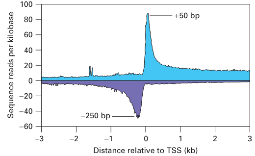
| Distance relative to TSS (kb) | 相对转录起始位点的距离（kb） |
| Sequence reads per kilobase | 每千碱基的测序读数 |
染色质免疫沉淀 图9-18a所示的染色质免疫沉淀技术，使用针对RNA聚合酶II的抗体，为哺乳动物中大多数CpG岛启动子发生发散转录提供了更多数据支持。该分析的数据以每百万条被测序序列中鉴定到该基因组区域某一特定序列的次数来表示（图9-18b）。在发生发散转录的基因（例如编码一种中间代谢酶的Hsd17b12基因）处，检测到两个免疫沉淀DNA峰，分别对应Pol II沿正义方向和反义方向转录后暂停。然而，只有在正义方向上才能检测到距起始位点1 kb以外的Pol II。该基因组区域的每百万计数非常低，因为该基因的转录频率很低。但正义和反义转录在转录起始位点区域的每百万计数都高得多，反映出Pol II分子在该启动子处以两个方向起始了转录，但在各自方向上都未转录超过距起始位点500 bp便暂停了。相比之下，Rpl6基因（编码一个大核糖体亚基蛋白，在研究使用的增殖小鼠胚胎干细胞中大量转录）几乎仅沿正义方向转录。距转录起始位点不足250 bp处的每百万计数峰，同样是聚合酶被释放进入基因内转录之前在启动子近端区域长时间暂停的结果。距转录起始位点下游1 kb以外的每百万序列计数远高于Hsd17b12基因正义方向转录的相应计数，反映出Rpl6基因的高转录速率。
通用转录因子把RNA聚合酶II定位在起始位点并协助起始
RNA聚合酶II起始转录需要若干起始因子。这些起始因子把Pol II分子定位在转录起始位点，并帮助解开DNA双链，使模板链能够进入酶的活性位点。它们被称为通用转录因子，因为对于由RNA聚合酶II转录的基因来说，即便不是全部、也是大多数启动子都需要它们。这些蛋白质被命名为TFIIA、TFIIB等，其中大多数是多聚体蛋白。最大的是TFIID，它由一个38 kDa的TATA框结合蛋白（TBP）和13个TBP相关因子（TAF）组成。具有相似活性和同源序列的通用转录因子存在于所有真核生物中。Pol II及其通用转录因子结合在启动子上、准备起始转录时形成的复合物称为前起始复合物（PIC）。图9-19总结了Pol II转录前起始复合物在含TATA框启动子上逐步组装的当前模型。
TFIID的TBP亚基是第一个结合到含TATA框启动子上的蛋白质。迄今分析过的所有真核TBP都具有非常相似的、由180个残基组成的羧基端结构域。TBP的这一结构域折叠成鞍形结构；分子的两半呈现出总体二重对称，但并不完全相同。TBP与DNA结合，使螺旋发生显著弯曲（见图5-5）。TBP的DNA结合表面在所有真核生物中都是保守的，这解释了TATA框启动子元件高度保守的原因（见图9-16）。
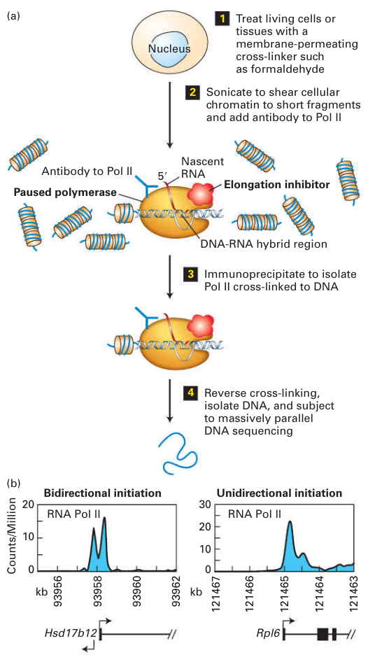
| Elongation inhibitor | 延伸抑制剂 |
| Paused polymerase | 暂停的聚合酶 |
| Antibody to Pol II | 抗Pol II抗体 |
| DNA-RNA hybrid region | DNA-RNA杂交区 |
| Nascent RNA | 新生RNA |
| Nucleus | 细胞核 |
| Bidirectional initiation | 双向起始 |
| Unidirectional initiation | 单向起始 |
| RNA Pol II | RNA聚合酶II |
| Counts/Million | 计数/百万 |
| Treat living cells or tissues with a membrane-permeating cross-linker such as formaldehyde | 用甲醛等可透膜交联剂处理活细胞或组织 |
| Sonicate to shear cellular chromatin to short fragments | 超声破碎使细胞染色质断裂成短片段 |
| Immunoprecipitate to isolate Pol II cross-linked to DNA | 免疫沉淀分离与DNA交联的Pol II |
| Reverse cross-linking, isolate DNA, and subject to massively parallel DNA sequencing | 反交联、分离DNA并进行大规模并行DNA测序 |
| Chromatin immunoprecipitation (ChIP) | 染色质免疫沉淀（ChIP） |
TFIID结合到TATA框后，TFIIA和TFIIB便可结合。TFIIA是比TBP大的异二聚体，TFIIB是单体蛋白，略小于TBP。TFIIA在TBP–TATA框复合物的上游侧与TBP和DNA结合。TFIIB的羧基端结构域与TATA框两侧的TBP和DNA都有接触。在转录起始过程中，其氨基端结构域插入RNA聚合酶II的RNA出口通道（见图9-12c）。TFIIB的氨基端结构域协助Pol II在转录起始位点解开DNA双链，并与Pol II活性位点附近的模板链相互作用。TFIIB结合之后，一个预先形成的TFIIF（在哺乳动物中由两个不同亚基组成的异二聚体）与Pol II的复合物发生结合，把聚合酶定位在起始位点上方。在DNA双链被解开、暴露出模板链之前，还必须再结合两个通用转录因子。首先结合的是TFIIE，它是由两个不同亚基组成的异二聚体。TFIIE为TFIIH创造一个停靠位点，后者是另一个含10个不同亚基的多聚体因子。TFIIH的结合完成了转录前起始复合物的组装（见图9-19）。
图9-20显示的是由纯化的RNA聚合酶II和通用转录因子（以TBP代替完整的TFIID复合物）在体外组装成的酵母（S. cerevisiae）前起始复合物的冷冻电镜图像——共33条多肽，质量为1.5兆道尔顿（MDa）——大约相当于一个核糖体亚基的大小。真核细胞表达的每一个蛋白质编码基因的启动子上，都会组装出这样精巧的前起始复合物。
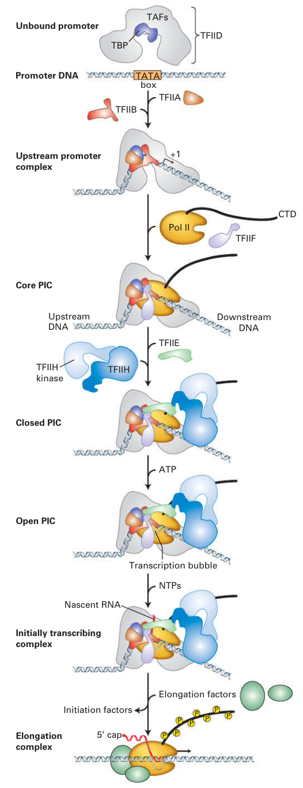
| TBP | TATA框结合蛋白（TBP） |
| TAFs | TBP相关因子（TAFs） |
| Pol II | RNA聚合酶II（Pol II） |
| CTD | 羧基端结构域（CTD） |
| General transcription factor (GTF) | 通用转录因子（GTF） |
| Preinitiation complex (PIC) | 前起始复合物（PIC） |
| Transcription bubble | 转录泡 |
| Nascent RNA | 新生RNA |
| Unbound promoter | 未结合的启动子 |
| Promoter DNA | 启动子DNA |
| Upstream promoter complex | 上游启动子复合物 |
| Upstream | 上游 |
| Downstream | 下游 |
| Core PIC | 核心前起始复合物 |
| Closed PIC | 闭合前起始复合物 |
| Open PIC | 开放前起始复合物 |
| Initially transcribing | 起始转录阶段 |
| Elongation | 延伸 |
| Elongation factors | 延伸因子 |
| Initiation factors | 起始因子 |
| TFIIH kinase | TFIIH激酶 |
| TATA box | TATA框 |
| 5′ cap | 5′帽 |
TFIIH核心亚基之一（酵母中的Ssl2；见图9-20d）的解旋酶活性利用ATP水解产生的能量，帮助在起始位点解开DNA双链，使Pol II形成开放复合物：起始位点周围的DNA双链被解开，模板链结合在聚合酶活性位点处。当聚合酶离开启动子区域向下游转录时，随着新生RNA的5′端进入RNA出口通道，TFIIB的氨基端结构域从该通道中释放出来。TFIIH的三个亚基组成一个激酶模块（图9-19中的TFIIH激酶），它在构成CTD的Tyr-Ser-Pro-Thr-Ser-Pro-Ser重复序列的丝氨酸5位（下划线标出）上对Pol II的CTD进行多次磷酸化。正如我们将在第10章进一步讨论的，多次磷酸化的CTD是那些在RNA聚合酶II所转录RNA的5′端形成帽结构（见图5-14）的酶的停靠位点。在以TBP替代完整TFIID复合物并使用纯化RNA聚合酶II的最小体外转录实验中，当聚合酶离开启动子区域向下游转录时，TBP仍结合在TATA框上，而其他通用转录因子则解离。
值得注意的是，最早从人类中克隆出的TFIIH亚基，正是因为其突变会导致受损DNA修复缺陷而被鉴定出来的，这类损伤如带有共价连接诱变剂的碱基或紫外线诱导的胸腺嘧啶–胸腺嘧啶二聚体（见图5-37）。在正常个体中，当正在转录的RNA聚合酶停滞在模板DNA受损区域时，缺少激酶结构域三个亚基（见图9-19）但包含上述解旋酶亚基的TFIIH核心复合物会识别停滞的聚合酶，随后与在修复受损DNA区域中与TFIIH协同作用的其他蛋白质结合。在带有这些TFIIH亚基突变形式的患者中，转录活跃基因中受损DNA的这种修复受到损害。结果，受影响的个体皮肤对阳光极度敏感（阳光通过产生胸腺嘧啶–胸腺嘧啶二聚体成为DNA损伤的常见原因），并且癌症发病率很高。因此，TFIIH的这些亚基在细胞中承担两种功能，一种参与转录起始过程，另一种参与DNA修复。根据TFIIH功能缺陷严重程度的不同，这些个体可能患有着色性干皮病（见第24章）和科凯恩综合征（见第5章）等疾病。■
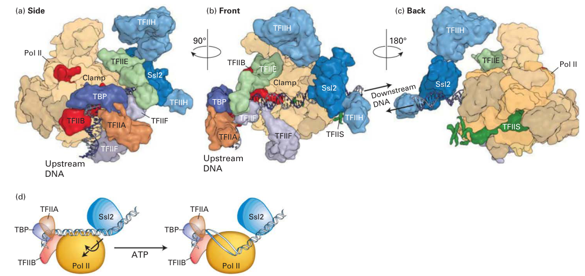
| Upstream | 上游 |
| Downstream | 下游 |
| Clamp | 夹钳（Clamp） |
| Pol II | RNA聚合酶II（Pol II） |
| TBP | TATA框结合蛋白（TBP） |
| Cleft | 裂隙 |
| Template strand | 模板链 |
| Side | 侧视图 |
| Front | 前视图 |
| Back | 后视图 |
| (d) Model of entry of the template strand into the floor of the cleft where RNA polymerization is catalyzed | （d）模板链进入催化RNA聚合的裂隙底部的模型 |
TFIID的TAF亚基参与从缺少TATA框的启动子起始转录。例如，某些TAF亚基接触存在起始子元件的启动子中的该元件；它们的功能大概解释了这类序列如何能够替代TATA框（见图9-16）。TFIID的其他TAF亚基可以结合共有序列A/G-G-A/T-C/T-G/A/C，在许多缺少TATA框启动子的基因中，该序列以转录起始位点下游约30 bp为中心。由于其位置，这一调控序列称为下游启动子元件（DPE）（见图9-16）。DPE通过增强TFIID的结合，促进含有它的无TATA框基因的转录。此外，TFIIB的一个α螺旋结合在TATA框上游DNA的大沟中，最强的启动子含有适合这一相互作用的最佳序列，称为TFIIB识别元件（BRE）（见图9-16）。
使用抗TBP抗体的染色质免疫沉淀实验（见图9-18）表明，TBP结合在CpG岛启动子中两个发散转录起始位点之间的区域。因此，从较弱的CpG岛启动子起始转录，很可能与从含TATA框的启动子起始转录需要相同的通用转录因子。图9-16所总结的启动子元件的缺失，或许可以解释在CpG岛启动子上观察到的从多个转录起始位点进行的发散转录，因为此时没有来自DNA序列的线索来为前起始复合物正确定向。TFIID和其他通用转录因子可能从CpG岛启动子中若干可替代的、近乎等价的弱结合位点中进行选择，这或许可以解释这类启动子普遍观察到的低转录起始频率，以及朝发散方向的替代转录起始位点。
延伸因子调控启动子近端区域转录的起始阶段
在后生动物中，大多数启动子上，Pol II在转录不足100个核苷酸后便暂停，这是由于一种称为NELF（负延伸因子）的五亚基蛋白的结合。NELF与一种称为DSIF的两亚基延伸因子一起结合到Pol II上（DSIF即DRB敏感性诱导因子，如此命名是因为在其存在时，一种称为DRB的ATP类似物会抑制进一步的转录延伸）。NELF结合到Pol II上所造成的延伸抑制，在DSIF、NELF以及Pol II CTD（Tyr-Ser-Pro-Thr-Ser-Pro-Ser）的丝氨酸2位被一种具两个亚基的蛋白激酶——细胞周期蛋白T–CDK9（也称P-TEFb）——磷酸化后得到解除；该激酶与Pol II-NELF-DSIF复合物结合。同样的延伸因子也调控CpG岛启动子的转录。这些在启动子近端区域调控延伸的因子，提供了一种独立于转录起始调控的基因转录控制机制。这种在起始和启动子近端区域延伸两个步骤上调控转录的总体策略，与大肠杆菌trp操纵子的调控相似（见图9-7），尽管所涉及的分子机制不同。
HIV（人类免疫缺陷病毒，即艾滋病的病原体）的转录依赖于一种称为Tat的小病毒蛋白对细胞周期蛋白T–CDK9的激活。实验感染tat−突变体的细胞产生约50个核苷酸长的短病毒转录本。相比之下，感染野生型HIV的细胞合成涵盖整个整合前病毒基因组的长病毒转录本（见图5-48和图8-13）。因此，Tat起抗终止因子的作用，使RNA聚合酶II能够通读一个转录阻断。（Tat最初是由少数未能终止的稀有转录本产生的——当HIV启动子在「活化」的T淋巴细胞中以高速率转录时会出现这种情况；见第23章。）Tat是一种序列特异性的RNA结合蛋白。它结合到称为TAR的序列的RNA拷贝上，该序列在HIV转录本5′端附近形成茎环结构（图9-21）。TAR还结合细胞周期蛋白T，使细胞周期蛋白T–CDK9复合物靠近聚合酶，从而高效地磷酸化其底物，导致转录延伸。在用CDK9特异性抑制剂处理细胞后进行染色质免疫沉淀实验表明，约30%的哺乳动物基因的转录受到细胞周期蛋白T–CDK9（P-TEFb）活性的调控；不过，这很可能最常由序列特异性DNA结合转录因子完成，而不是像HIV Tat那样由RNA结合蛋白完成。■
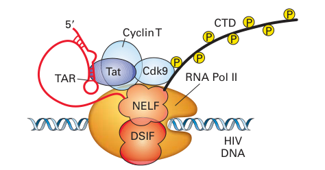
| Cyclin T | 周期蛋白T |
| RNA Pol II | RNA聚合酶II |
| CTD | 羧基端结构域（CTD） |
- RNA聚合酶II在DNA模板中与所编码mRNA中被加帽的5′核苷酸相对应的核苷酸处起始基因转录。
- 真核DNA中已鉴定出三种主要类型的启动子序列。TATA框普遍存在于高转录的基因中。起始子启动子见于某些基因，而CpG岛——脊椎动物约70%蛋白质编码基因的启动子——是低速率转录基因的特征。
- Pol II对蛋白质编码基因的转录由以下因子按所示顺序依次结合而起始：TFIID（其中含有结合TATA框DNA的TBP亚基）；TFIIA和TFIIB；Pol II与TFIIF的复合物；TFIIE；最后是TFIIH（见图9-19）。
- TFIIH一个亚基的解旋酶活性有助于在多数启动子的转录起始位点分开DNA双链，这一过程需要水解ATP。当Pol II开始离开起始位点向下游转录时，其CTD被TFIIH激酶结构域在丝氨酸5位磷酸化。
- 在后生动物中，NELF和DSIF在起始后与Pol II结合，抑制距转录起始位点不足100 bp处的延伸。当细胞周期蛋白T–CDK9（也称P-TEFb）与延伸复合物结合，且CDK9使NELF、DSIF的亚基以及Pol II CTD的丝氨酸2位磷酸化时，这种延伸抑制便被解除。
9.4 蛋白质编码基因中的调控序列及其所作用的蛋白质
如上一节所述，真核蛋白编码基因的表达受多个可与蛋白质结合的DNA序列调控，这些序列统称为转录控制区。这些区域既包括启动子以及位于转录起始位点附近的其他类型控制元件，也包括位于其所调控基因远端的序列。本节我们将更细致地考察真核蛋白编码基因中各种控制元件的性质，以及与之结合的蛋白质。
启动子近端元件有助于调控真核基因
人们利用重组DNA技术对各种真核基因的核苷酸序列进行系统性突变，以鉴定转录控制区。例如，用接头扫描突变可以精确定位调控区内发挥转录控制作用的序列。该方法构建一组带有连续重叠突变的构建体，再检测它们对报告基因表达或特定mRNA生成的影响（图9-22a）。这类分析鉴定出了I型单纯疱疹病毒（HSV-I）胸苷激酶（tk）基因的启动子近端元件。结果表明，HSV-I tk基因上游的DNA区域含有三个彼此独立的转录控制序列：一个位于−32至−16区间的TATA框，以及位于更上游的两个其他控制元件（图9-22b）。用启动子近端控制元件中带单碱基对改变的突变体所做的实验显示，这些元件一般长约6–10 bp。最近的结果表明，在人类基因中，它们在转录起始位点的上游和下游出现的频率相同。严格说来，「启动子」这一术语指决定聚合酶在何处起始转录的DNA序列，但该术语常被用来同时指启动子及其相关的启动子近端控制元件。
为检验通过接头扫描突变分析鉴定出的HSV-I tk启动子区中各控制元件的间距限制，研究者构建并检测了在这些元件之间带有小的缺失和插入的构建体。启动子与启动子近端控制元件之间的间距改变若不超过20 bp，影响很小；然而，在HSV-I tk启动子近端元件与TATA框之间插入30–50 bp，其效果等同于删除该元件。对其他真核启动子的类似分析也表明，启动子近端元件之间的间距一般具有很强的耐受性，但相隔数十个碱基对可能降低转录。
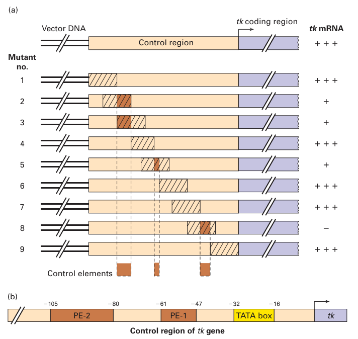
| coding region | 编码区 |
| Vector DNA | 载体DNA |
| Mutant no. | 突变体编号 |
| Promoter element (PE) | 启动子元件（PE） |
| TATA box | TATA框 |
| Control region | 控制区 |
| Control elements | 控制元件 |
远距离增强子常通过RNA聚合酶II刺激转录
如前所述，许多真核启动子的转录可被位于转录起始位点数千碱基对之外的控制元件所刺激。这类长距离转录控制元件称为增强子，在真核基因组中很常见，但在细菌基因组中相当罕见。接头扫描突变等程序表明，增强子通常长约200 bp，与启动子近端元件一样，由若干长约6–10 bp的功能性序列元件组成。如下文所述，这些调控元件每一个都是序列特异性DNA结合转录因子的结合位点。
对许多不同后生动物增强子的分析表明，它们以同等概率出现在启动子上游、启动子下游的内含子中，甚至出现在基因最后一个外显子的下游，SALL1基因就是如此（见图9-10a）。许多增强子具有细胞类型特异性。例如，控制Pax6在视网膜中表达的增强子位于外显子4与外显子5之间的内含子中（见图9-9a），而控制Pax6在胰腺激素分泌细胞中表达的增强子则位于外显子0上游约200 bp的区域内（该外显子之所以如此命名，是因为它是在被称为「外显子1」的外显子之后才被发现的）。
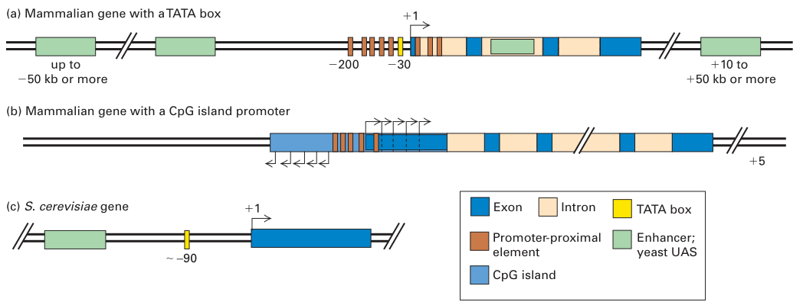
| (a) Mammalian gene with a TATA box | （a）含TATA框的哺乳动物基因 |
| (b) Mammalian gene with a CpG island promoter | （b）含CpG岛启动子的哺乳动物基因 |
| (c) S. cerevisiae gene | （c）酿酒酵母基因 |
| S. cerevisiae | 酿酒酵母 |
| Exon | 外显子 |
| Intron | 内含子 |
| Enhancer | 增强子 |
| UAS (upstream activating sequence) | 上游激活序列（UAS） |
| TATA box | TATA框 |
| Promoter-proximal element | 启动子近端元件 |
| CpG island | CpG岛 |
大多数真核基因受多个转录控制元件调控
起初，增强子与启动子近端元件被认为是两类不同的转录控制元件。然而，随着越来越多增强子和启动子近端元件被分析，二者之间的区别变得不那么清晰。例如，这两类元件通常即使在倒转后仍能刺激转录，而且二者往往都具有细胞类型特异性。目前普遍认为，RNA聚合酶II的转录由一系列连续变化的控制元件所调控。一端是增强子，它们能刺激数万碱基对之外的启动子进行转录；另一端是启动子近端元件，例如控制HSV-I tk基因的上游元件，一旦被移到离启动子更远30–50 bp处便失去其影响。研究者已鉴定出大量能在这两个极端之间的距离上刺激转录的转录控制元件。
图9-23a总结了一个假想的哺乳动物基因的转录控制序列的位置，该基因的启动子含有一个TATA框。转录起始位点编码第一个外显子的第一个（5′）核苷酸，也就是mRNA中被加帽的那个核苷酸。除位于约−31至−26处的TATA框外，相对较短的启动子近端元件（约6–10 bp）位于起始位点上游或下游最初的200 bp之内。相比之下，增强子通常长约50–200 bp，由多个约6–10 bp的元件组成。增强子可位于起始位点上游或下游最远50 kb或更远处，也可位于内含子内。与Pax6基因一样，许多哺乳动物基因受多个增强子区调控，这些增强子区在不同类型的细胞中发挥作用。
图9-23b总结了一个以CpG岛为启动子的哺乳动物基因的启动子区。约70%的哺乳动物基因由CpG岛启动子表达，其表达水平通常远低于含TATA框启动子的基因。这类基因使用多个可变的转录起始位点，从而产生第一个外显子5′端各异的mRNA，这些5′端分别来自各个起始位点。转录以两个方向发生，但沿正义方向转录的RNA聚合酶II分子可延伸至1 kb或更长，其效率远高于反义方向的转录本。
在重要的模式生物酿酒酵母（Saccharomyces cerevisiae，芽殖酵母）中，基因排列紧密（见图8-4b），且很少有基因含内含子。在这种生物中，增强子被称为上游激活序列（UAS），通常位于其所调控基因启动子上游200 bp之内。大多数酵母基因只含一个UAS。此外，酿酒酵母的基因含有一个位于转录起始位点上游约90 bp处的TATA框（图9-23c）。
DNase I足迹法与EMSA可检测蛋白质-DNA相互作用
真核DNA中各种转录控制元件是称为转录因子的调控蛋白的结合位点。最简单的真核细胞编码数百种转录因子，而人类基因组编码至少1400种。基因组中每个基因的转录，都由结合于其转录控制区的特定转录因子组合独立调控。如此多转录因子可能形成的组合数目是天文数字，足以为基因组中编码的每一个基因提供独特的调控。
在酵母、果蝇以及其他易于进行遗传操作的真核生物中，大量编码转录激活蛋白和阻遏蛋白的基因已通过第6章所述那样的经典遗传学分析被鉴定出来。然而，在哺乳动物及其他较难进行此类遗传分析的脊椎动物中，大多数转录因子最初是通过生物化学技术检测到并随后纯化的。在这种方法中，用上述各种突变分析鉴定出的DNA调控元件来鉴定其同源蛋白——即那些能特异性结合于该元件的蛋白质。检测此类同源蛋白的两种常用技术是DNase I足迹法和电泳迁移率变动分析。
DNase I足迹法利用的是这样一个事实：当蛋白质结合到DNA的某一区域时，它会保护该DNA序列免遭核酸酶消化。如图9-24a所示，在一条链的一端带有放射性原子标记的DNA片段样品，在存在或不存在DNA结合蛋白的条件下于严格控制的条件下进行消化，随后变性并电泳，所得凝胶再进行放射自显影。在被结合蛋白保护的区域，会在无蛋白质时消化所产生的条带阵列中呈现为一个缺口，即「足迹」。当用含有已知转录控制元件的DNA片段进行足迹分析时，出现足迹表明被检测的蛋白质样品中存在能结合该控制元件的转录因子。足迹法还能确定该转录因子所结合的具体DNA序列。
例如，对强效腺病毒晚期启动子所做的DNase I足迹分析显示，在DNase I消化前向标记DNA中加入TBP时，TATA框上方出现一个被保护的区域（图9-24b）。DNase I消化双链DNA中各个磷酸二酯键的速率并不相同。因此，在不加蛋白质时（第1、6、9泳道），会观察到一种特定的条带图谱，它取决于DNA序列，源于某些磷酸二酯键被切割而另一些未被切割。然而，当在DNase I消化前将递增量的TBP与末端标记的DNA共孵育时，TBP会结合到TATA框上；当加入的TBP足以结合所有标记DNA分子时，它便保护约−35至−20之间的区域免遭消化（第2–5泳道）。相比之下，递增量的TFIID（第7、8泳道）不仅保护TATA框区域，还保护−7附近、+1至+5、+10至+15以及+20附近的区域免遭消化，产生的「足迹」与TBP不同。这类结果表明，TFIID的其他亚基（TBP相关因子，即TAF）也结合在TATA框下游的DNA区域上。
电泳迁移率变动分析（EMSA）又称凝胶迁移或条带迁移分析，在DNA结合蛋白的定量分析方面比足迹分析法更有用。一般而言，DNA片段与蛋白质形成复合物后，其电泳迁移率会降低，从而使片段条带的位置发生迁移。EMSA可用于检测与含有已知控制元件的放射性标记DNA片段（探针）共孵育的蛋白质组分中的转录因子（图9-25）。结合反应中加入的转录因子越多，就有越多的标记探针迁移到DNA-蛋白质复合物的位置。
在转录因子的生物化学分离中，通常将细胞核提取物依次进行若干种液相层析（见第3章）。从柱上洗脱的各组分用含已知调控元件的DNA片段，通过DNase I足迹法或EMSA进行检测（见图9-22）。在这些检测中能与调控元件结合的蛋白质所在的组分，就含有一种候选转录因子。纯化转录因子的最后一步常用一种强有力的技术——序列特异性DNA亲和层析，这是亲和层析的一种特殊类型，其中含多个转录因子结合位点拷贝的长DNA链被偶联到柱基质上。
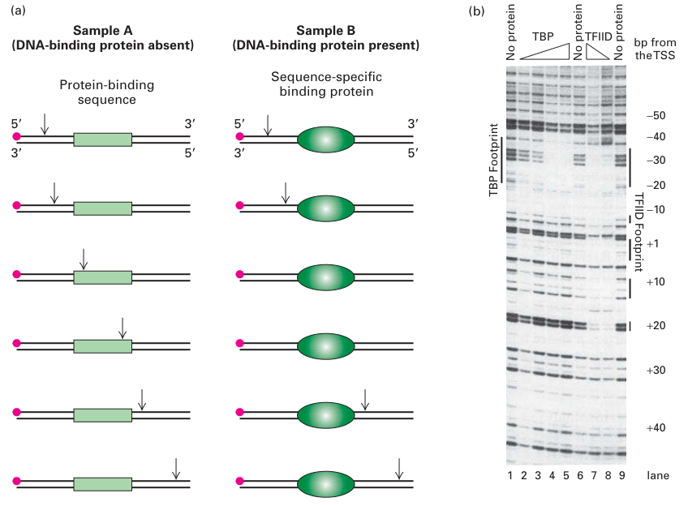
| Sample A | 样品A |
| Sample B | 样品B |
| (DNA-binding protein absent) | （无DNA结合蛋白） |
| (DNA-binding protein present) | （有DNA结合蛋白） |
| Protein-binding sequence | 蛋白质结合序列 |
| Sequence-specific binding protein | 序列特异性结合蛋白 |
| (a) No protein | （a）无蛋白质 |
| TBP footprint | TBP足迹 |
| TFIID footprint | TFIID足迹 |
| TBP | TATA框结合蛋白（TBP） |
| lane | 泳道 |
| DNase I footprinting | DNase I足迹法 |
一旦转录因子被分离并纯化，即可测定其部分氨基酸序列，并据此克隆编码它的基因或cDNA，如第6章所概述。随后可用分离到的基因，在体内转染分析中检测所编码蛋白质激活或阻遏转录的能力（图9-26）。
激活蛋白由不同的功能结构域组成
对一种名为Gal4的酵母转录激活蛋白的研究，为认识转录因子的结构域结构提供了早期洞见。编码Gal4的基因可促进代谢半乳糖所需酶的表达，它是通过对gal4突变体进行互补分析鉴定出来的；这些突变体在以半乳糖为唯一碳源和能源的琼脂培养基上不能形成菌落（见第6章）。
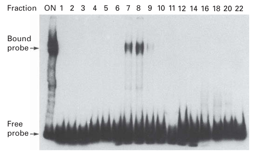
| Fraction | 组分 |
| Bound probe | 结合的探针 |
| Free probe | 游离探针 |
| Electrophoretic mobility shift assay (EMSA) | 电泳迁移率变动分析（EMSA） |
与前文所述类似的定向突变研究鉴定出了受Gal4激活的基因的UAS。发现这些UAS每一个都含有一个或多个拷贝的17 bp序列，称为UASGAL。用由酵母GAL4基因在大肠杆菌中产生的重组Gal4蛋白所做的DNase I足迹分析显示，Gal4结合于UASGAL序列。当把一个UASGAL拷贝克隆到TATA框上游、其后接β-半乳糖苷酶报告基因，并将该构建体导入酵母细胞后，野生型细胞在半乳糖培养基中β-半乳糖苷酶的表达被激活，而gal4突变体中则不被激活。这些结果表明，UASGAL是一个在半乳糖培养基中由Gal4转录因子激活的转录控制元件。
一组关于gal4缺失突变体的出色实验证明，Gal4转录因子由可分离的功能结构域组成：N端DNA结合结构域，负责结合特定的DNA序列；以及C端激活结构域，负责与其他蛋白质相互作用，以刺激附近启动子进行转录（图9-27）。当把Gal4的N端DNA结合结构域直接与它自身C端区域的不同片段融合、并删除内部序列后，所得截短蛋白在类似图9-26所示的体内分析中仍保留刺激报告基因表达的能力。因此，该蛋白的内部区段并非Gal4作为转录因子发挥功能所必需。用另一种酵母激活蛋白Gcn4（它调控合成多种氨基酸所需的基因）所做的类似实验表明，它在C端含有一个约50个氨基酸的DNA结合结构域，在其序列中部附近含有一个约20个氨基酸的激活结构域。
有关Gal4和Gcn4中存在不同激活结构域的进一步证据，来自将它们各自的激活结构域与一种完全无关的大肠杆菌DNA结合蛋白的DNA结合结构域相融合的实验。当这些融合蛋白在体内被检测时，它们激活了含该大肠杆菌蛋白同源位点的报告基因的转录。因此，功能性转录因子可以由原核与真核元件以全新的组合方式构建而成。
如今已对许多真核转录因子开展了此类研究。从这些研究中得出的真核激活蛋白结构模型是模块式的：一个或多个激活结构域通过内在无序的柔性蛋白结构域与序列特异性DNA结合结构域相连（图9-28）。在某些情况下，DNA结合结构域中所包含的氨基酸也对转录激活有贡献。正如后文所述，激活结构域被认为是通过结合其他参与转录的蛋白质来发挥功能。连接DNA结合结构域与激活结构域的是柔性、内在无序的蛋白结构域（见图3-8），这或许可以解释为什么真核控制区中对控制元件之间间距的改变如此耐受。因此，即使结合在DNA上的转录因子彼此之间的位置发生移动，它们的激活结构域仍可能相互作用，因为这些结构域是通过柔性蛋白区连接到各自的DNA结合结构域上的。
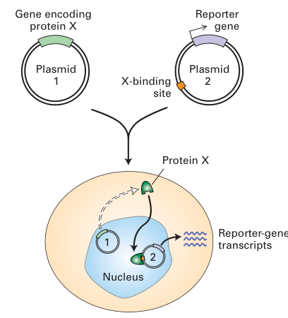
| Reporter gene | 报告基因 |
| Reporter-gene transcripts | 报告基因转录本 |
| Protein X | 蛋白质X |
| Gene encoding protein X | 编码蛋白质X的基因 |
| X-binding site | X结合位点 |
| Nucleus | 细胞核 |
| Plasmid | 质粒 |
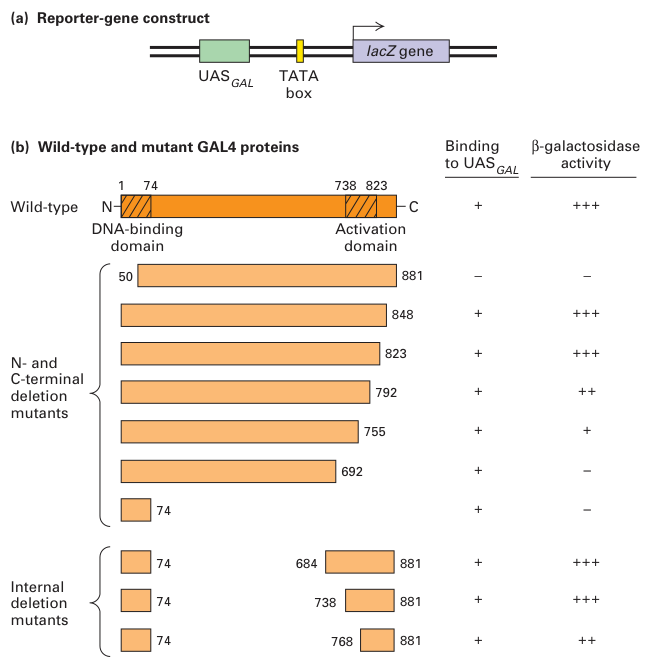
| (a) Reporter-gene construct | （a）报告基因构建体 |
| (b) Wild-type and mutant GAL4 proteins | （b）野生型与突变型GAL4蛋白 |
| Wild-type | 野生型 |
| N- and C-terminal deletion mutants | N端与C端缺失突变体 |
| Internal deletion mutants | 内部缺失突变体 |
| Binding to UAS | 与UAS的结合 |
| β-galactosidase activity | β-半乳糖苷酶活性 |
| UAS | 上游激活序列（UAS） |
| TATA box | TATA框 |
| lacZ gene | lacZ基因 |
| DNA-binding domain | DNA结合结构域 |
| Activation domain | 激活结构域 |
| bottom | 底部 |
阻遏蛋白在功能上与激活蛋白相反
真核转录既受激活蛋白调控，也受阻遏蛋白调控。例如，遗传学家已鉴定出酵母中的一些突变，这些突变导致某些基因持续高水平表达。这种不受调控的异常高表达称为组成型表达，它源于一个正常情况下抑制这些基因转录的阻遏蛋白被失活。类似地，人们已分离到果蝇D. melanogaster和线虫C. elegans的突变体，它们因在胚胎细胞中表达了正常情况下被阻遏的基因而出现胚胎发育缺陷。这些突变使阻遏蛋白失活，导致发育异常。
DNA中的阻遏蛋白结合位点已通过类似于图9-22所示的系统性接头扫描突变分析鉴定出来。在这类分析中，激活蛋白结合位点的突变导致所连接报告基因的表达下降，而阻遏蛋白结合位点的突变则导致报告基因的表达升高。
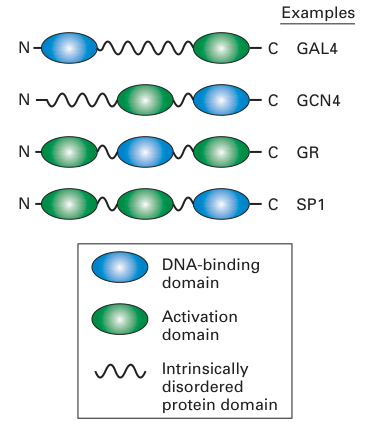
| DNA-binding domain | DNA结合结构域 |
| Activation domain | 激活结构域 |
| Intrinsically disordered protein domain | 内在无序蛋白质结构域 |
| Examples | 示例 |
| GR | 糖皮质激素受体（GR） |
结合这类位点的阻遏蛋白，可以用前文所述用于激活蛋白的同样的生物化学技术来纯化和检测。
真核转录阻遏蛋白在功能上与激活蛋白相反。当把它们的同源结合位点置于某个基因转录起始位点数十个碱基对至数千碱基对的范围内时，它们便能抑制该基因的转录，尽管它们通常并不调控这个基因。与激活蛋白一样，大多数真核阻遏蛋白是模块式蛋白，具有两个功能结构域：一个DNA结合结构域和一个阻遏结构域。与激活结构域一样，阻遏结构域在与其他类型的DNA结合结构域融合后仍能发挥功能。如果在启动子数百碱基对范围内插入这第二种DNA结合结构域的结合位点，融合蛋白的表达就会抑制该启动子的转录。同样与激活结构域一样，阻遏结构域通过与其他蛋白质相互作用来发挥功能，本章后文将对此进行讨论。
DNA结合结构域可分为众多结构类型
真核转录因子的DNA结合结构域含有多种能结合特定DNA序列的结构基序。DNA结合蛋白之所以能结合特定DNA序列，通常源于DNA结合结构域中一根α螺旋上的原子与DNA大沟内碱基边缘原子之间的非共价相互作用。带正电的精氨酸和赖氨酸残基与糖-磷酸骨架上带负电的磷酸基团之间的离子相互作用，以及某些情况下与DNA小沟内原子的相互作用，也对结合有贡献。
特异性蛋白质-DNA相互作用的原理最初是在研究细菌阻遏蛋白时发现的。许多细菌阻遏蛋白是二聚体蛋白，其中每个单体伸出的一根α螺旋插入DNA双螺旋的大沟，并与那里的原子形成多个特异性相互作用（图9-29）。这根α螺旋被称为识别螺旋或读序螺旋，因为与DNA中碱基接触的大部分氨基酸侧链都是从这根螺旋上伸出的。识别螺旋从细菌阻遏蛋白表面突出，其在该蛋白结构中的支撑通常部分来自与紧邻其N端的第二根α螺旋之间的疏水相互作用。这一完整的结构元件存在于许多细菌阻遏蛋白中，称为螺旋-转角-螺旋基序。
真核转录因子中还发现了许多其他能把一根α螺旋呈递给DNA大沟的结构基序，转录因子常根据其所含DNA结合结构域的类型来分类。由于这些基序大多具有特征性的共有氨基酸序列，因此可以在各种组织的cDNA序列中识别出潜在的转录因子；这些cDNA序列来自已在人类和其他物种中获得表征的组织。这里我们介绍几类常见的、三维结构已被测定的DNA结合蛋白。在所有这些例子以及许多其他转录因子中，至少有一根α螺旋插入DNA的大沟中。然而，有些转录因子含有能与DNA相互作用的其他结构基序（例如β链和环；见下文图9-33中的NFAT一例）。
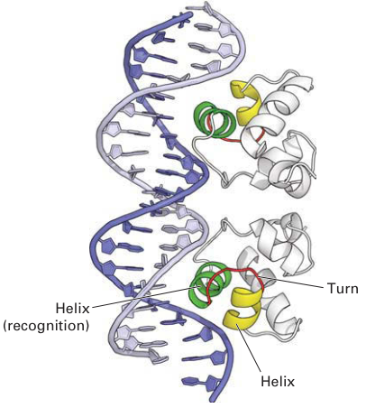
| Helix-turn-helix (recognition) | 螺旋-转角-螺旋（识别） |
同源域蛋白 许多在发育过程中发挥作用的真核转录因子含有一个保守的60个残基的DNA结合基序，称为同源域，它与细菌阻遏蛋白的螺旋-转角-螺旋基序相似。这类转录因子最早是在果蝇突变体中鉴定出来的，这些突变体在发育过程中一个身体部位转变为另一个身体部位（见图9-2b）。保守的同源域序列也存在于脊椎动物转录因子中，包括那些在人类发育中具有类似主控功能的转录因子。
锌指蛋白 许多不同的真核蛋白质含有围绕中心Zn2+离子折叠的区域，能用相对较短的一段多肽链形成一个紧密的结构域。这种结构基序称为锌指，最初是在DNA结合结构域中被发现的，但现在已知它也存在于不结合DNA的其他蛋白质中。这里我们介绍在真核转录因子中已鉴定出的若干类锌指基序当中的两类。
C2H2锌指是人类基因组和其他哺乳动物基因组中编码的最常见DNA结合基序。它在多细胞植物中也很常见，但不像在动物中那样是植物中占主导地位的DNA结合结构域类型。该基序有一段23–26个残基的共有序列，其中含有两个保守的半胱氨酸（C）和两个保守的组氨酸（H）残基，其侧链结合一个Zn2+离子（见图3-10c）。"锌指"这一名称的由来，是因为该结构的二维示意图形似手指。当三维结构被解出后才清楚，两个半胱氨酸和两个组氨酸残基对Zn2+离子的结合，使这段相对较短的多肽序列折叠成一个紧密的结构域，后者能将其α螺旋插入DNA的大沟中。许多转录因子含有多个C2H2锌指；当蛋白质环绕DNA双螺旋时，这些锌指与DNA大沟中相邻的各组碱基对依次相互作用（图9-30a）。
第二类锌指结构称为C4锌指（因其有四个保守的半胱氨酸与Zn2+接触），存在于约50种人类转录因子中。这一类的最初成员是作为类固醇激素的特异性胞内高亲和力结合蛋白（即"受体"）而被鉴定的，因而得名类固醇受体超家族。由于随后又发现了非类固醇激素的类似胞内受体，这些转录因子现在通常称为核受体。C4锌指的特征是在55–56个残基的结构域两端各有一组四个关键半胱氨酸。虽然C4锌指最初是比照C2H2锌指命名的，但后来发现含有这些DNA结合基序的蛋白质，其三维结构与后者截然不同。两者之间一个特别重要的差异是：C2H2锌指蛋白一般含有三个或更多重复的指单元，并以单体形式结合DNA；而C4锌指蛋白一般只含两个指单元，且通常以同二聚体或异二聚体形式结合DNA。C4锌指DNA结合结构域的同二聚体具有二重旋转对称性（图9-30b）。因此，同二聚体核受体结合的是反向重复的共有DNA序列。
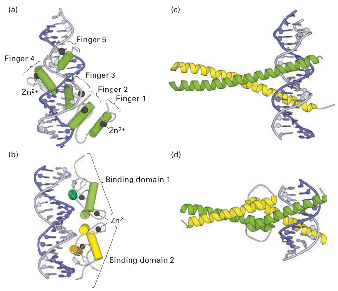
| Zinc finger | 锌指 |
| Finger 1 | 锌指1 |
| Finger 2 | 锌指2 |
| Finger 3 | 锌指3 |
| Finger 4 | 锌指4 |
| Finger 5 | 锌指5 |
| Binding domain 1 | 结合结构域1 |
| Binding domain 2 | 结合结构域2 |
亮氨酸拉链蛋白 一大类转录因子的DNA结合结构域中存在另一种结构基序，其序列中每隔七个位置就有一个疏水性氨基酸——亮氨酸。这类蛋白质以二聚体形式结合DNA，对亮氨酸的突变分析表明它们是二聚化所必需的。因此，人们创造了"亮氨酸拉链"这一名称，来表示这种由两条α螺旋构成的卷曲螺旋结构基序。
前面提到的酵母Gcn4转录因子，其DNA结合结构域就是一个亮氨酸拉链结构域。对DNA与Gcn4 DNA结合结构域复合物的X射线晶体学分析表明，该二聚体蛋白含有两条伸展的α螺旋，它们像一把剪刀那样"夹住"DNA分子，结合于大沟中相隔约半圈双螺旋的两个相邻位点（图9-30c）。与DNA接触的那部分α螺旋含有带正电（碱性）的残基，它们与DNA骨架上的磷酸基团相互作用；此外还有一些残基与大沟中的特定碱基相互作用。
Gcn4通过α螺旋C端区域之间的疏水相互作用形成二聚体，构成卷曲螺旋结构。这种结构常见于含有两亲性α螺旋的蛋白质中：在这类α螺旋中，疏水性氨基酸残基在序列上按每隔三个或四个位置交替规则排列，沿α螺旋的一侧形成一条疏水条纹。这些疏水条纹构成了卷曲螺旋二聚体中两条α螺旋单体之间的相互作用面（见图3-10a）。
虽然最初被分析的亮氨酸拉链转录因子在二聚化区每隔七个位置含有一个亮氨酸残基，但后来鉴定出另一些DNA结合蛋白，这些位置上是其他疏水性氨基酸。与亮氨酸拉链蛋白一样，它们形成的二聚体含有一个C端卷曲螺旋二聚化区和一个N端DNA结合结构域。"碱性拉链"（bZIP）这一术语现在常用来指称所有具有这些共同结构特征的蛋白质。许多碱性拉链转录因子是两条不同多肽链的异二聚体，每条链含有一个碱性拉链结构域。
碱性螺旋-环-螺旋（bHLH）蛋白 另一类二聚体转录因子的DNA结合结构域含有一种与碱性拉链基序非常相似的结构基序，区别在于每条单体中有一段非螺旋的多肽环将两个α螺旋区分开（图9-30d）。这种基序称为碱性螺旋-环-螺旋（bHLH），是根据这类蛋白质的氨基酸序列预测出来的：它们含有一个N端α螺旋（其中的碱性残基与DNA相互作用）、一个中间的环区，以及一个C端区域（其中疏水性氨基酸的间隔具有两亲性α螺旋的特征），该C端区域二聚化形成卷曲螺旋。与碱性拉链蛋白一样，不同的bHLH蛋白之间也能形成异二聚体。
结构多样的激活结构域与阻遏结构域调控转录
用由Gal4的DNA结合结构域与大肠杆菌蛋白质的随机片段组成的融合蛋白所做的实验表明，多种多样的氨基酸序列（约占大肠杆菌全部序列的1%）都能充当激活结构域，尽管它们本来是进化出来执行其他功能的。许多转录因子所含的激活结构域，以某种特定氨基酸的比例异常高为标志。例如，Gal4、Gcn4以及大多数其他酵母转录因子的激活结构域富含酸性氨基酸（天冬氨酸和谷氨酸）。这些所谓的酸性激活结构域一般都能在几乎所有类型的真核细胞——真菌、动物和植物细胞——中刺激转录。来自某些果蝇和哺乳动物转录因子的激活结构域富含谷氨酰胺，有些富含脯氨酸；还有一些富含关系密切的丝氨酸和苏氨酸，这两者都带有羟基。不过，有些强激活结构域并不特别富含任何一种特定氨基酸。
生物物理学研究表明，酸性激活结构域具有无结构的、无规卷曲的、内在无序的构象。这类结构域在结合到某个蛋白质辅激活因子上时才刺激转录。与辅激活因子的相互作用，使激活结构域在激活结构域–辅激活因子复合物中采取结构更明确的α螺旋构象。研究得较为透彻的一个含酸性激活结构域的转录因子例子，是哺乳动物的CREB蛋白，它在cAMP水平升高时被磷酸化。这种受调控的磷酸化是CREB结合其辅激活因子CBP（CREB结合蛋白）所必需的，由此导致那些控制区含有CREB结合位点的基因发生转录（见图15-30）。当CREB被磷酸化的无规卷曲激活结构域与CBP相互作用时，它会发生构象改变，形成两个α螺旋，这两个α螺旋由一段短环相连，环绕在CBP的相互作用结构域周围（图9-31a）。
有些激活结构域比酸性激活结构域更大、结构也更复杂。例如，核受体的配体结合结构域在结合其特定的激素配体后就充当激活结构域（图9-31b、c）。配体的结合会诱导核受体发生巨大的构象改变，使结合了激素的配体结合结构域得以与辅激活因子中的一段短α螺旋相互作用；由此形成的复合物随后能激活那些控制区可结合该核受体的基因的转录。
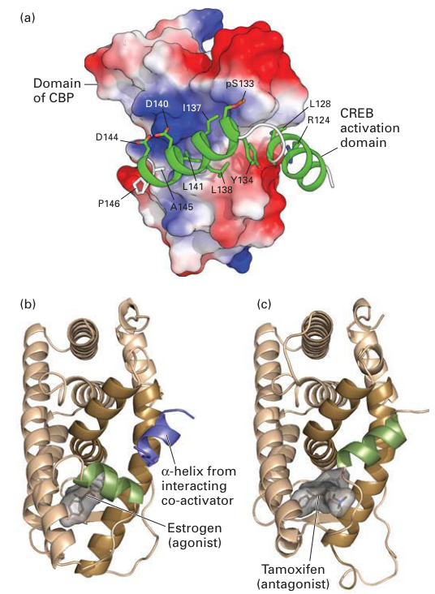
| Estrogen (agonist) | 雌激素（激动剂） |
| Tamoxifen (antagonist) | 他莫昔芬（拮抗剂） |
| co-activator | 辅激活因子 |
| α-helix from interacting co-activator | 相互作用辅激活因子的α螺旋 |
| activation domain | 激活结构域 |
| CREB activation domain | CREB激活结构域 |
| Domain of CBP | CBP的结构域 |
因此，CREB中的酸性激活结构域与核受体中的配体结合激活结构域代表了两种结构极端。CREB的酸性激活结构域是一个内在无序的无规卷曲，当它与辅激活因子中某个球状结构域的表面结合时，会折叠成两个α螺旋。相反，核受体的配体结合激活结构域是一个有结构的球状结构域，它与辅激活因子中的一段短α螺旋相互作用，而后者在被结合之前很可能是一个无规卷曲。不过，在两种情况下，辅激活因子与激活结构域之间特异的蛋白质-蛋白质相互作用，都使转录因子得以刺激基因表达。
目前，人们对阻遏结构域的结构了解较少。某些核受体的球状配体结合结构域，在缺少其特定激素配体时充当阻遏结构域。与激活结构域一样，阻遏结构域也可能相对较短，由15个或更少的氨基酸组成。生化和遗传学研究表明，阻遏结构域也介导蛋白质-蛋白质相互作用，并结合辅阻遏蛋白，形成一种复合物，通过本章后面将讨论的机制抑制转录起始。
转录因子间的相互作用增加了基因调控的选择余地
前面讨论的两类DNA结合蛋白——bZIP蛋白和bHLH蛋白——常常以单体组成的各种异二聚体组合形式存在。这里未讨论的其他类转录因子也形成异二聚体蛋白。在某些异二聚体转录因子中，每条单体识别相同的序列。在这种情况下，形成不同的异二聚体并不会增加单体所能作用的位点数目，而是使与每条单体相连的激活结构域得以按不同组合凑在一起，去结合同一个位点（图9-32a）。我们将在后面以及随后各章中看到，单个转录因子的活性可以受多种机制调控。因此，基因转录控制区中单个结合bZIP或bHLH的DNA调控元件，可能根据细胞中表达的是哪些bZIP或bHLH单体、以及它们的活性如何被调控，而引发不同的转录反应。
不过，在另一些异二聚体转录因子中，每条单体具有不同的DNA结合特异性。由此产生的组合可能性增加了某个转录因子家族所能结合的潜在DNA序列数目。理论上，三种不同的转录因子单体可以组合成六种不同的同二聚体和异二聚体转录因子，如图9-32b所示。四种不同的单体总共可以形成十种二聚体因子；五种单体则形成十六种二聚体因子；依此类推。此外，已知有一些抑制性因子能结合某些bZIP和bHLH单体，从而阻断它们与DNA的结合。当这些抑制性因子被表达时，它们会阻遏与其相互作用的那些因子所介导的转录激活（图9-32c）。因此，支配一个异二聚体转录因子家族各成员相互作用的规则十分复杂。这种组合上的复杂性，既扩大了这些因子能够据以激活转录的DNA位点数目，也增加了它们被调控的方式。
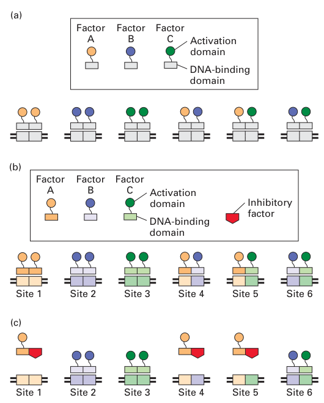
| Activation domain | 激活结构域 |
| DNA-binding domain | DNA结合结构域 |
| Factor A | 因子A |
| Factor B | 因子B |
| Factor C | 因子C |
| Site 1 | 位点1 |
| Site 2 | 位点2 |
| Site 3 | 位点3 |
| Site 4 | 位点4 |
| Site 5 | 位点5 |
| Site 6 | 位点6 |
| Inhibitory factor | 抑制因子 |
类似的组合式转录调控，也通过结构上不相关的转录因子结合到DNA中彼此相邻的位点上并发生相互作用来实现。一个例子是两种转录因子NFAT与AP1的相互作用：它们结合于调控白细胞介素2（IL-2）编码基因的一个复合启动子近端元件中的相邻位点。IL-2基因的表达对免疫应答至关重要，但IL-2的异常表达可导致类风湿性关节炎等自身免疫病（见第23章）。在缺少另一方时，NFAT和AP1都不能结合IL-2控制区中各自的位点。这些因子对这些特定DNA序列的亲和力太低，单个因子无法与DNA形成稳定复合物。然而，当NFAT和AP1同时存在时，它们之间的蛋白质-蛋白质相互作用会稳定由NFAT、AP1和DNA组成的三元复合物（图9-33a）。各种转录因子的这种协同DNA结合，造成了转录调控上相当大的组合复杂性。因此，人类基因组编码的约1400种转录因子，可以通过数量多得多的协同相互作用与DNA结合，从而对大约21,000个人类基因中的每一个实现独特的转录调控。就IL-2而言，只有当NFAT被激活（从而导致其从细胞质转运到细胞核）、并且AP1的两个亚基被合成时，才会发生转录。这两个事件由不同的信号转导途径控制（见第15、16章），从而得以对IL-2的表达进行严格调控。
NFAT与AP1的协同结合，只有当它们那些弱结合位点在DNA中彼此靠得很近时才会发生。为了有效结合，这些位点必须彼此相距精确的距离。对于另一些转录因子和转录控制区，协同结合的要求就没有这么严格。例如，EGR-1控制区含有一个复合结合位点，SRF和SAP1两种转录因子协同地结合于其上（图9-33b）。由于SAP1有一个长的柔性结构域与SRF相互作用，所以当它们在DNA中各自的位点相隔任意距离（最远约30 bp）、或者彼此方向相反时，这两种蛋白质都能协同结合。
多蛋白复合物在增强子上组装
如前所述，增强子的长度一般在约50至200 bp之间，并含有若干个转录因子的结合位点。调控β-干扰素表达的那个约50 bp的增强子，为人们了解多个转录因子的DNA结合结构域如何结合到构成增强子的若干转录因子结合位点上提供了很好的例子（图9-34）；β-干扰素是脊椎动物抵御病毒感染的一种重要蛋白质。人们创造了"增强体"这一术语，来描述这类由转录因子结合到增强子中多个位点时组装而成的大型DNA-蛋白质复合物。
由于转录因子中连接DNA结合结构域与激活结构域或阻遏结构域的区域具有柔性（见图9-28），又由于结合在相距遥远位点上的蛋白质之间能够相互作用，从而在它们的结合位点之间的DNA上形成环（见图9-5），所以转录控制区内各调控元件之间的间距允许有相当大的余地。对特定转录因子结合位点之间、以及通用转录因子和RNA聚合酶II的启动子结合位点之间可变间距的这种容许度，可能促成了真核生物基因调控的快速进化。在进化过程中，DNA序列的转座和重复序列之间的重组，很可能造出了控制元件的新组合，这些组合经受自然选择，如果证明有益就被保留下来。调控元件之间间距上的这种自由度，可能使多得多的功能组合得以接受这种进化实验；而如果像细菌中大多数基因那样，对调控元件之间的间距有严格限制，情况就不会如此。
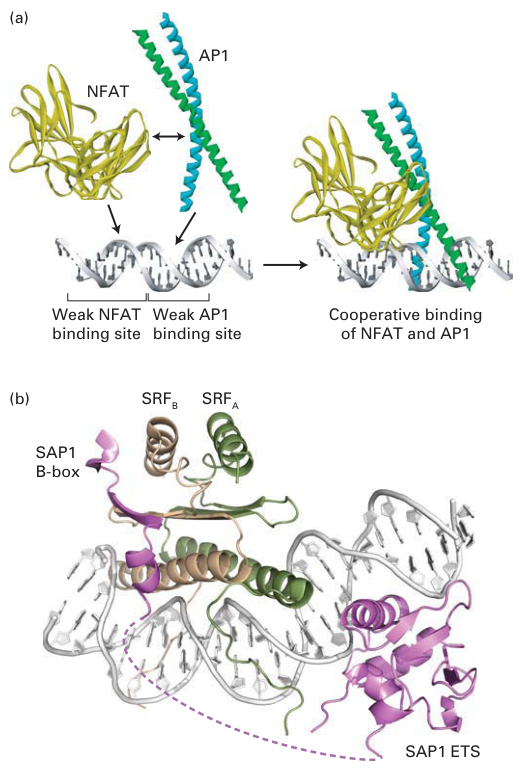
| Weak NFAT binding site | 弱NFAT结合位点 |
| Weak AP1 binding site | 弱AP1结合位点 |
| Cooperative binding of NFAT and AP1 | NFAT与AP1的协同结合 |
| B-box | B框 |
| Enhanceosome | 增强体 |
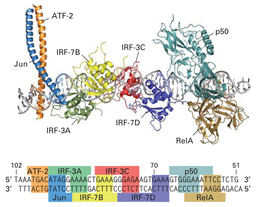
| Enhanceosome | 增强体 |
- 真核蛋白编码基因的表达，通常通过多个蛋白质结合的转录控制区来调控，这些区域位于转录起始位点附近或远离起始位点处（见图9-23）。
- 启动子引导RNA聚合酶II结合到DNA上，决定转录起始的位点，并影响转录起始的频率。
- 启动子近端元件位于起始位点约200 bp以内。若干这类各含6–10 bp的元件可能共同参与调控某一特定基因。
- 增强子含有多个短控制元件，可位于启动子上游或下游200 bp至数十kb处、内含子内部，或基因最后一个外显子的下游。
- 启动子近端元件和增强子常具有细胞类型特异性，只在特定的分化细胞类型中发挥作用。
- 转录因子（激活或阻遏转录）结合真核DNA中的启动子近端调控元件和增强子。
- 转录激活蛋白和阻遏蛋白通常是模块化蛋白质，含有一个DNA结合结构域，以及一个或少数几个激活结构域（对激活蛋白而言）或阻遏结构域（对阻遏蛋白而言）。不同结构域之间常由柔性的、内在无序的多肽区连接（见图9-28）。
- 真核转录因子DNA结合结构域中最常见的结构基序包括同源域、C2H2锌指、碱性拉链（亮氨酸拉链）和碱性螺旋-环-螺旋（bHLH）。所有这些基序以及许多其他DNA结合基序，都含有一个或多个α螺旋，与DNA中其同源位点的大沟相互作用。
- 转录因子中的激活结构域和阻遏结构域表现出多种多样的氨基酸序列和三维结构。一般来说，这些功能结构域与辅激活因子或辅阻遏因子相互作用，而后者对转录因子调节基因表达的能力至关重要。
- 大多数基因的转录控制区都含有多个转录因子的结合位点。这类基因的转录会随特定细胞在特定时间所表达并激活的转录因子组合的不同而变化。
- 转录调控中的组合复杂性，来自形成异二聚体转录因子的单体之间的不同组合（见图9-32），以及转录因子对复合控制位点的协同结合（见图9-33）。
- 多个转录因子结合到增强子中的多个位点上，形成一种称为增强体的DNA-蛋白质复合物（见图9-34）。
9.5 转录阻遏与激活的分子机制
结合在DNA特定位点、调控相关蛋白质编码基因表达的阻遏蛋白和激活蛋白，通过三种一般机制发挥作用。第一，这些调控蛋白与其他蛋白协同作用来调节染色质结构，从而抑制或促进通用转录因子与启动子的结合。回想第8章所述，真核细胞中的DNA并非游离存在，而是与大约等质量的蛋白质结合形成染色质。染色质的基本结构单元是核小体，由约147 bp的DNA紧密缠绕在盘状的组蛋白核心上构成。每种组蛋白N端区域内的残基，以及组蛋白H2A和H2B的C端区域，称为组蛋白尾部，它们从核小体表面伸出，并可被可逆修饰（见图8-26b）。这类修饰影响染色质的相对压缩程度，因而影响转录起始所需蛋白质对它的接近。第二，激活蛋白和阻遏蛋白与一个称为转录中介体复合物（mediator of transcription complex，简称中介体）的大型多蛋白复合物相互作用。该复合物进而与Pol II结合，直接调节前起始复合物的组装。此外，一些激活结构域与TFIID-TAF亚基或前起始复合物的其他组分相互作用，这些相互作用也有助于前起始复合物的组装。最后，激活结构域还可与延伸因子P-TEFb（细胞周期蛋白T–CDK9）以及其他迄今未知的因子相互作用，刺激Pol II离开启动子区域进行延伸。
本节回顾目前对阻遏蛋白和激活蛋白如何控制染色质结构与前起始复合物组装的理解。在本章的下一节，我们将讨论激活蛋白与阻遏蛋白自身的浓度和活性如何受到控制，从而使基因表达精确契合细胞和生物体的需要。
异染色质的形成使端粒、着丝粒附近及其他区域的基因表达沉默
多年来人们已经清楚，真核细胞中失活的基因常与异染色质相关联。异染色质是比常染色质压缩程度更高、用DNA染料染色更深的染色质区域，而大多数被转录的基因位于常染色质中（见图8-28a）。染色体上靠近着丝粒和端粒的区域，以及在不同细胞类型中各不相同的一些特定区域，都组织成异染色质。异染色质中的DNA比常染色质中的DNA更难被外加的蛋白质接近，因此常被称为「关闭的」染色质。例如，第8章描述的一项实验发现，失活基因的DNA对DNase I消化的抗性远高于被转录基因的DNA（见图8-27）。
对酿酒酵母（S. cerevisiae）中行为类似高等真核生物异染色质的DNA区域的研究，为染色质介导的转录阻遏提供了早期线索。这种酵母既能以单倍体细胞、也能以二倍体细胞的形式生长。单倍体细胞表现出两种可能的交配型之一，称为a和α。不同交配型的细胞可以「交配」，即融合，产生一个二倍体细胞（见图1-23）。当单倍体细胞通过出芽分裂时，较大的「母」细胞会转换其交配型。遗传学和分子分析揭示，酵母第III号染色体上的三个遗传位点控制酵母细胞的交配型（图9-35）。位于中央的交配型位点称为MAT——三个位点中唯一被主动转录的一个——编码调控决定交配型的基因的转录因子（a1，或α1和α2）。在任何一个细胞中，MAT处要么是a、要么是α的DNA序列。另外两个位点分别称为HML和HMR，靠近左端粒和右端粒，含有a或α基因的「沉默」（不转录）拷贝。在细胞分裂过程中，这些序列通过同源序列之间的一种非相互重组，交替地从HMLα或HMRa转移到MAT位点。当MAT位点含来自HMLα的DNA序列时，细胞表现为α细胞；当MAT位点含来自HMRa的DNA序列时，细胞表现为a细胞。
我们这里关心的是HML和HMR处沉默交配型基因的转录如何被阻遏。如果这些基因被表达——就像在阻遏机制有缺陷的酵母突变体中那样——a和α蛋白都会表达，使细胞表现得像二倍体细胞，而二倍体细胞不能交配。控制a和α基因转录的启动子和UAS位于被转移的DNA序列靠近中央的位置，而且无论这些序列位于MAT位点还是某个沉默位点，它们都是相同的。这种安排表明，与这些序列相互作用的转录因子的功能必定在HML和HMR处受到某种阻断，而在MAT位点则不受阻断。对沉默位点的这种阻遏依赖于位于HML和HMR处被转移DNA区域旁边的沉默子序列（见图9-35）。如果沉默子被删除，相邻位点就会被转录。值得注意的是，用重组DNA技术把任何基因放到酵母交配型沉默子序列附近，该基因都会被阻遏，即被「沉默」，甚至由RNA聚合酶III转录的tRNA基因也不例外，而RNA聚合酶III所使用的通用转录因子与RNA聚合酶II所使用的不同，如后文所述。
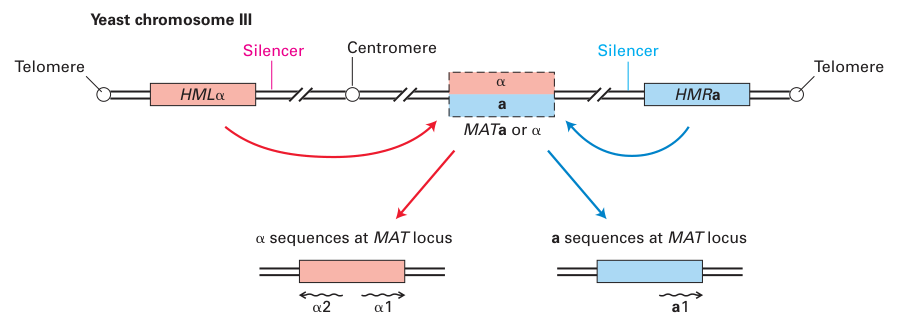
| Yeast chromosome III | 酵母III号染色体 |
| Telomere | 端粒 |
| Silencer | 沉默子 |
| Centromere | 着丝粒 |
| Mating-type locus | 交配型基因座 |
多条证据表明，HML和HMR位点的阻遏源于一种压缩的染色质结构，它通过空间位阻阻止转录因子与DNA相互作用。在一个很有说服力的实验中，把编码大肠杆菌（E. coli）某种酶的基因置于酵母启动子控制之下导入酵母细胞，该酶可甲基化序列GATC中的腺嘌呤残基，从而使该酶得以表达。研究人员发现，这些细胞中MAT位点内以及基因组大多数其他区域的GATC序列都被甲基化，但HML和HMR位点内的GATC序列没有。这些结果表明，沉默位点的DNA不能被大肠杆菌甲基化酶接近，推测也不能被蛋白质普遍接近，包括转录因子和RNA聚合酶。用各种酵母组蛋白突变体进行的类似实验表明，涉及H3和H4组蛋白尾部的特定相互作用是形成完全阻遏的染色质结构所必需的。其他研究显示，每条酵母染色体的端粒也像沉默子序列一样起作用。例如，把一个基因放到任何酵母端粒附近几千碱基以内，其表达就会被阻遏。此外，这种阻遏会被那些同样干扰沉默交配型位点阻遏的H3和H4组蛋白尾部突变所解除。
遗传学研究鉴定出几种蛋白质——RAP1和三种SIR蛋白——它们是酵母中沉默交配型位点和端粒的阻遏所必需的。研究发现，RAP1结合在与HML和HMR相关的DNA沉默子序列内，并结合于每条酵母染色体端粒上重复多次的一段序列。进一步的生化研究表明，SIR2蛋白是一种组蛋白去乙酰化酶，它去除组蛋白尾部赖氨酸上的乙酰基。此外，RAP1与SIR2、SIR3、SIR4蛋白彼此结合，而SIR3和SIR4结合组蛋白H3和H4的N端尾部；这些尾部由SIR2的去乙酰化酶活性维持在基本未乙酰化的状态。一系列实验采用荧光共聚焦显微术，对酵母细胞要么用荧光标记的抗SIR蛋白中任一种或抗RAP1的抗体染色，要么用标记的端粒特异性DNA探针杂交；结果显示，这些蛋白质形成大型、压缩的端粒核蛋白结构，类似高等真核生物中所见的异染色质（图9-36a、b、c）。
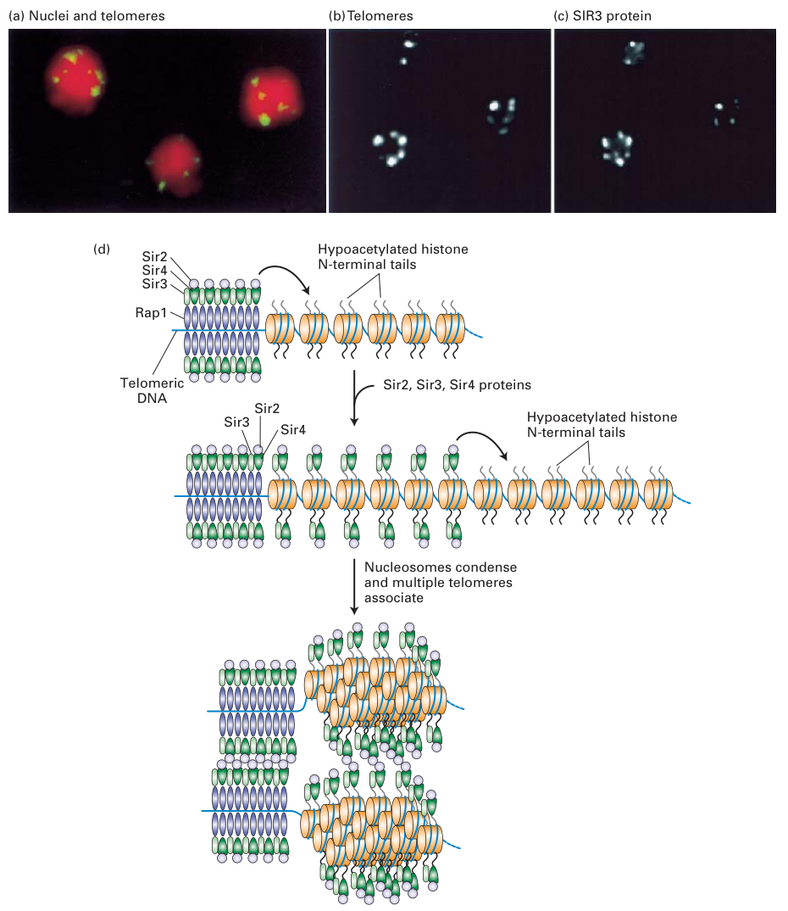
| (a) Nuclei and telomeres | （a）细胞核与端粒 |
| (b) Telomeres | （b）端粒 |
| (c) SIR3 protein | （c）SIR3蛋白 |
| Telomeric DNA | 端粒DNA |
| RAP1-binding site | RAP1结合位点 |
| Hypoacetylated histone N-terminal tails | 低乙酰化组蛋白N端尾部 |
| Nucleosomes condense and multiple telomeres associate | 核小体凝聚、多个端粒相互结合 |
| Histone deacetylase | 组蛋白去乙酰化酶 |
| Middle | 中部 |
| Bottom | 底部 |
图9-36d描绘了基于这些研究和其他研究提出的酵母端粒染色质介导沉默模型。端粒处异染色质的形成，以多个RAP1蛋白分子结合于端粒最末端无核小体区域中的重复序列为成核事件。由端粒结合的RAP1、三种SIR蛋白（SIR2、SIR3和SIR4）以及低乙酰化组蛋白H3和H4参与的蛋白质-蛋白质相互作用网络，构建出一个包含若干端粒的高级核蛋白复合物，其中DNA在很大程度上无法被外部蛋白质接近。还有一种蛋白SIR1也是交配型位点沉默所必需的。它与RAP1及其他蛋白质一起结合到与HML和HMR相关的沉默子区域，启动组装一个类似的、涵盖HML和HMR的多蛋白沉默复合物。
该模型的一个重要特征是，阻遏依赖于组蛋白尾部的低乙酰化。这一依赖性在用表达突变组蛋白的酵母突变体所做的实验中得到证明：在这些突变体中，组蛋白N端的赖氨酸被精氨酸、谷氨酰胺或甘氨酸取代。精氨酸与赖氨酸一样带正电，但不能被乙酰化。谷氨酰胺则是中性的，可模拟乙酰化赖氨酸的中性电荷；而甘氨酸没有侧链，也模拟了缺少带正电赖氨酸的情形。在H3或H4组蛋白尾部以谷氨酰胺和甘氨酸取代赖氨酸的突变体中，端粒和沉默交配型位点的阻遏存在缺陷，但在以精氨酸取代的突变体中则没有缺陷。此外，H3和H4赖氨酸的乙酰化会干扰Sir3和Sir4的结合，因而阻止沉默位点和端粒处的阻遏。最后，使用对组蛋白N端尾部特定位点乙酰化赖氨酸具特异性的抗体（见图8-26a）进行的染色质免疫沉淀实验（见图9-18a）证实，端粒附近和沉默交配型位点处被阻遏区域中的组蛋白是低乙酰化的，但在sir突变体中、当这些区域的基因去阻遏时，它们变为高乙酰化。
阻遏蛋白能指导特定基因处的组蛋白去乙酰化
组蛋白去乙酰化在染色质介导的基因阻遏中的重要性，还得到对调控染色体内部位置基因的真核阻遏蛋白的研究的支持。现已知道，这些蛋白质部分通过使其所阻遏基因的TATA框和启动子近端区域所在核小体中的组蛋白尾部去乙酰化来发挥作用。体外研究表明，当启动子DNA是含未乙酰化组蛋白的核小体的一部分时，通用转录因子无法结合TATA框和启动子近端区域。在未乙酰化的组蛋白中，N端赖氨酸带正电，可与DNA的磷酸基团相互作用。未乙酰化的组蛋白尾部还会与邻近的组蛋白八聚体及其他染色质相关蛋白相互作用，有利于染色质折叠成压缩的高级结构，其确切构象尚不清楚。最终结果是，通用转录因子无法在结合着低乙酰化组蛋白的启动子上组装成前起始复合物。相比之下，尾部高度乙酰化的组蛋白对通用转录因子结合的阻遏要弱得多，因为此时带正电的赖氨酸被中和，静电相互作用被消除。
当发现编码一种人类组蛋白去乙酰化酶的cDNA与酵母RPD3基因高度同源时，组蛋白去乙酰化与特定酵母启动子处转录阻遏之间的联系变得更加清晰；已知RPD3是若干酵母基因正常阻遏所必需的。进一步的工作表明，酵母Rpd3蛋白具有组蛋白去乙酰化酶活性。Rpd3在多个启动子处使组蛋白去乙酰化的能力依赖于另外两种蛋白质：Ume6，一种结合特定上游调控序列（URS1）的阻遏蛋白；以及Sin3，它是一个称为Rpd3L的大型多蛋白复合物的组成部分，该复合物也含有Rpd3（图9-37a）。Sin3还结合Ume6的阻遏结构域，从而把Rpd3组蛋白去乙酰化酶定位在复合物中，使其能与附近与启动子结合的核小体相互作用，并去除组蛋白尾部赖氨酸上的乙酰基。进一步的实验采用图9-18a所述的染色质免疫沉淀技术和针对特定乙酰化组蛋白赖氨酸的抗体，证明在野生型酵母中，Ume6结合位点紧邻的一两个核小体是低乙酰化的。这些位点包括被Ume6阻遏的基因的启动子。在sin3和rpd3缺失突变体中，这些启动子不仅去阻遏，而且Ume6结合位点附近的核小体变为高乙酰化。所有这些发现都为图9-37a所示阻遏蛋白指导的去乙酰化模型提供了相当有力的支持。
在酵母中，Sin3-Rpd3复合物（Rpd3L）作为辅阻遏因子发挥作用——辅阻遏因子是一种蛋白质或蛋白质复合物，它结合阻遏结构域，并与染色质、Pol II或通用转录因子相互作用以阻遏转录。在哺乳动物细胞的许多阻遏蛋白上也发现了含组蛋白去乙酰化酶的辅阻遏因子复合物。其中一些复合物含有Sin3的哺乳动物同源物（mSin3），与酵母中一样，它与阻遏蛋白的阻遏结构域相互作用。在哺乳动物细胞中鉴定出的其他组蛋白去乙酰化酶复合物，则含有额外的或不同的阻遏结构域结合蛋白。这些不同的阻遏蛋白与辅阻遏因子组合，通过与酵母机制相似的机制介导特定启动子处的组蛋白去乙酰化（见图9-37a）。除了通过形成「关闭的」染色质结构来阻遏转录外，在无组蛋白、使用纯化通用转录因子的体外实验中，还发现一些阻遏结构域能抑制前起始复合物的组装。这种活性可能也有助于这些阻遏结构域在体内阻遏转录。
激活蛋白能指导特定基因处的组蛋白乙酰化
正如阻遏蛋白通过结合其阻遏结构域的辅阻遏因子发挥作用一样，DNA结合型激活蛋白的激活结构域则通过结合多亚基的辅激活因子复合物发挥作用；辅激活因子复合物是与染色质、Pol II或通用转录因子相互作用或对其加以修饰以激活转录的蛋白质复合物。最早被鉴定的辅激活因子复合物之一是酵母SAGA复合物，它与9.4节所述的Gcn4激活蛋白协同工作。早期遗传学研究表明，Gcn4激活蛋白的完全活性需要一种称为Gcn5的蛋白质。关于Gcn5功能的线索来自对从原生动物四膜虫（Tetrahymena）中纯化的一种组蛋白乙酰化酶的生化研究，这是第一个被纯化的组蛋白乙酰化酶。序列分析揭示，四膜虫的这种蛋白质与酵母Gcn5同源，而后者很快也被证明具有组蛋白乙酰化酶活性。进一步的遗传学和生化研究揭示，Gcn5是一个多蛋白辅激活因子复合物的一个亚基，该复合物以编码其中一部分亚基的基因命名为SAGA复合物。该组蛋白乙酰化酶复合物的另一个亚基结合多种酵母激活蛋白（包括Gcn4）中的激活结构域。图9-37b所示的模型与以下观察一致：受Gcn4激活蛋白调控的基因，其启动子区域附近的核小体与细胞中大多数组蛋白相比被特异性地高度乙酰化。这种由激活蛋白指导的启动子区域附近核小体的高度乙酰化，打开了染色质结构，从而便于转录起始所需的其他蛋白质结合。该染色质结构比大多数染色质压缩程度低，这表现为它在分离细胞核中对核酸酶消化敏感。
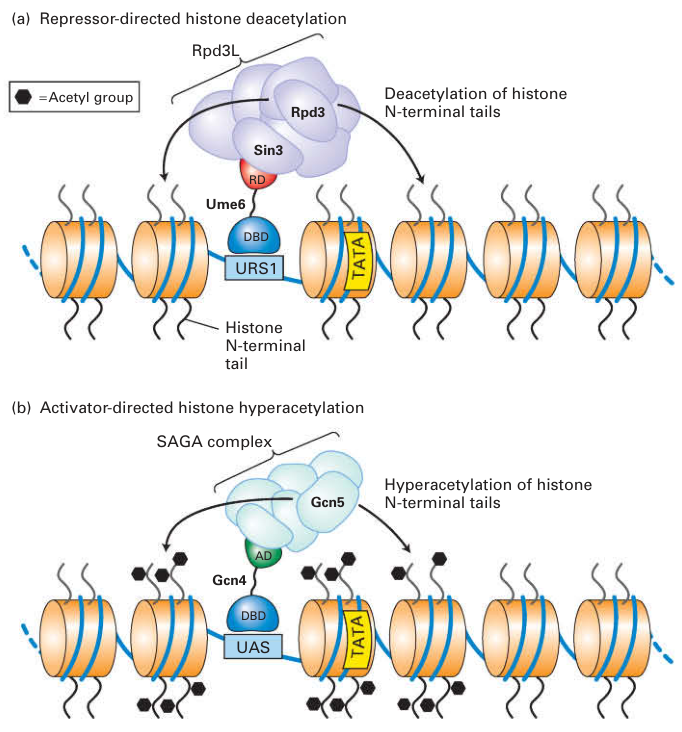
| SAGA complex | SAGA复合物 |
| Repression domain (RD) | 阻遏结构域（RD） |
| DNA-binding domain (DBD) | DNA结合结构域（DBD） |
| Activation domain (AD) | 激活结构域（AD） |
| URS1 (upstream regulatory sequence) | 上游调控序列（URS1） |
| UAS (upstream activating sequence) | 上游激活序列（UAS） |
| Deacetylation of histone N-terminal tails | 组蛋白N端尾部的去乙酰化 |
| Hyperacetylation of histone N-terminal tails | 组蛋白N端尾部的高乙酰化 |
| Histone N-terminal tail | 组蛋白N端尾部 |
| Histone acetyltransferase | 组蛋白乙酰化酶 |
| Histone deacetylase | 组蛋白去乙酰化酶 |
| Acetyl group | 乙酰基 |
| (a) Repressor-directed histone deacetylation | （a）阻遏蛋白导向的组蛋白去乙酰化 |
| (b) Activator-directed histone hyperacetylation | （b）激活蛋白导向的组蛋白高乙酰化 |
除了导致染色质去压缩外，特定组蛋白赖氨酸的乙酰化还为含溴结构域的蛋白质产生结合位点。溴结构域是一段约110个氨基酸的序列，折叠成能结合乙酰化赖氨酸的结构域。在若干有助于转录激活的染色体相关蛋白中，可发现一个或多个溴结构域。例如，通用转录因子TFIID的一个亚基含有两个溴结构域，它们以高亲和力结合乙酰化的核小体。回想一下，TFIID结合启动子会启动RNA聚合酶II前起始复合物的组装（见图9-19）。几乎所有活性基因启动子区域的核小体，其H3和H4组蛋白尾部中的赖氨酸都是乙酰化的。
高等真核生物中也运行着类似的激活机制。哺乳动物细胞含有与酵母SAGA复合物同源的多亚基组蛋白乙酰化酶辅激活因子复合物。它们还表达两种相关的300 kDa多结构域蛋白，称为CBP和p300，功能相似。如前所述，CBP的一个结构域结合CREB转录因子中被磷酸化的酸性激活结构域。CBP的其他结构域与其他激活蛋白中的不同激活结构域相互作用。CBP还有一个结构域具有组蛋白乙酰化酶活性，另有CBP结构域与额外的多亚基组蛋白乙酰化酶复合物结合。CREB和许多其他哺乳动物激活蛋白部分通过把CBP及相关组蛋白乙酰化酶复合物引导到特定核小体来发挥作用，在那里它们乙酰化组蛋白尾部，促进通用转录因子与启动子DNA的相互作用。
染色质重塑复合物帮助激活或阻遏转录
除组蛋白乙酰化酶复合物外，许多启动子处的激活还需要多蛋白染色质重塑复合物。最早被鉴定的这类复合物是酵母SWI/SNF染色质重塑复合物。SWI/SNF的一个亚基与DNA解旋酶同源；解旋酶是利用ATP水解能量破坏碱基配对核酸之间、或核酸与蛋白质之间相互作用的酶。在体外，SWI/SNF复合物被认为把DNA泵入或推入核小体，使结合在组蛋白八聚体表面的DNA短暂地从表面解离并移位，导致核小体沿DNA「滑动」。这种染色质重塑的净结果是促进转录因子结合到染色质中的特定DNA序列上。许多激活结构域结合这类染色质重塑复合物，而这种结合能刺激在DNA与组蛋白八聚体结合的染色质模板上进行的体外转录。因此，SWI/SNF复合物代表了另一类辅激活因子复合物。图9-38所示的实验生动地证明，激活结构域如何能引起一段染色质去压缩。这种去压缩源于激活结构域与染色质重塑复合物及组蛋白乙酰化酶复合物的结合。
真核细胞中许多涉及DNA的过程都需要染色质重塑复合物，包括转录调控、DNA复制、重组和DNA修复。真核细胞中存在若干类型的染色质重塑复合物，它们都具有同源的DNA解旋酶结构域。多细胞生物中的SWI/SNF复合物及相关染色质重塑复合物含有带溴结构域的亚基，这些结构域结合乙酰化的组蛋白尾部。因此，SWI/SNF复合物持续与染色质中已激活、已乙酰化的区域结合，推测是使这些区域维持去压缩的构象。染色质重塑复合物也可参与转录阻遏。这些复合物结合阻遏蛋白的阻遏结构域并促成阻遏，推测是通过把染色质折叠成压缩结构。关于这一类重要蛋白质如何改变染色质结构从而影响基因表达和其他过程，仍有很多有待了解。
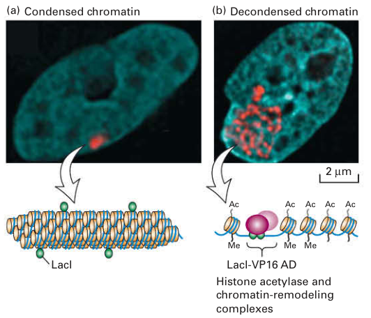
| Ac | Ac（乙酰基） |
| Me | Me（甲基） |
| Condensed chromatin | 凝聚染色质 |
| Decondensed chromatin | 解凝聚染色质 |
| Histone acetylase and chromatin-remodeling complexes | 组蛋白乙酰化酶与染色质重塑复合物 |
| Chromatin remodeling | 染色质重塑 |
| LacI-VP16 AD | LacI-VP16激活结构域 |
先锋转录因子在细胞分化过程中启动基因激活
当细胞在胚胎发生过程中、以及在成体生物中由干细胞分化的过程中分化时（见第21章），许多在该过程中被诱导的基因在未分化的祖细胞中最初位于被阻遏的异染色质区域。这些基因的激活要求其转录控制区域的染色质环境去压缩，以便转录因子能结合增强子和启动子近端控制元件，并使通用转录因子和Pol II能结合启动子。在许多情况下，这种去压缩由特殊的先锋转录因子启动；即使这些因子在DNA上的同源结合位点位于被阻遏的异染色质区域中，它们仍能结合这些位点。这些因子具有一个DNA结合结构域，它以类似于噬菌体434阻遏蛋白的方式结合DNA双螺旋的一侧（见图9-29）。该结构域使这些因子能在DNA缠绕于组蛋白八聚体上、DNA另一侧贴着组蛋白表面时，仍结合其特定位点。
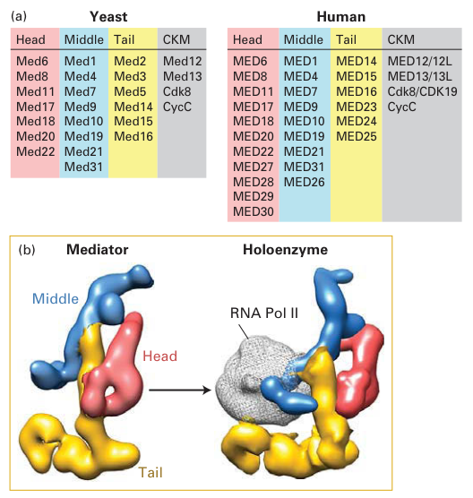
| Mediator | 中介体（Mediator） |
| Holoenzyme | 全酶 |
| RNA Pol II | RNA聚合酶II |
| Yeast | 酵母 |
| Human | 人类 |
| Head | 头部 |
| Middle | 中部 |
| Tail | 尾部 |
| CycC | 周期蛋白C（CycC） |
| CKM (Cdk8 kinase module) | Cdk8激酶模块（CKM） |
先锋转录因子启动转录激活过程的一个例子涉及肝特异性基因Alb1，它编码血清白蛋白——血清的一种主要成分，由肝细胞分泌进入血液。在发育中的小鼠里，FoxA和GATA-4或GATA-6转录因子是最先结合Alb1增强子的转录因子，此时细胞是注定发育为肝脏的未分化肠内胚层细胞。FoxA具有一个「翼状螺旋」DNA结合结构域，它结合含有FoxA结合位点一侧的DNA双螺旋。当GATA因子的特异位点包含在缠绕于组蛋白八聚体上的核小体DNA中时，GATA因子也能结合这些位点。随后，FoxA和GATA-4/6的激活结构域可与染色质重塑复合物和组蛋白乙酰化酶复合物相互作用，使120 bp的Alb1增强子的染色质去压缩，从而使后来发育出的新生肝芽中观察到另外四个转录因子随后结合。
中介体复合物在激活结构域与Pol II之间形成分子桥
一旦激活结构域与组蛋白乙酰化酶复合物和染色质重塑复合物的相互作用把启动子区域的染色质转变成允许通用转录因子结合的「开放」结构，激活结构域就与另一类多亚基辅激活因子复合物——中介体复合物——相互作用（图9-39）。激活结构域与中介体的相互作用刺激前起始复合物在启动子上组装。最近的冷冻电镜研究表明，中介体复合物的头部和中段结构域直接与Pol II相互作用。若干中介体亚基结合各种激活蛋白中的激活结构域。因此，中介体能在结合于DNA同源位点的激活蛋白与结合于启动子的Pol II之间形成分子桥。
用温度敏感型酵母突变体进行的实验表明，某些中介体亚基是几乎所有酵母基因转录所必需的。这些亚基有助于维持中介体复合物的整体结构或与Pol II结合，因此是所有激活蛋白进行激活所必需的。相比之下，另一些中介体亚基则为特定基因子集的正常激活或阻遏所必需。对这些非必需中介体亚基有缺陷的突变体进行酵母基因表达的DNA微阵列分析（见图6-26）表明，每一个这样的亚基影响全部基因中3%–10%的转录，其缺失使mRNA表达量增加或减少两倍或更多。在许多情况下，发现这些中介体亚基与特定的激活结构域相互作用；因此当某个中介体亚基有缺陷时，由结合该亚基的激活蛋白所调控的基因，其转录严重下降，但其他基因的转录不受影响。最近的冷冻电镜研究提示，当激活结构域与中介体相互作用时，图9-39中描绘的头部、中段和尾部结构域彼此相对旋转，为RNA聚合酶II形成一个结合表面。在所提出的聚合酶-中介体复合物（称为全酶）模型中，聚合酶上与前起始复合物中通用转录因子相互作用的表面（见图9-20）仍然暴露。
各种实验结果表明，单个中介体亚基结合特定的激活结构域，这提示多个激活蛋白可以同时或以极快的先后顺序与同一个中介体复合物相互作用，从而影响单个启动子的转录（图9-40）。结合在增强子或启动子近端元件上的激活蛋白能与结合在启动子上的中介体相互作用，因为染色质和DNA一样是柔性的，可以形成环，使调控区域与启动子彼此靠近——正如在大肠杆菌NtrC激活蛋白和σ54-RNA聚合酶中观察到的那样（见图9-5）。在真核启动子上形成的多蛋白复合物可能包含100条以上的多肽，总质量达3–5兆道尔顿（MDa）——与一个核糖体一样大。
在体内，前起始复合物在启动子上的组装和转录起始是一个高度协同的过程，通常要求结合于转录控制元件的若干转录因子与辅激活因子相互作用，而辅激活因子又转而与Pol II和通用转录因子相互作用。细胞必须产生某个特定基因转录所需的特定激活蛋白组合，才能表达该基因。
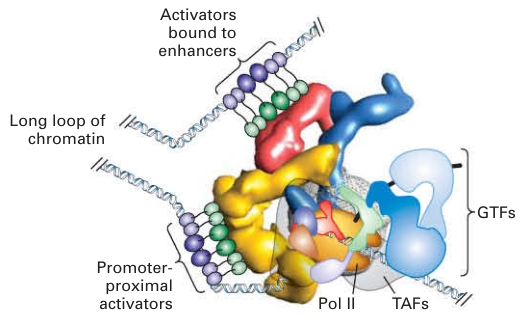
| GTFs | 通用转录因子（GTFs） |
| Activators bound to enhancers | 结合于增强子的激活蛋白 |
| Promoter-proximal activators | 启动子近端激活蛋白 |
| Pol II | RNA聚合酶II（Pol II） |
| TAFs | TBP相关因子（TAFs） |
| Mediator | 中介体（Mediator） |
| chromatin | 染色质 |
| Long loop of chromatin | 长染色质环 |
- 真核转录激活蛋白和阻遏蛋白发挥其效应，主要靠结合多亚基的辅激活因子或辅阻遏因子；后者通过调节染色质结构、或通过与Pol II及通用转录因子相互作用，来影响前起始复合物的组装。
- 染色质中压缩区域（异染色质）的DNA相对难以被转录因子和其他蛋白质接近，因此这些区域中的基因表达受到阻遏。
- 若干蛋白质彼此之间、以及与组蛋白H3和H4低乙酰化N端尾部之间的相互作用，造成了酿酒酵母端粒和沉默交配型位点中发生的染色质介导的转录阻遏（见图9-36）。
- 某些阻遏结构域通过与辅阻遏因子相互作用发挥作用，这些辅阻遏因子是组蛋白去乙酰化酶复合物。随后，阻遏蛋白结合位点附近核小体中组蛋白N端尾部的去乙酰化，抑制了启动子DNA与通用转录因子之间的相互作用，从而阻遏转录起始（见图9-37a）。
- 激活结构域通过结合多蛋白辅激活因子复合物（如组蛋白乙酰化酶复合物）发挥作用。随后，激活蛋白结合位点附近核小体中组蛋白N端尾部的高度乙酰化，促进了启动子DNA与通用转录因子之间的相互作用，从而刺激转录起始（见图9-37b）。
- SWI/SNF染色质重塑因子构成另一类辅激活因子。这些多亚基复合物能在依赖ATP的反应中使DNA短暂地从组蛋白核心上解离，也可能使染色质区域去压缩，从而促进转录起始所需的DNA结合蛋白结合。
- 中介体复合物是另一类辅激活因子，它是一个约30个亚基的复合物，通过直接结合聚合酶和激活结构域，在激活结构域与RNA聚合酶II之间形成分子桥。中介体通过与若干不同激活蛋白同时或快速先后结合，可能有助于把多个激活蛋白对单个启动子的效应整合起来（见图9-40）。
- 结合在远处增强子上的激活蛋白能与结合在启动子上的转录因子相互作用，因为染色质是柔性的，其间的染色质可以形成一个大的环。
- 体内前起始复合物的组装高度协同，通常需要若干激活蛋白。细胞必须产生某个特定基因转录所需的特定激活蛋白组合，才能表达该基因。
9.6 转录因子活性的调控
在前面的讨论中我们已经看到，与特定DNA调控序列结合的转录因子的组合，如何控制真核基因的转录。多细胞生物中某个特定基因是否在特定时间于特定细胞中表达，很大程度上取决于与该基因转录控制区相互作用的转录因子在核内的浓度和活性。（例外情况源于「转录记忆」，它由下一节讨论的表观遗传机制所产生。）某一特定细胞类型中表达哪些转录因子、表达量各为多少，是由该细胞类型发育和分化过程中，转录因子与编码转录因子的基因中控制区之间发生的多次调控性相互作用决定的。近年来，通过在全基因组尺度上鉴定DNase I超敏感位点来分析转录因子结合位点所取得的进展，使我们首次得以高分辨率地看清：在多种人类细胞类型的发育和分化过程中，转录因子的结合如何变化。
DNase I超敏感位点反映细胞分化的发育史
在第8章中我们了解到，与在另一种不表达该基因的细胞类型中的同一基因相比，正在表达的基因对DNase I（一种牛胰酶）的消化要敏感得多（见图8-34）。除了这种在长片段范围内DNase I敏感性普遍升高之外，研究者后来还发现，基因组中一些特定的短区域——长约一百个碱基对——对DNase I消化极为敏感，是用低浓度DNase I处理分离的细胞核时最先被切断的区域。这些位点称为DNase I超敏感位点（DHS）。高通量测序方法已使人们能够绘制多种已分化和胚胎细胞类型中全基因组的DHS图谱。简言之，用低浓度DNase I消化分离的细胞核后，从处理过的染色质中分离出DNA；将已知序列的寡核苷酸接头连接到DNase I消化产生的DNA末端上；然后用超声把DNA打断成小片段，经PCR扩增并测序。这样，与寡核苷酸接头已知序列相邻的人类DNA序列就被鉴定为DHS。
图9-41a显示了在左侧标出的各种人类细胞类型的样本中，某个DHS被测序的次数——这是该位点DNase敏感性的一个度量。图中展示的是12号染色体上约600 kb的一段基因组区域，位于距该染色体左端96.2–96.8 Mb处。每个竖直条形的高度代表该位置DNA序列在从各细胞类型分离的细胞核中被消化的敏感程度。
用染色质免疫沉淀定位特定转录因子的结合位点（见图9-18）已表明，大多数转录因子结合位点与DHS重合。这可能是因为结合的转录因子的DNA结合结构域使其结合位点两侧的DNA更易被DNase I消化，也可能是因为转录因子的激活结构域与染色质重塑复合物相互作用，后者使DNA与相邻核小体中组蛋白八聚体的结合变得不稳定，从而使DNA对DNase I消化更敏感。由于DHS与结合的转录因子重合，某一染色质区域的DHS图谱代表了所结合转录因子的位置，尽管所结合的究竟是哪些转录因子并未被直接鉴定出来。
在图9-41a中，左侧显示的是测定DHS数据所用的组织类型，而这些组织类型所由之发育而来的胚胎组织，则按图9-41b所示用颜色标出。显而易见，亲缘关系较近的细胞类型——例如来自身体不同部位的成纤维细胞，或衬于不同器官血管内表面的内皮细胞——其DHS比亲缘关系较远的细胞类型更为相似。用计算机方法可以比较全基因组范围内这些细胞类型各自DHS图谱的相似性。借助这些计算方法，可以生成一个树状图，显示一种细胞类型的DHS图谱与其他细胞类型相似的程度（见图9-41b）。这种树状图类似于用来显示基因序列亲缘关系、进而显示其进化的树状图（见图8-21b）。
重要的是，胚胎干细胞的DHS图谱位于所有细胞类型DHS树状图的根部（见图9-41b）。这些来自早期哺乳动物胚胎内细胞团的细胞（见第21章，图21-5）是成体生物中所有细胞的祖先。胚胎干细胞似乎具有所有细胞中最复杂的转录控制，因为它们拥有的DHS数量最多：一项研究中约为257,000个，而已分化细胞中为90,000–150,000个。这种差异可能反映了胚胎干细胞的发育潜能。在成体已分化细胞中观察到的DHS，约30%也见于胚胎干细胞，但每种成体细胞类型所保留的是不同的30%。发育过程中还会产生50,000–100,000个胚胎干细胞中没有的新DHS，而每种细胞类型所产生的DHS集合各不相同。这些DHS图谱揭示了调控每个基因的转录因子组合的复杂性。在图9-41所示的细胞类型中，共鉴定出约一百万个不同的DHS，提示人类基因组中约21,000个基因的转录平均各由四五个增强子的组合来调控。该分析未包括中枢神经系统——这可能是最复杂的器官系统——因此人类增强子的总数可能要大得多。但在所分析的组织中，DHS图谱揭示了早期胚胎转录因子的结合在何处丧失，以及当细胞从胚胎干细胞分化时，新的细胞类型特异性转录因子组合在何处结合。即便这一估计也未能充分反映转录控制的复杂性，因为许多被检测为单个DHS的转录因子结合位点，实际上是由不同细胞类型中表达的不同但相关的转录因子所结合的。不同但相关的转录因子常常在不同细胞类型中结合于同一转录控制区，以调控该细胞类型所需的转录水平。
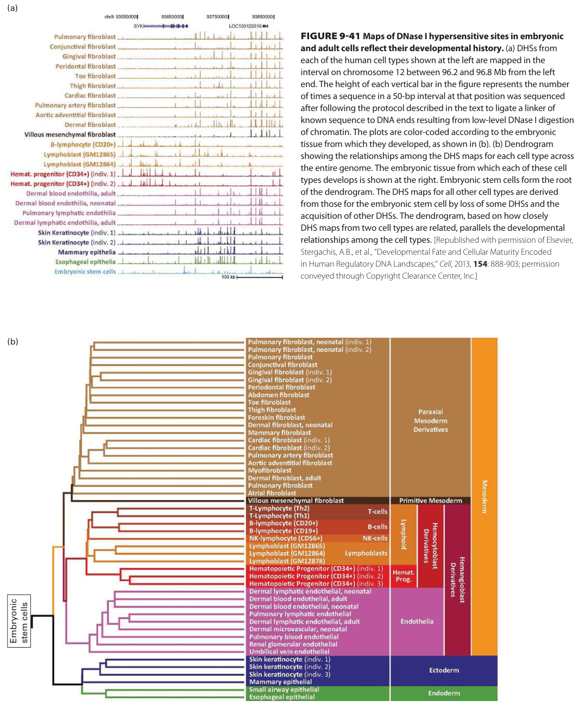
| Embryonic stem cells | 胚胎干细胞 |
核受体受细胞外信号调控
除了控制转录因子的表达之外，细胞还调控某一特定细胞类型中表达的许多转录因子的活性。例如，许多转录因子受细胞间信号的调控。细胞表面跨膜受体蛋白的胞外结构域与这些受体的特定蛋白配体（由其他细胞分泌，或表达于相邻细胞表面）之间的相互作用，激活这些跨膜蛋白的胞内结构域，从而把细胞外接收到的信号转换成细胞内的信号。随后，胞内信号调控那些通过磷酸化、乙酰化及其他类型翻译后蛋白修饰来修饰转录因子的酶的活性。这些翻译后修饰激活或抑制细胞核中的转录因子。第16章将介绍蛋白配体的主要细胞表面受体类型，以及调控转录因子活性的胞内信号转导通路。
这里我们讨论另一大类调控转录因子活性的细胞外信号：小的脂溶性激素，包括许多不同的类固醇激素、视黄酸类和甲状腺激素。这些脂溶性激素能够扩散穿过质膜和核膜，直接与它们所控制的转录因子相互作用（图9-42）。如前所述，受脂溶性激素调控的转录因子包括核受体超家族。这些转录因子只有与配体结合时才作为转录激活因子发挥功能。
所有核受体具有共同的结构域结构
对编码各种核受体的mRNA所衍生的cDNA进行测序，揭示了它们在氨基酸序列上高度保守，也揭示出每种受体都有三个功能区（图9-43）。第一个是长度可变（100–500个氨基酸）的独特N端区；在大多数核受体中，该可变区的部分区段作为激活结构域发挥功能。第二个是DNA结合结构域，位于一级序列中部附近，含有一个C4锌指基序的重复（见图9-30b）。第三个区域是激素结合结构域，位于C端附近，含有一个激素依赖性激活结构域（见图9-31b、c）。在某些核受体中，激素结合结构域在没有配体时作为阻遏结构域发挥功能。
核受体反应元件含反向重复或正向重复
核受体所结合的DNA位点称为反应元件。目前已经确定了几种反应元件的特征性核苷酸序列。两种类固醇激素受体的反应元件——糖皮质激素受体反应元件（GRE）和雌激素受体反应元件（ERE）——的共有序列，是由任意三个碱基对隔开的6 bp反向重复（图9-44a、b）。这一发现提示，相应的类固醇激素受体以对称二聚体（即具有二重旋转对称性的二聚体）的形式结合DNA；后来对同源二聚体糖皮质激素受体的C4锌指DNA结合结构域所做的X射线晶体学分析证实了这一点（见图9-30b）。
有些核受体反应元件，例如结合维生素D3、甲状腺激素和视黄酸等非类固醇激素的受体的反应元件，是雌激素受体所识别序列的正向重复，重复之间相隔三个、四个或五个碱基对（图9-44c–e）。
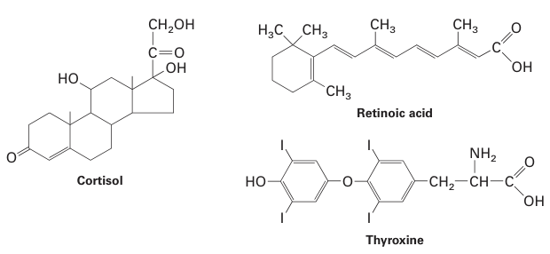
| Cortisol | 皮质醇 |
| Retinoic acid | 视黄酸 |
| Thyroxine | 甲状腺素 |
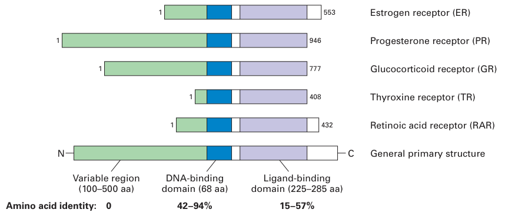
| General primary structure | 通用一级结构 |
| Amino acid identity | 氨基酸同一性 |
| Variable region | 可变区 |
| (100–500 aa) | （100–500个氨基酸） |
| Ligand-binding domain | 配体结合结构域 |
| (225–285 aa) | （225–285个氨基酸） |
| DNA-binding domain (68 aa) | DNA结合结构域（68个氨基酸） |
| Estrogen receptor (ER) | 雌激素受体（ER） |
| Progesterone receptor (PR) | 孕激素受体（PR） |
| Glucocorticoid receptor (GR) | 糖皮质激素受体（GR） |
| Thyroxine receptor (TR) | 甲状腺素受体（TR） |
| Retinoic acid receptor (RAR) | 视黄酸受体（RAR） |
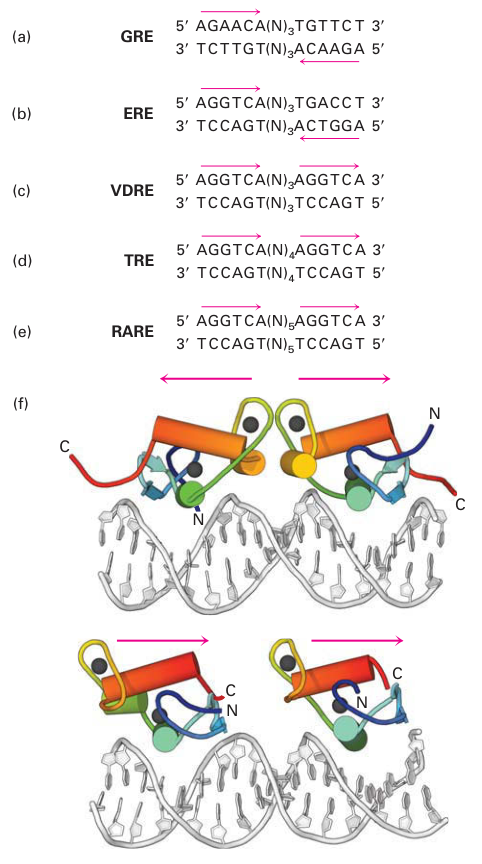
| Hormone response element | 激素应答元件 |
| Glucocorticoid response element (GRE) | 糖皮质激素应答元件（GRE） |
| Estrogen response element (ERE) | 雌激素应答元件（ERE） |
| Vitamin D response element (VDRE) | 维生素D应答元件（VDRE） |
| Thyroid response element (TRE) | 甲状腺激素应答元件（TRE） |
| Retinoic acid response element (RARE) | 视黄酸应答元件（RARE） |
这些反应元件的特异性由重复序列之间的间隔决定。结合这类正向重复反应元件的核受体以异二聚体的形式结合，这些异二聚体都共有一个称为RXR的单体。例如，维生素D3反应元件（VDRE）由RXR-VDR异二聚体结合，视黄酸反应元件（RARE）由RXR-RAR结合。组成这些异二聚体的单体之间的相互作用方式，使两个DNA结合结构域处于相同而非反向的取向，从而使RXR异二聚体能够结合到每个单体结合位点的正向重复上（图9-44f）。相反，同源二聚体核受体（如GRE和ERE）中的单体取反向取向。
激素与核受体的结合调控其作为转录因子的活性
激素结合控制核受体活性的机制，在异二聚体受体与同源二聚体受体之间有所不同。异二聚体核受体（如RXR-VDR、RXR-TR和RXR-RAR）只存在于细胞核中。在没有激素配体时，它们结合到DNA上的同源位点后会阻遏转录。它们与前文所述的其他阻遏蛋白一样（见图9-37a），通过组蛋白去乙酰化酶复合物指导邻近核小体上组蛋白的去乙酰化，从而实现这种阻遏。当异二聚体核受体结合其配体后，它们发生构象变化，并因此结合组蛋白乙酰化酶复合物，从而逆转自身的阻遏效应。在有配体存在时，受体的配体结合构象还结合中介体（Mediator），刺激前起始复合物的组装。
与异二聚体核受体不同，同源二聚体受体在没有配体时存在于细胞质中。激素与这些受体结合会导致它们易位到细胞核。图9-45a–c所示的转染实验证实了同源二聚体糖皮质激素受体（GR）的激素依赖性易位。仅GR的激素结合结构域即可介导这一转运。后续研究表明，在没有激素时GR无法被转运入核，因为其配体结合结构域被细胞的主要分子伴侣Hsp70部分去折叠。只要受体被限制在细胞质中，它就不能与靶基因相互作用，因而不能激活转录。激素结合促使GR从Hsp70「交接」给Hsp90，后者在偶联ATP水解的情况下使GR的配体结合结构域重新折叠，从而增加了对激素的亲和力，并使GR从Hsp70上释放出来，以便进入细胞核。一旦以配体结合所诱导的构象进入细胞核，它便能结合与靶基因相关的反应元件（图9-45d）。带有结合激素的受体一旦结合到反应元件上，就通过与染色质重塑复合物、组蛋白乙酰化酶复合物以及中介体相互作用而激活转录。
后生动物调控RNA聚合酶II从起始向延伸的转变
应用染色质免疫沉淀技术（见图9-18）所得到的一个近期意外发现是：后生动物中有很大一部分基因，在转录起始位点约100 bp以内存在一个暂停的、处于延伸状态的RNA聚合酶II。因此，所编码蛋白质的表达不仅受转录起始控制，还受转录单位早期阶段的转录延伸控制。最早发现受转录延伸调控的基因是热激基因（如hsp70），它们编码有助于变性蛋白重新折叠的分子伴侣，以及帮助细胞应对热激效应的其他蛋白质。发生热激时，热激转录因子（HSTF）被激活。活化的HSTF结合到热激基因启动子近端区域的特定位置，刺激暂停的聚合酶继续链延伸，并促使额外的Pol II分子快速重新起始，导致每分钟发生多次转录起始。这种转录控制机制使细胞能够迅速作出反应：这些基因始终暂停在转录中止的状态，因此当紧急情况出现时，无需花时间去重塑和乙酰化启动子处的染色质并组装转录前起始复合物。
另一个被证明通过控制暂停在转录起始位点附近的Pol II的延伸来调控转录的转录因子是MYC，它在细胞生长与分裂的调控中发挥作用。MYC在癌细胞中常高水平表达，并且是将体细胞重编程为能够分化成任何细胞类型的多能干细胞的关键转录因子。诱导已分化细胞转变为多能干细胞的能力引起了巨大的研究兴趣，因为它有望用于开发针对神经系统创伤性损伤和退行性疾病的治疗方法（见第21章）。
转录终止也受到调控
一旦Pol II从转录起始位点转录出约200个核苷酸，它对大多数基因的延伸就具有高度持续性。然而，用抗Pol II抗体进行染色质免疫沉淀表明，在一群细胞中，转录单位内不同位置上Pol II的数量差异很大（见图9-18b右）。这一发现表明，该酶通过某些区域的速度远快于其他区域。在大多数情况下，Pol II要等到转录出一段指导RNA在被编码mRNA的3′端序列处进行切割和多聚腺苷酸化的序列之后，才终止转录。随后，Pol II可以在该多聚腺苷酸化位点下游0.5–2 kb处的多个位点中的任一处终止转录。用突变基因所做的实验表明，终止与切割并多聚腺苷酸化转录本3′端的过程相偶联，该过程将在下一章讨论。
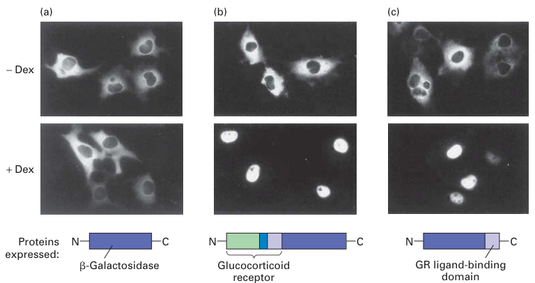
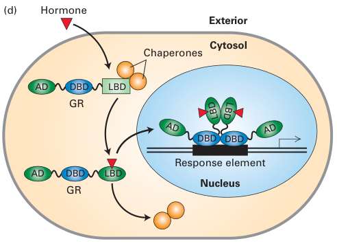
| Glucocorticoid receptor | 糖皮质激素受体 |
| GR | 糖皮质激素受体（GR） |
| GR ligand-binding domain | GR配体结合结构域 |
| Activation domain (AD) | 激活结构域（AD） |
| DNA-binding domain (DBD) | DNA结合结构域（DBD） |
| Ligand-binding domain (LBD) | 配体结合结构域（LBD） |
| Proteins expressed | 表达的蛋白质 |
| β-Galactosidase | β-半乳糖苷酶 |
| Dex (dexamethasone) | 地塞米松（Dex） |
| Hormone | 激素 |
| Chaperones | 分子伴侣 |
| Exterior | 外侧 |
| Cytosol | 胞质 |
| Nucleus | 细胞核 |
| Response element | 应答元件 |
- 许多转录因子的活性，是通过细胞外蛋白质和肽与细胞表面受体的结合而被间接调控的。这些受体激活胞内信号转导通路，后者通过第16章讨论的多种机制调控特定的转录因子。
- 核受体构成一个二聚体C4锌指转录因子超家族，它们结合脂溶性激素，并与DNA中特定的反应元件相互作用（见图9-42和9-44）。
- 激素与核受体的结合诱导构象变化，从而改变这些受体与其他蛋白质的相互作用（见图9-31b、c）。
- 异二聚体核受体（例如视黄酸类、维生素D和甲状腺激素的受体）只存在于细胞核中。在没有激素时，它们阻遏带有相应反应元件的靶基因的转录；当与配体结合后，它们激活转录。
- 类固醇激素受体是同源二聚体核受体。在没有激素时，它们被分子伴侣扣留在细胞质中；当与配体结合后，它们能够易位到细胞核并激活靶基因的转录（见图9-45）。
- DNase I超敏感位点（DHS）指示染色质中转录因子结合的位置，但不指示所结合的是哪一种转录因子。尽管如此，绘制分化细胞的DHS图谱可以总览细胞分化为特定细胞类型时转录因子结合位点如何变化。
- 在后生动物中，RNA聚合酶II在延伸过程中常常暂停在距转录起始位点约50–100个碱基对以内。从这种暂停中释放有助于基因转录的调控。
- 暂停在启动子近端区域的Pol II恢复延伸，也是基因转录所必需的，并且是一个受调控的步骤。
- 在大多数情况下，Pol II要等到转录出一段指导RNA切割和多聚腺苷酸化的序列之后，才终止转录。
9.7 转录的表观遗传调控
表观遗传学（epigenetics）一词指的是研究细胞表型中可遗传的改变，这些改变并非源于DNA序列的变化。例如，在骨髓干细胞分化为几种不同类型血细胞的过程中，一个造血干细胞分裂成两个子细胞，其中一个继续保持造血干细胞的特性，包括分化为所有不同类型血细胞的潜能。但另一个子细胞则成为淋巴系祖细胞或髓系祖细胞（见图21-17）。淋巴系祖细胞产生的子细胞分化为淋巴细胞，后者执行许多参与对病原体免疫应答的功能（见第23章）。髓系祖细胞分裂产生的子细胞则定向分化为红细胞、不同种类的吞噬性白细胞，或产生参与血液凝固的血小板的细胞。淋巴系和髓系祖细胞与其所来源的受精卵（由精子与卵细胞受精产生）具有相同的DNA序列，但由于两者之间存在表观遗传差异，它们的发育潜能受到了限制。
此类表观遗传改变最初是特定主控转录因子表达的结果；这些转录因子是细胞分化的调控者，在复杂的基因控制网络中控制着其他基因的表达，而那些基因编码转录因子以及参与细胞间通讯的蛋白质；这一领域目前正受到深入研究。由转录因子启动的基因表达变化，常常通过组蛋白的翻译后修饰以及DNA上胞嘧啶嘧啶环第5位碳的甲基化（见图2-17）而在多次细胞分裂中得到强化和维持，这些修饰在细胞分裂时被保持并传递给子细胞。因此，人们用「表观遗传标记」一词来指称组蛋白的这类翻译后修饰以及DNA的5-甲基C修饰。
DNA甲基化抑制转录
如前所述，哺乳动物中的大多数启动子属于CpG岛这一类。活跃的CpG岛启动子其CG序列中的C是未甲基化的。未甲基化的CpG岛启动子对组蛋白八聚体的亲和力降低，但紧邻未甲基化启动子的核小体则带有组蛋白H3第4位赖氨酸二甲基化或三甲基化修饰，并与在正义和反义模板DNA链转录过程中被暂停的RNA聚合酶II分子相关联，如前所述（见图9-18和9-19）。最近的研究表明，小鼠细胞中组蛋白H3第4位赖氨酸的甲基化之所以发生，是因为一种名为Cfp1（CXXC指蛋白1）的蛋白质通过一个锌指结构域（CXXC）结合未甲基化的富含CpG的DNA，并与一种对组蛋白H3第4位赖氨酸特异的组蛋白甲基化酶（Setd1）相关联。染色质重塑复合物以及启动RNA聚合酶II前起始复合物装配的通用转录因子TFIID（见图9-19），会与带有H3第4位赖氨酸三甲基标记的核小体结合，促进RNA聚合酶II的转录起始。
然而，在分化细胞中，视细胞类型而定，一小部分特定的CpG岛启动子的CpG带有5-甲基C标记。CpG岛DNA的这种修饰会触发染色质压缩。一个蛋白质家族能与富含5-甲基C修饰CpG的DNA结合（称为甲基CpG结合蛋白，即MBD），它们结合到被标记的启动子上，并与组蛋白去乙酰化酶以及使染色质压缩的抑制性染色质重塑复合物相关联，从而导致转录抑制。5-甲基C是由名为DNMT3a和DNMT3b的DNA甲基转移酶加到CpG上的。它们被称为从头DNA甲基转移酶，因为它们甲基化的是未甲基化的C。关于DNMT3a和DNMT3b如何被引导到特定的CpG岛，仍有很多有待了解。但一旦它们甲基化了某段DNA序列，该C上的甲基化就通过无处不在的维持性甲基转移酶DNMT1的作用、经由DNA复制传递下去：（红色表示子链）。因此，一旦一个CpG岛启动子被DNMT3a或DNMT3b甲基化，它在随后的子细胞中就会继续被DNMT1甲基化。于是，即使最初触发DNMT3a或DNMT3b进行C甲基化的刺激已经消失，该启动子仍会通过与MBD的相互作用在所有后续子细胞中保持被抑制状态。因此，C甲基化启动子的抑制是经细胞分裂遗传的。这种表观遗传抑制机制正受到深入研究，因为编码具有抑制癌症发生功能的蛋白质的抑癌基因，在癌细胞中常常因其启动子区发生异常CpG甲基化而失活，第24章将进一步讨论。
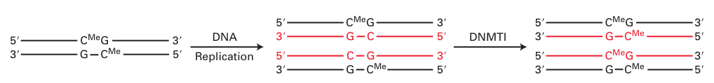
特定组蛋白赖氨酸的甲基化与基因抑制的表观遗传机制相关联
图8-26b总结了组蛋白上存在的各种翻译后修饰类型，包括赖氨酸的乙酰化，以及赖氨酸侧链末端ε-氨基氮原子上的赖氨酸甲基化（见图2-14）。赖氨酸可在这个末端氮原子上添加一个、两个或三个甲基而被修饰，生成单、二和三甲基化赖氨酸，它们都带有一个正电荷。
特定核小体上某个特定组蛋白赖氨酸的乙酰化状态，取决于组蛋白乙酰化酶和组蛋白去乙酰化酶分别进行的乙酰化与去乙酰化之间的动态平衡。当局部DNA结合的激活蛋白瞬时结合组蛋白乙酰化酶复合物时，染色质局部区域的组蛋白乙酰化占优势。当阻遏蛋白瞬时结合组蛋白去乙酰化酶复合物时，去乙酰化占优势。脉冲-追踪放射性标记实验表明，组蛋白赖氨酸上的乙酰基通过组蛋白乙酰化酶和组蛋白去乙酰化酶的依次作用而快速周转。相比之下，组蛋白上的甲基则稳定得多。组蛋白赖氨酸上的甲基可被组蛋白赖氨酸去甲基化酶去除。但由此产生的组蛋白赖氨酸甲基的周转远慢于组蛋白赖氨酸乙酰基的周转，这使甲基化成为传递表观遗传信息更合适的翻译后修饰。
组蛋白还有其他若干翻译后修饰已被鉴定（见图8-26b）。这些修饰都有可能正向或负向调控与染色质纤维相互作用的蛋白质的结合，从而调控转录以及其他过程，例如染色体在有丝分裂期间折叠成高度压缩的结构（见图8-35和8-36）。由此浮现出的一幅染色质图景是：从染色质纤维上以无规卷曲形式伸出的组蛋白尾部被翻译后修饰，产生众多可能的修饰组合之一，这些组合通过调节大量不同蛋白质复合物的结合来调控转录和其他过程。这种由组蛋白各种翻译后修饰的共同影响所决定的、蛋白质与染色质特定区域相互作用的控制，被称为组蛋白密码。其中一些修饰（如组蛋白赖氨酸乙酰化）可以快速逆转，而另一些修饰（如组蛋白赖氨酸甲基化）则可通过染色质复制被模板化，从而在DNA序列的遗传之外产生表观遗传的遗传。表9-3总结了特定组蛋白氨基酸残基的翻译后修饰通常对转录的影响。
异染色质中组蛋白H3第9位赖氨酸的甲基化 在大多数真核生物中，一些辅阻遏物复合物含有组蛋白甲基转移酶亚基，它们使组蛋白H3第9位赖氨酸甲基化，生成二甲基化和三甲基化赖氨酸。这些甲基化赖氨酸是HP1蛋白各种同种型的结合位点，HP1在异染色质的压缩中发挥作用，如第8章所述（见图8-29）。例如，KAP1辅阻遏物复合物与人类基因组所编码的200多种锌指转录因子中的一类共同发挥作用。该辅阻遏物复合物含有一个H3第9位赖氨酸甲基转移酶，它使被抑制基因启动子区上方的核小体甲基化，导致HP1结合和转录抑制。在培养的小鼠成纤维细胞中，一个通过KAP1辅阻遏物作用而被抑制的整合转基因在大多数细胞中与异染色质相关联，而同一转基因的活跃形式则与常染色质相关联（图9-46）。染色质免疫沉淀分析（见图9-18）表明，被抑制的基因与第9位赖氨酸甲基化的组蛋白H3以及与HP1相关联，而活跃的基因则不是。
重要的是，H3第9位赖氨酸甲基化通过图9-47所示的机制在染色体复制后得以维持。当DNA的甲基化区域在S期复制时，与亲代DNA相关联的组蛋白八聚体被随机分配到子代DNA分子中。在第9位赖氨酸上未被甲基化的新组蛋白八聚体也随机地与新的子代染色体结合，但由于亲代组蛋白八聚体同时与两条子代染色体结合，大约一半的子代染色体核小体在第9位赖氨酸上是甲基化的。组蛋白H3赖氨酸甲基转移酶（直接或间接地）与亲代甲基化核小体结合，导致新装配的组蛋白八聚体被甲基化。每次细胞分裂都重复这一过程，从而维持染色体该区域H3第9位赖氨酸的甲基化。
| 修饰 | 修饰位点 | 对转录的影响 |
|---|---|---|
| 乙酰化赖氨酸 | H3（K9、K14、K18、K27、K56） | 激活 |
| H4（K5、K8、K13、K16） | 激活 | |
| H2A（K5、K9、K13） | 激活 | |
| H2B（K5、K12、K15、K20） | 激活 | |
| 低乙酰化赖氨酸 | 阻遏 | |
| 磷酸化丝氨酸/苏氨酸 | H3（T3、S10、S28） | 激活 |
| H2A（S1、T120） | 激活 | |
| H2B（S14） | 激活 | |
| 甲基化精氨酸 | H3（R17、R23） | 激活 |
| H4（R3） | 激活 | |
| 甲基化赖氨酸 | H3（K4）Me3，位于启动子区 | |
| H3（K4）Me1，位于增强子 | 激活 | |
| H3（K36、K79），位于转录区 | 延伸 | |
| H3（K9、K27） | 阻遏 | |
| H4（K20） | 阻遏 | |
| 泛素化赖氨酸 | H2B（哺乳动物为 K120，酿酒酵母 S. cerevisiae 为 K123） | 激活 |
| H2A（哺乳动物为 K119） | 阻遏 |
| Active transgene | 活跃的转基因 |
| Repressed transgene | 被阻遏的转基因 |
| Transgene | 转基因 |
| Heterochromatin | 异染色质 |
| Euchromatin | 常染色质 |
| Gene silencing | 基因沉默 |
| Epigenetic | 表观遗传 |
| Histone H3 methylated at lysine 9 | 组蛋白H3第9位赖氨酸甲基化 |
多梳与Trithorax复合物介导的表观遗传调控
多细胞动物和植物中，另一类对特定细胞类型中基因抑制至关重要的表观遗传标记，涉及一组统称为多梳（Polycomb）蛋白的蛋白质，以及一组起拮抗作用、称为Trithorax蛋白的蛋白质。这些名称源自编码这些蛋白质的基因在果蝇中发生突变后的表型，它们最初正是在果蝇中被发现的。多梳抑制机制对于在特定类型细胞中维持基因的抑制状态是必不可少的。
| Histone methyltransferase (HMT) | 组蛋白甲基转移酶（HMT） |
| Methylation | 甲基化 |
| Replication | 复制 |
在这些细胞发育而来的所有后续细胞中，这种抑制同样在整个生物体的生命过程中得以维持。受多梳蛋白调控的重要基因包括Hox基因，它们编码主控调控转录因子。Hox转录因子的不同组合有助于指导发育中胚胎里特定组织和器官的发育。在胚胎发生早期，Hox基因的表达由典型的激活蛋白和阻遏蛋白控制。然而，这些激活蛋白和阻遏蛋白的表达在胚胎发生的早期某个时点便停止了。此后，早期胚胎细胞的后代中Hox基因的正确表达，在胚胎发生的其余过程乃至成年生活中，由多梳蛋白维持，它们维持着特定Hox基因的抑制状态。Trithorax蛋白则执行相反的功能，它使早期胚胎中某个特定细胞内已表达的Hox基因在该细胞的所有后续后代中维持表达。多梳和Trithorax蛋白控制着数千个基因，包括调控细胞生长和分裂的基因（即细胞周期，如第19章所讨论）。多梳和Trithorax基因在癌细胞中经常发生突变，对这些细胞的异常性质有重要贡献（见第24章）。
值得注意的是，发育中胚胎和成体中的几乎所有细胞都表达一组相似的多梳和Trithorax蛋白，而且所有细胞都含有同一组Hox基因。然而，只有那些在胚胎发生早期最初被抑制的细胞中的Hox基因保持被抑制状态，即便其他细胞中相同的Hox基因在相同的多梳蛋白存在下仍保持活跃。因此，正如酵母沉默交配型位点的情况一样，Hox基因的表达所受到的调控过程，涉及的不仅仅是特定DNA序列与在核质中扩散的蛋白质之间的相互作用。
图9-48描绘了目前关于多梳蛋白抑制的模型。大多数多梳蛋白是两类多蛋白多梳抑制复合物（PRC1和PRC2）之一的亚基。据认为，PRC2复合物最初通过与胚胎发生早期结合在其同源DNA序列上的特定阻遏蛋白的抑制结构域结合，或与含有长非编码RNA的核糖核蛋白复合物结合而发挥作用，详见后文。PRC2复合物含有抑制转录的组蛋白去乙酰化酶，如前所述。它们还含有一个带有SET结构域的亚基［果蝇中为E(z)，哺乳动物中为EZH2］，SET结构域是若干组蛋白甲基转移酶的催化结构域。PRC2复合物中的这个SET结构域使组蛋白H3第27位赖氨酸甲基化，生成二甲基化和三甲基化赖氨酸。随后，PRC1复合物通过二聚化的Pc亚基（哺乳动物中为CBX）与甲基化核小体结合，每个Pc亚基含有一个对甲基化H3第27位赖氨酸特异的甲基赖氨酸结合结构域（称为染色质结构域）。二聚化Pc与相邻核小体的结合被认为使染色质压缩成抑制转录的结构。这一提法得到了电子显微镜研究的支持，这些研究表明PRC1复合物在体外能使核小体彼此缔合（图9-48d、e）。
PRC1复合物还通过其他机制抑制转录。PRC1复合物含有一种泛素连接酶，它使组蛋白H2A在H2A C端尾部第119位赖氨酸上发生单泛素化（见图8-26）。H2A的这种修饰通过抑制一种组蛋白伴侣而抑制延伸；该伴侣在RNA聚合酶II转录通过核小体时从DNA上移除组蛋白八聚体，并在聚合酶通过后再将它们放回。PRC1还与一种组蛋白去甲基化酶结合，该酶特异性地去除组蛋白H3第4位赖氨酸上的甲基——上文讨论过的一种激活标记。
PRC2复合物与带有组蛋白H3第27位三甲基化标记的核小体结合，维持该区域核小体中H3第27位赖氨酸的甲基化。即使图9-48a、b所示的最初阻遏蛋白的表达已经停止，这种甲基化仍使染色质与PRC1和PRC2复合物结合。这种结合通过一种与图9-47所示机制类似的机制维持H3第27位赖氨酸的甲基化。这一机制是多梳抑制的一个关键特征，它在生物体的整个生命过程中通过连续的细胞分裂得以维持（某些脊椎动物约100年，而糖松可达2000年！）。
Trithorax蛋白拮抗多梳蛋白的抑制机制，这一点在果蝇胚胎中Hox转录因子Abd-B表达的研究中得到了显示（图9-49）。Abd-B通常只在发育中胚胎的后部体节中表达。
| Polycomb | 多梳（Polycomb） |
| Polycomb group (PcG) protein complex | 多梳组（PcG）蛋白复合物 |
| PRC2 complex | PRC2复合物 |
| PRC1 complex | PRC1复合物 |
| Histone methyltransferase (HMT) | 组蛋白甲基转移酶（HMT） |
| Repressor | 阻遏蛋白 |
| (d) Nucleosomes on DNA | （d）DNA上的核小体 |
| (e) Nucleosomes + PRC1 complex on DNA | （e）DNA上的核小体+PRC1复合物 |
| wt | 野生型 |
| PcG (Polycomb group) | 多梳组（PcG） |
| trxG (trithorax group) | Trithorax组（trxG） |
| Anterior | 前部 |
| Posterior | 后部 |
而当多梳系统缺陷时，Abd-B在胚胎的所有细胞中都有表达。当Trithorax系统有缺陷、无法拮抗多梳系统的抑制时，除胚胎最后部的细胞外，Abd-B在大多数细胞中都被抑制。Trithorax复合物含有一种组蛋白甲基转移酶，它使组蛋白H3第4位赖氨酸三甲基化，这种组蛋白甲基化与活跃转录基因的启动子相关联。这种组蛋白修饰为组蛋白乙酰化酶、促进转录的染色质重塑复合物以及启动前起始复合物装配的通用转录因子TFIID（见图9-19）创造了结合位点。带有H3第4位赖氨酸甲基化的核小体也是特定组蛋白去甲基化酶的结合位点，这些酶去除H3组蛋白K9和K27上的甲基，从而阻止HP1和多梳抑制复合物的结合。带有H3第4位赖氨酸甲基化标记的核小体也被认为在DNA复制期间被分配到两条子代DNA分子中，从而通过一种与图9-47所示策略类似的策略维持这一表观遗传标记。
长非编码RNA引导后生动物中的表观遗传抑制
目前已发现一些抑制性复合物，它们由多个阻遏蛋白与长度达数千碱基、不含有长开放阅读框的RNA结合而成，因此这类RNA被称为长非编码RNA（lncRNA）。在某些情况下，这些lncRNA-蛋白质复合物抑制的是RNA所转录自的那条染色体上的基因，例如雌性哺乳动物中的X染色体失活。在另一些情况下，这些抑制性RNA-蛋白质复合物以反式方式发挥作用，抑制lncRNA转录来源染色体之外的染色体上的基因。
雌性哺乳动物中的X染色体失活 雌性哺乳动物X染色体失活的现象（见第8章）是由lncRNA介导的表观遗传抑制研究得最深入的例子之一。X失活由X染色体上一个约100 kb的区域控制，称为X失活中心。值得注意的是，该区域编码若干lncRNA，它们是雌性哺乳动物发育早期一条完整X染色体随机失活所必需的。这些lncRNA的功能目前只被部分了解。研究最深入的是从X失活中心中部附近互补的DNA链上转录的两种lncRNA：40 kb的TSIX lncRNA，以及XIST RNA——后者经剪接和聚腺苷酸化成为约17 kb的RNA，不输出到细胞质（图9-50a）。
在分化的雌性细胞中，失活X染色体沿其整个长度与XIST RNA-蛋白质复合物相关联（图9-50b）。在培养的胚胎干细胞中对Xist基因进行靶向缺失（见图6-39）表明，该基因是X失活所必需的。与失活X染色体上的大多数蛋白编码基因不同，Xist基因被活跃转录。XIST RNA-蛋白质复合物并不会扩散去与活跃X染色体或其他染色体相互作用，而是保持与失活X染色体的结合。由于失活X的整个长度都被XIST RNA-蛋白质复合物包被（见图9-50b），这些复合物必定自XIST转录所在的X失活中心沿染色体扩散开来。与XIST不同，TSIX是从活跃X染色体而非失活X染色体转录的。
在由能够分化为所有细胞类型的胚胎干细胞构成的早期雌性小鼠胚胎中（见第21章），两条X染色体上的基因都被转录，40 kb的TSIX lncRNA（见图9-50a）从两份X染色体拷贝上转录。利用X失活中心的工程化缺失所做的实验表明，TSIX的转录阻止了XIST RNA从互补DNA链上发生显著转录。在发育后期，当细胞开始分化时，其中一条X染色体上的TSIX转录被抑制。这种抑制在不同细胞中是随机发生的，或发生在来自精子的X染色体（Xp）上，或发生在来自卵子的X染色体（Xm）上。对TSIX转录的这种抑制决定了随着细胞进一步分化哪条X染色体将被失活，因为抑制TSIX转录使得该染色体上的XIST lncRNA得以转录。
转录出的XIST RNA含有一些RNA序列，它们通过未知的机制使其沿X染色体扩散。最近的研究表明，XIST lncRNA-蛋白质复合物首先与在未来失活X的三维折叠结构中靠近X失活中心的X染色体区域结合（图9-50c），如染色体构象捕获分析（见图8-34）所示。这些XIST最初结合的位点位于X染色体的基因丰富区，据推测它们充当「进入位点」，更多的XIST lncRNA-蛋白质复合物拷贝先在此处结合，然后扩散到邻近区域。扩散的机制目前尚不清楚。失活X染色体还会与PRC2复合物结合，后者催化组蛋白H3第27位赖氨酸的三甲基化。如前所述，这种甲基化导致PRC1复合物的结合和转录抑制。然而，这些转录抑制机制必定是冗余的，因为在缺少PRC1和PRC2装配所必需的多梳蛋白时，抑制仍然会发生。与此同时，TSIX从另一条活跃X染色体上继续转录，抑制该X染色体上XIST的转录，从而阻止XIST介导的对活跃X的抑制。此后可以观察到，XIST以及PRC1和PRC2复合物既与失活X染色体的基因贫乏区结合，也与基因丰富区结合。
最近，对培养的小鼠胚胎干细胞中X失活起始阶段与XIST lncRNA相关联的蛋白质进行蛋白质质谱分析（见第3章）发现，SMRT——一种最初被鉴定为在无激素时与甲状腺激素核受体相互作用的辅阻遏物的蛋白质——是与XIST RNA相互作用的蛋白质复合物的一部分。SMRT又进而与一种组蛋白去乙酰化酶（HDAC3）相互作用。随后用针对SMRT和HDAC3的siRNA进行的敲低实验表明，它们是X失活所必需的；其他已被鉴定、将SMRT连接到XIST RNA上的RNA结合蛋白和染色质结合蛋白同样如此，它们是将XIST RNA和PRC2与失活X染色体结合所必需的（图9-50d）。在发育稍晚的时候，失活X的DNA在大多数CpG岛启动子处也发生甲基化。组蛋白H2A被一种称为macroH2A的H2A旁系同源物所取代的特殊组蛋白八聚体，也会与失活X相关联。DNA甲基化和macroH2A有助于失活X染色体的稳定抑制。
| X-inactivation center (Xic) | X失活中心（Xic） |
| Early X inactivation | X失活早期 |
| Mid X inactivation | X失活中期 |
| Terminal X inactivation | X失活终期 |
| ChrX | X染色体（ChrX） |
| Xa | 活性X染色体（Xa） |
| Xi | 失活X染色体（Xi） |
| Entry sites for Xist localization | Xist定位的进入位点 |
| Spatially proximal sites | 空间邻近位点 |
| H3K27me3 at gene-dense regions | 基因密集区的H3K27me3 |
| H3K27me3 at gene-poor regions | 基因稀疏区的H3K27me3 |
| Gene | 基因 |
这种抑制在胚胎发生后期以及整个成年生活期间发生的多次细胞分裂过程中得以维持。
通过长非编码RNA进行的反式抑制 最近，研究培养的人类成纤维细胞中由编码一组Hox基因的区域——HOXC位点——转录而来的非编码RNA功能的研究者，发现了长非编码RNA进行转录抑制的另一个例子。用siRNA（见图6-42）敲低一个由HOXC位点表达的2.2 kb非编码RNA，出乎意料地导致这些细胞中HOXD位点去抑制；HOXD位点是另一条染色体上约40 kb的区域，编码若干Hox蛋白和多个其他非编码RNA。与染色质免疫沉淀类似的实验表明，这种名为HOTAIR（Hox反义基因间RNA）的非编码RNA与HOXD位点以及PRC2复合物结合。这种结合导致组蛋白H3第27位赖氨酸二甲基化和三甲基化、PRC1结合、组蛋白H3第4位赖氨酸去甲基化、组蛋白H2A单泛素化以及转录抑制。这一过程与Xist RNA招募多梳复合物类似，不同之处在于Xist RNA以顺式方式发挥作用，保持与它转录来源的那条染色体结合，而HOTAIR则在另一条染色体的两份拷贝上以反式方式导致多梳抑制。同样，这些HOXD位点的抑制必定存在冗余机制，因为在具有HOTAIR纯合敲除突变的小鼠胚胎中，适当的细胞里HOXD位点仍存在广泛但不那么完全的抑制。
长非编码RNA进行的顺式激活 最近已鉴定出一些参与基因激活的lncRNA。例如，转录自HOXA位点5′端的HOTTIP lncRNA被认为通过与一种组蛋白H3第4位赖氨酸甲基化酶结合，来协调HOXA基因的激活。此外，新生的lncRNA基因转录本据报道可通过与中介体（Mediator）复合物相互作用，并借助其间染色质的成环将中介体递送到启动子，从而激活相距数千碱基对的启动子进行转录。
在人类（而非小鼠）中，已发现一种称为XACT的lncRNA与活跃X染色体整个长度上的多个位点结合，据推测它有助于维持该染色体上的基因活性。XACT还因是最长的已鉴定RNA之一而引人注目：252 kb！它大部分未经剪接。
在果蝇中，雄性和雌性X染色体上编码基因的等量表达（剂量补偿）并非通过使雌性的一条X染色体失活来实现。相反，雄性单条X染色体上基因转录激活的普遍性两倍增加，是由两个lncRNA——仅在雄性中从X染色体转录的roX1和roX2——控制的。roX1和roX2 RNA与由MSL（雄性特异性致死）基因编码的若干蛋白质结合，并特异性地沿X染色体扩散，这与Xist lncRNA-蛋白质复合物在哺乳动物中沿失活X扩散十分相似。
最近，对多种人类细胞中总细胞RNA的测序鉴定出大约15,000种人类lncRNA。其中许多lncRNA的序列在大多数哺乳动物中是进化保守的，约5000种仅见于灵长类。这种序列保守性强烈表明，这些lncRNA与XIST、HOTAIR和HOTTIP一样具有重要功能。多种lncRNA只在发育过程中特定时间的特定细胞类型中表达。例如，多种lncRNA主要在分化的红细胞中表达。敲低（见图6-42和第10章）其中若干lncRNA会抑制正常的红细胞发育，但这些lncRNA究竟如何发挥其必需功能目前尚不清楚。对这些保守的长非编码RNA及其如何影响基因表达的研究，是当前另一个受到深入研究的领域。
ENCODE（DNA元件百科全书）是由美国国家人类基因组研究所组织和资助的一个国际研究团体联盟，其目标是建立一个全面的、公开可用的人类DNA控制元件数据库，其中包括在不同细胞类型中与这些元件结合的转录因子、用ChIP-seq及其他相关方法定位的组蛋白翻译后修饰、DNase I超敏位点、调控性lncRNA及其在基因组中的结合位点，以及新发现的、控制「细胞以及基因处于活跃状态的环境」的调控元件。来自人类细胞和模式生物细胞、因过于庞大而无法发表的数据集，也在美国国家生物信息中心（NCBI）维护的一个名为GEO（基因表达综合数据库）的网站上公开提供。大多数发表基于RNA-seq和ChIP-seq等基因组学方法的研究的期刊，都要求作者将原始数据上传到GEO。全球对这些数据集的公开获取，正在大大加快基因调控领域的发现速度。
- 转录的表观遗传控制是指在细胞复制之后仍得以维持的抑制或激活，它由DNA甲基化或组蛋白（尤其是组蛋白甲基化）的翻译后修饰所致。
- 哺乳动物CpG岛启动子中CpG序列的甲基化，为甲基结合蛋白（MBD）家族创造了结合位点，这些蛋白质与组蛋白去乙酰化酶结合，诱导启动子区低乙酰化和转录抑制。
- 组蛋白H3第9位赖氨酸的二甲基化和三甲基化为异染色质相关蛋白HP1创造了结合位点，导致染色质压缩和转录抑制。这些翻译后修饰在染色体复制之后得以延续，因为甲基化的组蛋白被随机分配到子代DNA分子中，并与组蛋白H3第9位赖氨酸甲基转移酶结合，后者使装配在子代DNA上的新合成组蛋白八聚体的组蛋白H3第9位赖氨酸甲基化。
- 多梳复合物维持最初由胚胎发生早期表达的序列特异性阻遏蛋白所抑制的基因的抑制状态。一类多梳抑制复合物——PRC2复合物——在早期胚胎细胞中与这些阻遏蛋白结合，导致组蛋白H3第27位赖氨酸甲基化。这种甲基化为PRC2复合物中的亚基以及PRC1复合物创造了结合位点；PRC1复合物使染色质压缩、抑制前起始复合物的装配并抑制延伸。由于H3第27位赖氨酸甲基化的亲代组蛋白八聚体在DNA复制后分配到两条子代DNA分子中，与这些核小体结合的PRC2复合物通过细胞分裂维持组蛋白H3第27位赖氨酸的甲基化。
- Trithorax复合物通过使H3第4位赖氨酸甲基化并在染色体复制过程中维持这一激活标记，来拮抗多梳复合物的抑制。
- 雌性哺乳动物中的X染色体失活需要一种称为Xist的长非编码RNA（lncRNA），它从一条X染色体的X失活中心转录，然后通过一种了解甚少的机制沿同一条染色体扩散。Xist在胚胎发生早期与一种辅阻遏物相互作用，后者结合组蛋白去乙酰化酶和PRC2复合物，从而启动X失活。X失活在胚胎发生的其余过程以及成年生活中，通过与多梳复合物的持续结合以及失活X上CpG岛启动子的DNA甲基化得以维持。
- 已发现一些lncRNA能导致基因以反式方式被抑制，这与Xist所施加的顺式失活相反。抑制是由它们与PRC2复合物的相互作用启动的。
- 一些lncRNA与基因激活相关。关于lncRNA如何被靶向到特定染色体区域，仍有很多有待了解，但在特定类型的人类细胞中、于其分化的特定阶段表达的约15,000种核内lncRNA的发现表明，lncRNA是广泛使用的转录调控机制的核心。
9.8 其他真核转录系统
本章最后简要讨论另外两种真核细胞核RNA聚合酶——RNA聚合酶I（Pol I）和RNA聚合酶III（Pol III）——所催化的转录起始。转录线粒体DNA和叶绿体DNA的是另一些不同的聚合酶，将在第12章（细胞能量学）中讨论。尽管人们对这些系统、尤其是它们的调控，了解得不如RNA聚合酶II的转录那样透彻，但它们对真核细胞的生命同样不可或缺。
Pol I与Pol III的转录起始与Pol II相似
涉及Pol I和Pol III的转录起始复合物的形成，在某些方面与Pol II起始复合物的组装相似（见图9-19）。然而，三种真核细胞核RNA聚合酶各自都需要自己特有的通用转录因子，并识别不同的DNA控制元件。此外，Pol I和Pol III都不需要由DNA解旋酶水解ATP来帮助解开DNA模板链以启动转录，而Pol II则需要。由Pol I（合成前体rRNA）和Pol III（合成tRNA、5S rRNA及其他小分子稳定RNA，见表9-2）进行的转录起始，与细胞生长和增殖的速率紧密偶联。
Pol I的起始指导Pol I起始的调控元件，在酵母和哺乳动物中相对于转录起始位点的位置相似。一个跨越转录起始位点、从−40延伸到+5的核心元件，是Pol I转录所必需的。另一个上游控制元件大致从−155延伸到−60，可使体外Pol I转录提高十倍。在人类中，Pol I前起始复合物的组装（图9-51）始于UBF（上游结合因子）与SL1（选择性因子）协同结合到Pol I启动子区——SL1是一种含TBP和四个Pol I特异性TBP相关因子（TAFI）的多亚基因子。TAFI亚基直接与Pol I特异性亚基相互作用，把这种特定的细胞核RNA聚合酶引导到转录起始位点。TIF-1A是酿酒酵母RRN3在哺乳动物中的同源物，也是一种必需因子；此外还需要含量丰富的核蛋白激酶CK2（酪蛋白激酶2）、核肌动蛋白、核肌球蛋白、蛋白去乙酰化酶SIRT7，以及拓扑异构酶I——后者可防止在Pol I快速转录14 kb转录单位的过程中形成DNA超螺旋（见图5-8）。
18S、5.8S和28S rRNA的14 kb前体的转录（见第10章）受到高度调控，以使核糖体的合成与细胞生长和分裂相协调。这种协调是通过以下方式实现的：以翻译后修饰（包括在特定位点上的磷酸化和乙酰化）调节Pol I起始因子的活性，控制Pol I的延伸速率，以及通过表观遗传机制把无活性的拷贝组装成异染色质，从而控制人类约300个rRNA基因中被转录激活的数目。rRNA基因在活性状态与异染色质沉默状态之间的切换，是由一个称为NoRC的多亚基染色质重塑复合物完成的（「No」取自核仁（nucleolus），即细胞核内进行rRNA转录的场所）。NoRC把一个核小体定位在Pol I转录起始位点之上，从而阻断前起始复合物的组装。它还同一种DNA甲基转移酶相互作用，该酶使上游控制元件中一个关键的CpG甲基化，从而抑制UBF的结合；它也同组蛋白甲基转移酶相互作用，后者使组蛋白H3第9位赖氨酸发生二甲基化和三甲基化，为异染色质蛋白HP1创造结合位点；它还与组蛋白去乙酰化酶相互作用。此外，一种约250 nt的非编码RNA——称为pRNA（启动子相关RNA），由Pol I从rRNA转录单位上游约2 kb处转录而来（图9-51中的红色箭头）——被NoRC的一个亚基结合，并且是转录沉默所必需的。据认为，pRNA通过与T0终止子序列形成RNA:DNA三链体，把NoRC引导到Pol I启动子区。这就为DNA甲基转移酶DNMT3b创造了结合位点，后者使上游启动子元件中那个关键的CpG甲基化。
| rDNA promoter | rDNA启动子 |
| CORE | 核心启动子（CORE） |
| UCE (upstream control element) | 上游控制元件（UCE） |
| pRNA | 启动子RNA（pRNA） |
| Pol I | RNA聚合酶I（Pol I） |
| Topo I | 拓扑异构酶I |
| Actin | 肌动蛋白 |
Pol III的起始与蛋白质编码基因和前体rRNA基因不同，tRNA基因和5S rRNA基因的启动子区完全位于被转录的序列之内（图9-52a、b）。所有tRNA基因中都存在两个这样的内部启动子元件，分别称为A框和B框。这些高度保守的序列不仅作为启动子发挥功能，还编码真核tRNA中为蛋白质合成所必需的两段不变序列。在5S rRNA基因中，单个内部调控区——C框——充当启动子。
在体外，Pol III启动tRNA基因和5S rRNA基因的转录需要三种通用转录因子。两个多聚体因子TFIIIC和TFIIIB参与tRNA启动子和5S rRNA启动子两者的起始；第三个因子TFIIIA则是5S rRNA启动子起始所必需的。与Pol I和Pol II起始复合物的组装一样，Pol III的通用转录因子按确定的顺序结合到启动子DNA上。
TFIIIB一个亚基的N端一半称为BRF（TFIIB相关因子），其序列与TFIIB（一种Pol II因子）相似。这种相似性提示，BRF与TFIIB在起始中执行相似的功能，即在转录起始位点帮助分开模板DNA的两条链。一旦TFIIIB结合到tRNA基因或5S rRNA基因上，Pol III便能在核糖核苷三磷酸存在的情况下结合并启动转录。TFIIIB的BRF亚基与Pol III特有的一个聚合酶亚基发生特异性相互作用，这正是由这种特定的细胞核RNA聚合酶来完成起始的原因。
组成TFIIIB的三个亚基中还有一个是TBP，现在可以看出，它是三种真核细胞核RNA聚合酶共有的通用转录因子的一个组分。TBP参与Pol I和Pol III转录起始这一发现令人意外，因为这些酶识别的启动子往往不含TATA框。尽管如此，就Pol III转录而言，TFIIIB的TBP亚基与转录起始位点上游约30 bp处的DNA相互作用，其方式与它同TATA框相互作用的方式相似。
Pol III还转录一些上游启动子含TATA框的小分子稳定RNA基因。一个例子是U6 snRNA基因，如第10章所述，U6 snRNA参与前体mRNA的剪接。在哺乳动物中，该基因除TATA框外，还含有一个称为PSE的上游启动子元件（图9-52c）。PSE由称为SNAPC的多亚基复合物结合，而TATA框则由一种特殊形式TFIIIB（含一个替代性BRF亚基）的TBP亚基结合。
MAF1是Pol III转录的特异性抑制因子，通过与TFIIIB的BRF亚基以及Pol III相互作用而发挥功能。它的功能受到调控：在细胞应激和营养缺乏时，响应信号转导蛋白激酶级联，通过特定位点的磷酸化控制其从细胞质向细胞核的输入（见第16章和第24章）。在哺乳动物中，Pol III转录还受到关键肿瘤抑制因子p53和视网膜母细胞瘤（Rb）家族的阻遏。在人类中，有两个基因编码RNA聚合酶III的亚基RPC32。其中之一在复制中的细胞里特异性表达，强制表达该亚基可促进培养的人成纤维细胞发生致癌转化。
| U6 snRNA gene | U6 snRNA基因 |
| tRNA gene | tRNA基因 |
| 5S rRNA gene | 5S rRNA基因 |
| Pol III | RNA聚合酶III（Pol III） |
| PSE (proximal sequence element) | 近端序列元件（PSE） |
| TATA box | TATA框 |
| IIIB-like | IIIB样 |
- Pol I和Pol III的转录起始过程与Pol II相似，但需要不同的通用转录因子，由不同的启动子元件引导，并且不像Pol II转录那样需要水解ATP的β-γ磷酸二酯键来在起始位点分开DNA的两条链。
- Pol I只转录一种RNA，即18S、5.8S和28S rRNA的45S前体，其模板是前体rRNA基因的多个拷贝。
- Pol III从基因内部的启动子转录tRNA，这些启动子位于编码所有tRNA共有的tRNA区域的基因序列内。该内部启动子由转录因子TFIIIC结合，TFIIIC进而结合TFIIIB——一种多亚基因子，其中包含TATA框结合蛋白（TBP），后者结合在tRNA基因上转录起始位点上游约30 bp处。
- Pol III转录5S rRNA，由5S rRNA编码区内的一个启动子引导，该启动子由转录因子TFIIIA结合。随后TFIIIA与TFIIIC和TFIIIB结合，后两者与Pol III的相互作用方式与它们在tRNA转录中的相互作用相似。
- 还有其他一些小分子稳定RNA由Pol III转录，其中几种的功能至今未知；它们的转录由含TBP的转录因子引导，这些因子结合在基因的紧邻上游（见图9-52）。
- Pol III转录受到特异性抑制因子MAF1的调控，MAF1从细胞质向细胞核的运输是响应营养可获得性而受到控制的。
访问LaunchPad以获取学习工具，并进一步了解本章内容：未来展望、数据分析、拓展阅读、自测题。
关键术语
复习题
- 1.请描述当大肠杆菌细胞从含葡萄糖的培养基转移到含乳糖的培养基时，lac操纵子上发生的分子事件。
- 2.游离谷氨酰胺的浓度会影响大肠杆菌中谷氨酰胺合成酶的转录。请描述这一效应的机制。
- 3.回忆一下，当色氨酸充足时，trp阻遏蛋白会结合到产色氨酸基因操纵区的一个位点上，从而阻止转录。在下列各情形中，色氨酸生物合成酶基因的表达会发生什么变化？请用下列短语之一填空：永不表达/始终（组成型）表达。
a. 细胞产生的突变trp阻遏蛋白不能结合操纵基因。这些酶基因将________________。
b. 细胞产生的突变trp阻遏蛋白即使没有色氨酸存在也能结合其操纵基因位点。这些酶基因将________________。
c. 细胞产生的突变σ因子不能结合启动子区。这些酶基因将________________。
d. 前导序列的延伸在区域1转录之后总是停滞。这些酶基因将________________。 - 4.比较并对比细菌与真核生物的基因表达机制。
- 5.请说明RNA聚合酶I、II和III分别转录哪些类型的基因？并设计一个实验来确定某一特定基因是否由RNA聚合酶II转录。
- 6.请思考RNA聚合酶II最大亚基的羧基端结构域（CTD）可在多个丝氨酸残基上被磷酸化这一事实。导致RNA聚合酶II的CTD处于磷酸化状态与非磷酸化状态的条件分别是什么？
- 7.请说明TATA框、起始子和CpG岛有什么共同之处？其中哪一个最先被鉴定出来？为什么？
- 8.请描述用于鉴定基因启动子近端区域中转录控制元件位置的方法。
- 9.启动子近端元件与远端增强子之间有何差异？又有哪些相似之处？
- 10.请描述用于鉴定DNA结合蛋白在基因调控区中位置的方法。
- 11.请描述转录激活蛋白和阻遏蛋白的结构特征。
- 12.请举出两个例子，说明如何在不改变编码序列的情况下阻遏基因表达。
- 13.以CREB和核受体为例，比较并对比这些转录因子与其辅激活蛋白结合时所发生的结构变化。
- 14.除聚合酶外，还有哪些通用转录因子与RNA聚合酶II启动子结合？它们在体外以什么顺序结合？当形成「开放」转录起始复合物时，DNA发生什么结构变化？
- 15.在酵母中表达重组蛋白是生产供人使用的新药的生物技术公司的一项重要工具。为了在酵母中获得新基因X的表达，一位研究人员把基因X整合到酵母基因组中靠近端粒的位置。这一策略能使基因X获得良好的表达吗？为什么能或为什么不能？如果该实验是在H3或H4组蛋白尾部发生突变的酵母品系中进行，实验结果会有所不同吗？
- 16.你分离到一种名为STICKY的新蛋白质。通过与其他已知蛋白质的比较，你可以预测STICKY含有一个bHLH结构域和一个Sin3相互作用结构域。请预测STICKY的功能，并解释这些结构域在STICKY功能中的重要性。
- 17.原核生物和酵母等低等真核生物具有称为上游激活序列的转录控制元件。在高等真核生物物种中与之相当的序列是什么？
- 18.你希望鉴定基因X序列中充当基因表达增强子的区域。请设计一个实验来研究这一问题。
- 19.有些生物具有能够越过转录终止的机制。HIV逆转录病毒就采用了其中一种利用Tat蛋白的机制。请解释为什么Tat因此是HIV疫苗的良好靶标。
- 20.在鉴定出负责翻译某一给定基因的DNA调控序列后，你注意到它富含CG序列。相应的基因是否可能是一个高表达的转录本？
- 21.请说出负责控制转录的四类主要DNA结合蛋白，并描述它们的结构特征。
参考文献
Control of Gene Expression in Bacteria
Bush, M., and R. Dixon. 2012. The role of bacterial enhancer binding proteins as specialized activators of σ54-dependent tran- scription. Microbiol. Mol. Biol. R. 76:497–529.
Casino, P., V. Rubio, and A. Marina. 2010. The mechanism of signal transduction by two-component systems. Curr. Opin. Struc. Biol. 20:763–771.
Fürtig, B., et al. 2015. Multiple conformational states of riboswitches fine-tune gene regulation. Curr. Opin. Struc. Biol. 30:112–124.
Muller-Hill, B. 1998. Some repressors of bacterial transcription. Curr. Opin. Microbiol. 1:145–151.
Overview of Eukaryotic Gene Control
Djebali, S., et al. 2012. Landscape of transcription in human cells. Nature 489:101–108.
Kellis, M., et al. 2014. Defining functional DNA elements in the human genome. P. Natl. Acad. Sci. USA 111:6131–6138.
RNA Polymerase II Promoters and General Transcription Factors
Sainsbury, S., C. Bernecky, and P. Cramer. 2015. Structural basis of transcription initiation by RNA polymerase II. Nat. Rev. Mol. Cell Biol. 16:129–143.
Regulatory Sequences in Protein-Coding Genes and the Proteins Through Which They Function
de Wit, E., and W. de Laat. 2012. A decade of 3C technologies: insights into nuclear organization. Genes Dev. 26:11–24.
ENCODE Project Consortium. 2012. An integrated encyclope- dia of DNA elements in the human genome. Nature 489:57–74.
Vaquerizas, J. M., et al. 2009. A census of human transcrip- tion factors: function, expression and evolution. Nat. Rev. Genet. 10:252–263.
Molecular Mechanisms of Transcription Repression and Activation
Berger, S. L. 2007. The complex language of chromatin regula- tion during transcription. Nature 447:407–412.
Malladi, V. S., et al. 2015. Ontology application and use at the ENCODE DCC. Database (Oxford). doi: 10.1093/database/bav010.
Plaschka, C., et al. 2015. Architecture of the RNA poly- merase II-Mediator core initiation complex. Nature 518:376–380.
Rothbart, S. B., and B. D. Strahl. 2014. Interpreting the lan- guage of histone and DNA modifications. Biochim. Biophys. Acta 1839:627–643.
Zaret, K. S., and J. S. Carroll. 2011. Pioneer transcription factors: establishing competence for gene expression. Genes Dev. 25:2227–2241.
Regulation of Transcription-Factor Activity
Kirschke, E., et al. 2014. Glucocorticoid receptor function regulated by coordinated action of the Hsp90 and Hsp70 chaperone cycles. Cell 157:1685–1697.
Epigenetic Regulation of Transcription
Derrien, T., et al. 2012. The GENCODE v7 catalog of human long noncoding RNAs: analysis of their gene structure, evolution, and expression. Genome Res. 22:1775–1789.
Gendrel, A. V., and E. Heard. 2014. Noncoding RNAs and epigenetic mechanisms during X-chromosome inactivation. Annu. Rev. Cell Dev. Biol. 30:561–580.
Klose, R. J., and A. P. Bird. 2006. Genomic DNA methylation: the mark and its mediators. Trends Biochem. Sci. 31:89–97.
McHugh, C. A., et al. 2015. The Xist lncRNA interacts directly with SHARP to silence transcription through HDAC3. Nature 521:232–236.
Other Eukaryotic Transcription Systems
Moir, R. D., and I. M. Willis. 2015. Regulating maf1 expression and its expanding biological functions. PLoS Genet. 11:e1004896.